Edelweiss (Leontopodium nivale, Edelweiß)
A symbol of the Alps, this perennial forms compact rosettes with woolly, silver-white, star-shaped bracts around tiny yellowish flower heads. The tomentose hairs reflect UV and reduce desiccation, an adaptation to intense radiation and wind. Plants are typically 5–15 cm tall, rooted in calcareous scree and rocky ledges, often between 1,800–3,000 m. Blooming: July–September. Conservation: strictly protected in Austria; locally uncommon due to habitat specificity and historic over-collection. Where/when to see: limestone outcrops in the Northern Calcareous Alps (e.g., Dachstein fringes, Gesäuse) in mid- to late summer. Tip: admire, do not pick; macro lenses capture detail without trampling fragile substrates.
Trumpet gentian (Gentiana acaulis, Enzian)
Low, mat-forming plant with glossy evergreen leaves and striking deep blue, flared trumpet flowers 3–5 cm across, with greenish spotting in the throat. Height 5–10 cm, occurring on calcareous or acidic alpine turf, often in snowbed margins. Blooming: May–June at lower alpine elevations (1,500–2,000 m), June–July higher. Uses: gentian roots (various Gentiana spp.) are distilled into traditional schnapps (Enzianschnaps)—note that gathering is regulated. Where/when to see: sunny alpine lawns in Salzburg, Tyrol, and Styria after snowmelt. Tip: morning light enhances petal iridescence.
Alpenrose (Rhododendron ferrugineum, Alpenrose)
An evergreen shrub of acidic subalpine heathlands, 30–120 cm tall, with leathery, rust-scaled undersides to leaves and clusters of magenta-pink bell-shaped flowers. It forms continuous belts above 1,600 m on siliceous substrates. Blooming: June–July, painting hillslopes pink. Ecology: nectar resource for alpine pollinators; forms dense thickets that stabilize slopes. Where/when to see: Zillertal, Ötztal, and the Central Alps on acidic soils; peak bloom early summer. Tip: watch for bumblebees and alpine butterflies feeding among flowers.
Alpine pasqueflower (Pulsatilla alpina, Alpen-Küchenschelle)
A silky, hair-covered perennial with large, white to pale yellow, open flowers (5–7 cm), followed by feathery seed heads. Height 10–25 cm; thrives in alpine meadows and rocky places between 1,800–2,800 m. Blooming: June–July. Adaptation: dense hairs against cold and wind. Where/when to see: grassy slopes of the Hohe Tauern and Karnische Alpen in early summer.
Forest Giants and Treeline Specialists
Arolla (Swiss stone) pine (Pinus cembra, Zirbe/Zirbelkiefer)
Slow-growing, long-lived conifer of the subalpine zone (1,500–2,500 m), reaching 15–25 m height over centuries; some Austrian trees exceed 600 years, with exceptional individuals approaching 1,000+. Needles in bundles of five, soft and bluish-green; cones large (5–8 cm) with wingless seeds (pine nuts) dispersed by nutcrackers. Wood is aromatic, used in traditional alpine carpentry. Ecology: forms treeline woodlands with larch; crucial for biodiversity and slope stabilization. Where/when to see: Hohe Tauern (East Tyrol, Salzburg), Ötztal Alps, High Tauern Zirbenwalds. Tip: listen for Eurasian nutcracker calls—partners in seed dispersal.
European larch (Larix decidua, Lärche)
The only deciduous conifer in central Europe. Tall (up to 40 m), with soft light-green needles in clusters that turn golden in autumn, creating spectacular color belts around 1,400–2,100 m. Cones small (2–4 cm), oval. Bark fissured, cinnamon brown. Ecology: pioneer on avalanche tracks and pastures; resilient to cold and snow load. Where/when to see: widespread in Tyrol, Salzburg, and Styria; peak golden hues late October–early November. Tip: photograph against dark spruce backgrounds for contrast.
Norway spruce (Picea abies, Fichte)
Dominant in Austria’s montane forests (500–1,800 m), with conical crowns, drooping branchlets, and cylindrical cones (10–18 cm). Mature trees reach 50 m. Economic importance: principal timber species; extensive plantations exist alongside natural stands. Ecology: susceptible to bark beetles (Ips typographus) and storm blowdowns; favors cool, moist sites. Where/when to see: widespread; see more natural, mixed stands in Kalkalpen National Park. Tip: in summer, look for resin-scented, mossy spruce forests with varied fungi.
Silver fir (Abies alba, Tanne)
Tall (up to 55 m) with flat, glossy needles bearing two white stripes beneath; upright cones disintegrate on the branch. Shade-tolerant and long-lived, it was historically reduced by logging but is recovering in protected areas. Altitude: 400–1,500 m. Where/when to see: montane mixed forests of Upper Austria (Nationalpark Kalkalpen) and Styria.
European beech (Fagus sylvatica, Rotbuche)
Smooth gray-barked, dense-canopied deciduous tree dominating colline–montane zones (300–1,200 m). Leaves oval with wavy margins; coppery autumn hues. Old-growth beech forests harbor deadwood specialists. Where/when to see: Wienerwald, Kalkalpen, and Gesäuse valleys. Tip: spring ephemerals (wild garlic) carpet beech woods in April–May.
Orchids and Meadow Jewels
Lady’s slipper orchid (Cypripedium calceolus, Frauenschuh)
Austria’s showiest native orchid, with yellow pouch-like labellum and maroon-brown sepals; stems 20–60 cm with several broad leaves. Grows in light pine–beech forests on lime-rich soils, 400–1,300 m. Blooming: May–June. Conservation: regionally rare; strictly protected. Where/when to see: select Tyrol and Carinthia sites; guided walks reduce disturbance.
Martagon lily (Lilium martagon, Türkenbund-Lilie)
Elegant lily with whorled leaves and downward, reflexed pink-purple flowers speckled maroon; 60–150 cm tall. Habitats: montane forests and edges, 600–1,600 m. Blooming: June–July. Where/when to see: shady forest edges in Salzburg and Styria.
Mushrooms and Berries (Identification and Safety)
Porcini/King bolete (Boletus edulis, Steinpilz)
Stocky brown cap (8–25 cm) with pale pores (no gills) and a stout, netted stipe; firm, white flesh that does not blue. Habitats: spruce, beech, and mixed forests (July–October). Culinary prized; collect sustainably and adhere to local limits. Where/when to see: widespread after warm summer rains.
Chanterelle (Cantharellus cibarius, Eierschwammerl)
Bright egg-yellow, vase-shaped fruiting body with blunt, forked ridges (false gills) running down the stem; apricot aroma. 2–6 cm cap. Habitats: conifer and beech forests; June–October. Where/when to see: common in Styria and Salzburg post-rain.
Fly agaric (Amanita muscaria, Fliegenpilz)
Iconic red cap with white warts, white gills, and a ring and volva at base. Psychoactive and potentially toxic; do not consume. Habitats: birch and spruce edges; August–October. Where/when to see: ubiquitous in montane zones.
Death cap (Amanita phalloides, Grüner Knollenblätterpilz)
Pale green to olive cap, white gills, a skirt-like ring, and bulbous base with a white volva; deadly poisonous. Habitats: deciduous woods (beech, oak), often in lowlands; July–October. Tip: never eat any gilled mushroom unless positively identified by an expert.
Mushroom Identification Table (Austria)
Species (local)
Key features
Edibility
Dangerous lookalikes
How to tell apart
Porcini (Steinpilz)
Brown cap, white pores, reticulate stipe, flesh stays white
Edible
Bitter bolete (Tylopilus felleus)
Bitter bolete tastes intensely bitter; darker netting; always test a tiny piece and spit out—never rely solely on taste
Chanterelle (Eierschwammerl)
Yellow, forked ridges, apricot smell
Edible
False chanterelle (Hygrophoropsis aurantiaca)
False chanterelle has true gills, softer flesh, deeper orange; smell less fruity
Fly agaric (Fliegenpilz)
Red cap with white warts, ring, volva
Toxic
Panther cap (Amanita pantherina)
Panther cap is brown with white warts; both toxic—avoid
Death cap (Grüner Knollenblätterpilz)
Greenish cap, white gills, ring, volva
Deadly
Edible green Russulas
Russulas lack a volva and ring; break with chalky snap; when in doubt, do not pick
Bilberry/Blueberry (Vaccinium myrtillus, Heidelbeere)
Low shrub 15–60 cm, green angular stems, solitary dark blue berries that stain fingers and tongue purple. Acidic conifer woods and heaths, 600–1,800 m. Season: July–September. Where/when to see: widespread in montane spruce and larch forests.
Lingonberry (Vaccinium vitis-idaea, Preiselbeere)
Evergreen, leathery leaves with pale undersides; clusters of bright red, tart berries. Acidic soils 800–2,000 m. Season: August–October. Culinary: used in jams with game dishes. Where/when to see: subalpine heaths with Alpenrose.
Elderberry (Sambucus nigra, Holunder)
Large shrub/tree with creamy umbels (May–June) and black berry clusters (August–September). Edible when cooked; raw berries can cause stomach upset. Lowlands to foothills. Use: syrups (Holundersaft), fritters from blossoms (Hollerküchle). Avoid red elder (S. racemosa) raw berries.
Berries and Lookalikes (Austria)
Berry (local)
Key features
Edibility
Dangerous lookalikes
Caution
Bilberry (Heidelbeere)
Single berries, blue flesh, stains purple
Edible raw/cooked
Herb Paris (Paris quadrifolia)
Do not pick from unfamiliar plants; check leaves (Paris has 4 whorled leaves, one black berry—poisonous)
Lingonberry (Preiselbeere)
Red clusters, evergreen leaves
Edible cooked
Bog cranberry vs. bearberry
Confirm leaf shape and habitat; avoid if uncertain
Traveler safety for foraging: follow regional quotas, never pick in protected zones, and consult local mycological clubs; when uncertain, leave it.
Fauna
Mountain Mammals
Alpine ibex (Capra ibex, Steinbock)
A robust wild goat of crags and scree, males 80–100 kg with massive backward-curving horns up to 1 m bearing transverse ridges; females smaller with shorter horns. Coat brown to grayish, thicker in winter. Adapted to steep, rocky terrain between 1,800–3,200 m, making seasonal altitudinal movements (higher in summer, lower sunny slopes in winter). Social structure: males form bachelor groups; females with kids occupy safer slopes. Conservation: reintroduced in 20th century; stable populations in Hohe Tauern, Ötztal, and Kaunertal. Where/when to see: early morning/late afternoon on sunlit ledges near grossglockner High Alpine Road (Kaiser-Franz-Josefs-Höhe). Tip: carry binoculars; keep distance on unstable talus.
Chamois (Rupicapra rupicapra, Gämse)
Goat-antelope of rugged slopes and subalpine forests. Adults 25–50 kg, with short hooked horns in both sexes, a facial white stripe bordered by dark bands, and a seasonal coat (reddish-brown summer, darker winter). Agile climbers, active dawn/dusk; diet of grasses, herbs, and browse. Altitude: 800–2,800 m. Where/when to see: edges of alpine meadows and rocky gullies in Gesäuse and Karwendel at daybreak. Tip: listen for alarm whistles as they detect hikers.
Alpine marmot (Marmota marmota, Murmeltier)
Burrow-dwelling rodent (50–60 cm, 3–7 kg) with grizzled brown coat and black-tipped tail. Forms colonies with complex social calls; famous loud whistles warn of eagles or foxes. Hibernates for 6–7 months (October–April) in deep communal burrows. Habitat: alpine meadows 1,800–2,700 m. Where/when to see: Hohe Tauern National Park along trails near Pasterze and Glocknerwiesen from May–September. Tip: sit quietly near burrow complexes; avoid feeding.
Red deer (Cervus elaphus, Rothirsch)
Austria’s largest wild ungulate (stags 160–240 kg) with impressive branched antlers regrown annually. Habitat: mixed montane forests, subalpine clearings; altitudinal migrations common. Rut: September–October, with resonant roaring. Management: populations are hunted; behaviors more crepuscular in managed forests. Where/when to see: dawn/dusk in Kalkalpen and Gesäuse clearings, especially during the rut; guided hides available.
Mountain (Alpine) hare (Lepus timidus, Schneehase)
Compact hare of subalpine and alpine zones; seasonal coat shifts from brown/gray (summer) to white (winter) for camouflage; black-tipped ears. Nocturnal to crepuscular; feeds on grasses, dwarf shrubs, and bark. Where/when to see: twilight in dwarf-shrub zones and snowbeds above 1,600 m; winter tracks are diagnostic.
Birds of Prey and Alpine Specialists
Golden eagle (Aquila chrysaetos, Steinadler)
A top predator with wingspan 190–230 cm; dark brown plumage with golden nape. Nests on cliffs or large trees; territories of 60–200 km². Diet: marmots, hares, grouse; powerful stoops in updrafts. Austrian population: several hundred breeding pairs concentrated in the Alps; strictly protected. Where/when to see: ridge thermals of Hohe Tauern and Karwendel on sunny midday updraft days. Tip: look for level soaring and splayed primary “fingers.”
Bearded vulture (Gypaetus barbatus, Bartgeier)
Europe’s largest soaring bird by wingspan (240–290 cm). Pale underparts (often rust-stained from iron-rich dust), dark back, and distinctive beard-like bristles. Diet specialized on bones; drops large bones onto rocks to shatter them. Extirpated historically; reintroduced since the 1980s. Breeds in winter with laying Dec–Feb, fledging in spring/summer. Where/when to see: Hohe Tauern (e.g., Rauris, Kals), Ötztal Alps; watch for high-circling silhouettes and bone-dropping behavior. Tip: visit visitor centers (e.g., Nationalpark Hohe Tauern) for updates on tagged individuals.
Alpine chough (Pyrrhocorax graculus, Alpendohle)
Glossy black corvid with a slim, downcurved yellow bill and red legs; acrobatic flier riding ridge thermals. Social around huts and summits; omnivorous scavenger. Altitude: 1,800–3,500 m. Where/when to see: summit stations across Austria (Grossglockner viewpoints, Dachstein), year-round near human structures. Tip: do not feed—habituation harms natural foraging.
Wallcreeper (Tichodroma muraria, Mauerläufer)
“Butterfly of the cliffs,” a small bird with slate-gray body and striking crimson, black, and white patterned wings, probing rock crevices for insects. Habitats: vertical limestone walls and gorges. Seasonal altitudinal movements: higher in summer, descending to valleys in winter. Where/when to see: Gesäuse and Tirol’s limestone faces; winter on sunlit cliffs.
Western capercaillie (Tetrao urogallus, Auerhuhn)
Large forest grouse (males up to 4–5 kg) with fan tail, glossy dark plumage, and white shoulder patches; females smaller, mottled. Occupies old, structurally diverse conifer forests with bilberry understory. Courtship: dramatic “lekking” with popping and wheezing notes at dawn in April–May. Conservation: declining due to fragmentation and disturbance; strictly protected. Where/when to see: remote conifer stands in Styria and Upper Austria—encounters are rare; respect closed areas.
Black grouse (Lyrurus tetrix, Birkhuhn)
Males with lyre-shaped tail and white wing bars; red eye combs; display on open moors and alpine pastures at dawn in spring. Females cryptic and ground-nesting. Sensitive to disturbance from winter sports. Where/when to see: quiet alpine meadows and moor edges (e.g., Schladming Tauern) April–May; observe from afar with optics.
Amphibians and Reptiles
Alpine salamander (Salamandra atra, Alpensalamander)
Entirely matte black, robust salamander 10–16 cm. Remarkably, it is viviparous—giving birth to 1–3 fully developed young after gestations up to 2–3 years at high altitude, an adaptation to cool mountain climates. Active during rainy days from 700–2,300 m in moist forests, pastures, and alpine niches. Conservation: protected; vulnerable to road mortality and habitat drying. Where/when to see: moist trails in Tyrol and Salzburg during or after summer rains; walk carefully to avoid trampling.
Viviparous lizard (Zootoca vivipara, Waldeidechse)
Small, brownish lizard 6–8 cm (SVL), bearing live young in cool climates. Habitats: bogs, forest clearings, alpine meadows up to 2,000 m. Basks on sunny edges. Where/when to see: Donau-Auen sunny glades and alpine pastures on warm days.
European adder (Vipera berus, Kreuzotter)
Stout viper (50–70 cm) with a characteristic dark zigzag dorsal pattern on gray or brown background; some melanistic individuals all-black. Occupies heath, bog, forest edges, and subalpine grassland up to 2,000 m. Venomous but bites are rare with avoidance. Where/when to see: sunning along trails in spring/autumn in Waldviertel bogs, Styrian uplands, and subalpine heath. Safety: wear boots; never handle snakes; seek medical advice if bitten.
Geology
Building the Alps: Tectonics and Time
The Alps formed as the Tethys Ocean closed during the convergence of the African and Eurasian plates (starting ~100–65 million years ago), stacking slices of oceanic and continental crust into large thrust nappes. Metamorphism transformed sediments into schists and gneisses in the orogen’s core, while foreland basins filled with flysch and molasse. Ongoing uplift and erosion continue to shape the topography, while isostatic rebound responds to ice loss.
Central Alps and the Hohe Tauern Window
The Central Eastern Alps expose high-grade metamorphic rocks—gneiss, amphibolite, and mica schist—especially within the Hohe Tauern Window, where erosion has cut through overlying nappes to reveal deeper units. The Grossglockner (3,798 m), Austria’s highest peak, rises in this region. Pleistocene glaciation carved U-shaped valleys and cirques; modern glaciers persist but retreat rapidly.
Grossglockner massif
Pasterze Glacier
Austria’s largest glacier, on the foot of Grossglockner, has shrunk dramatically since the Little Ice Age, retreating by tens of meters per year in recent decades. Its length has decreased by several kilometers since the 19th century; the terminus has thinned and detached into proglacial lakes. Field access via the Kaiser-Franz-Josefs-Höhe viewpoint provides striking evidence of climate change; heed trail closures near unstable ice margins.
Northern and Southern Calcareous Alps: Karst Landscapes
Limestone and dolomite belts (e.g., Dachstein, Tennengebirge, Karwendel) dominate Austria’s northern and southern Alpine rims. Thick carbonate platforms (Triassic–Jurassic) form cliffs, plateaus, and karren fields, riddled with caves, sinkholes, and underground rivers. Karst hydrology produces intermittent springs and disappearing streams; soils are thin and drought-prone on ridges, supporting specialized flora.
Eisriesenwelt (Tennengebirge)
The world’s largest ice cave system (over 42 km mapped), near Werfen. Its entrance funnels winter cold, preserving spectacular ice formations—frozen cascades, columns, and frozen rivers—that persist through summer in the front sections. The cave continues beyond the ice into dry galleries. Guided tours (May–October) traverse iced passages—warm clothing and sturdy boots necessary; photography restrictions apply.
Dachstein Massif
A classic high karst plateau featuring the Dachstein limestone, with caves (Mammoth Cave, Giant Ice Cave) and surface karst (doline fields). Glaciated peaks (Dachstein Glacier) demonstrate strong retreat and thinning, exposing polished limestone and moraines.
Glacial and Periglacial Processes
Perennial ice and seasonal snow shape cirques, arêtes, and moraines. As glaciers recede, paraglacial hillslopes destabilize, increasing rockfall frequency; tread cautiously under headwalls in warm afternoons. Permafrost occurs in shady, high-elevation debris; rock glaciers creep downslope at centimeters to meters per year, storing water and influencing slope stability. Travelers can identify rock glaciers by their lobate fronts and ridged, boulder-strewn surfaces.
River Systems and Valleys
Alpine meltwaters feed the Inn, Salzach, Drau, and Enns, carving gorges (Liechtensteinklamm) and transporting gravels to forelands. The Danube cuts a major corridor through northern Austria, meandering across alluvial plains with active deposition and erosion in its floodplain (Donau-Auen).
Natural Phenomena
Föhn Winds (Föhn)
Warm, dry downslope winds occur when moist air rises on the southern Alpine flank, precipitates, then descends adiabatically northward. Effects: rapid temperature rises, snowpack destabilization, and clear skies north of the main ridge; increased fire risk and headaches for some sensitive individuals. Travel tips: secure hut shutters; anticipate avalanche risk spikes in fresh snow layers during/after Föhn.
Alpenglühen (Alpenglow)
A striking rosy to fiery orange illumination of mountain faces shortly after sunset or before sunrise when low-angle light scatters through the atmosphere. Best viewed with clear western/eastern horizons and dry air. Locations: Dachstein, Wilder Kaiser, and Großglockner viewpoints. Photographer tip: arrive early, use a tripod, and expose for highlights to preserve color gradients.
Summer Thunderstorms and Hail
Convective storms build rapidly on warm afternoons (June–August), producing lightning, localized downpours, and hail. Safety: start hikes early; be off ridges by early afternoon; avoid solitary trees and metal via ferrata cables during lightning. Carry waterproof layers and a headlamp.
Temperature Inversions and Valley Fog
In autumn and winter, cold air pools in valleys under clear nights, trapping fog and low stratus, while sunny conditions prevail above. Travelers can “climb above the clouds” to bask in sunlit alpine pastures while valleys remain gray.
Avalanches (Lawinen)
Winter and spring bring slab avalanches on leeward slopes, wet snow slides on warm days, and cornice collapses. Observe warning flags, consult the avalanche bulletin (Lawinenwarndienst), carry beacon, shovel, and probe when touring, and know companion rescue. Avoid gullies and steep slopes (>30°) after heavy snowfall or Föhn events.
Ecosystems
Altitudinal Zonation: From Valley Forests to Nival Deserts
Colline and Montane Forests (200–1,200 m)
Dominated by beech–fir–spruce mixes with maple, ash, and oak at lower elevations. Rich spring flora (wild garlic, anemones). Fauna: roe deer, woodpeckers, fire salamanders. Human influence: forestry, traditional coppice remnants. Travel tip: tick protection (long trousers, repellent) in warm months.
Subalpine Belt (1,400–2,000 m)
Larch–stone pine woodlands transition to dwarf-shrub heaths (Alpenrose, bilberry) and krummholz of mountain pine (Pinus mugo). Biodiversity peaks at ecotones where clearings and old pastures intersperse with forest. Listen for hazel grouse and observe orchids on edges.
Alpine Meadows and Pastures (2,000–2,600 m)
Species-rich “Alm” grasslands with sedges, fescues, gentians, and cushion plants. Managed transhumance (seasonal grazing) maintains open swards and floral diversity; overgrazing or abandonment alters communities. Pollinators: Apollo and small tortoiseshell butterflies; birds: skylark and water pipit. Travel tip: respect grazing animals and electric fences; keep dogs leashed near cattle.
Nival Zone (>2,600–2,900 m+)
Sparse vegetation on rock and permanent snowfields: cushion plants (silene, androsace), mosses, and lichens. Harsh conditions: short growing seasons, freeze–thaw cycles. Wildlife: alpine accentor, snowfinch, occasional ibex.
Wetlands and Floodplains
Donau-Auen National Park (Danube Floodplains)
One of the last major intact floodplain forests of the Middle Danube, spanning 9,300 ha between Vienna and Bratislava. Habitats: riparian forests (black poplar, white willow), oxbow lakes, wet meadows, and backwaters. Biodiversity: European beaver, white-tailed eagle, tree frog, kingfisher, and rich odonate/faunal assemblages. Dynamic hydrology: seasonal floods rejuvenate habitats; sediment deposition creates bars and islands. Visitor tips: paddle quiet backwaters with guided canoe tours; expect mosquitoes in summer; stay on trails to protect breeding birds.
Peat Bogs and Fens (e.g., Pürgschachen Moor, Waldviertel)
Acidic raised bogs with sphagnum carpets, dwarf shrubs, and insectivorous sundews (Drosera rotundifolia). Sensitive carbon stores formed over millennia. Fauna: viviparous lizard, dragonflies, cranes occasionally on migration. Boardwalks allow low-impact visits. Tip: stay on boardwalks—bog surfaces are unstable; dogs on leash.
Steppe Lake and Eastern Plains
Neusiedler See–Seewinkel National Park
A shallow, endorheic steppe lake straddling Austria–Hungary, unique in Central Europe. Features: vast reed belt (Phragmites), saline “Lacken” ponds that fluctuate seasonally, and open alkali meadows. Birdlife: a migration hotspot—avocet, black-winged stilt, glossy ibis, ferruginous duck; adjacent open plains harbor great bustard (Otis tarda) and European ground squirrel. Mammals: steppe polecat; reptiles: dice snake in canals. Best time: spring (April–May) and autumn (August–October) migrations; summer for breeding waders. Tips: carry spotting scope; winds can be strong—sun and dust protection helpful; respect bird sanctuary closures.
Alpine Rivers and Gorges
Glacial Torrents and Alluvial Fans
Cold, oxygen-rich streams host brown trout, grayling, and dipper (bird). Channel dynamics build fans at valley mouths; sudden summer melt or storms can trigger debris flows—observe warning signs and avoid narrow ravines during heavy rain. Gorges like Liechtensteinklamm showcase fluvial erosion in hard rock.
Limestone Screes and Karst Plateaus
Calcareous Scree Slopes (Schutthalden)
Mobile stone rivers supporting specialists like edelweiss, saxifrages, and wall-fern. Instability selects for deep-rooted cushions and clonal spread. Fauna: wallcreeper, rock ptarmigan at upper edges. Travel tip: test footing; rockfall hazard increases in thaw.
High Karst Plateaus (Dachstein, Tennengebirge)
Thin soils, drought-prone fissures, and high solar radiation create drought-tolerant communities—dwarf juniper, cushion pinks, and endemic limestone flora. Water flows underground; carry adequate water when hiking—surface sources are scarce.
Cultural Landscapes and Biodiversity
Alpine Pastures (Almen)
Centuries of pastoral use have created semi-natural grasslands rich in orchids, gentians, and butterflies. Traditional mowing of steep meadows maintains plant diversity; abandonment leads to shrub encroachment (green alder, mountain pine). Taste local products (Almkäse) at huts; pack out waste to minimize scavenger dependence.
Traditional Orchards (Streuobstwiesen)
In foothills and valleys, scattered fruit trees in meadows harbor cavity nesters (wryneck, hoopoe) and pollinators. Spring blooms are scenic; autumn brings apple and pear harvest festivals.
Traveler Practicalities: - Seasonality: late June–early September for alpine blooms and accessible high trails; May and October shoulder seasons with variable weather; winter for snow phenomena and wildlife tracking. - Safety: fast-changing mountain weather; map, compass/GPS, layers, water, and sun protection are essential; check avalanche and thunderstorm forecasts. - Conservation etiquette: stay on marked trails, respect wildlife buffers and breeding closures (especially for grouse and raptors), avoid picking flowers, and adhere to foraging regulations.
Fonti e Riferimenti: Nationalpark Hohe Tauern visitor materials; Nationalpark Neusiedler See–Seewinkel guides; Nationalpark Donau-Auen field info; Austrian Alpine Club (ÖAV) safety bulletins; Austrian Mycological Society advisories; Geological Survey of Austria (GBA) overviews; peer-reviewed literature on Alpine ecology and geology.
🇵🇱 Poland
Flora
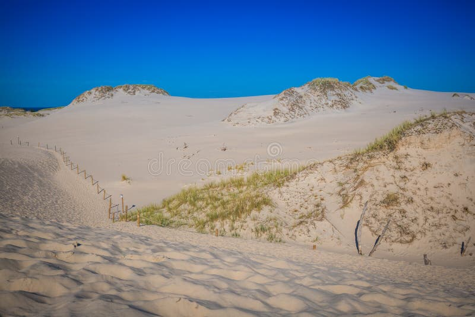
Moving dunes of Słowiński National Park
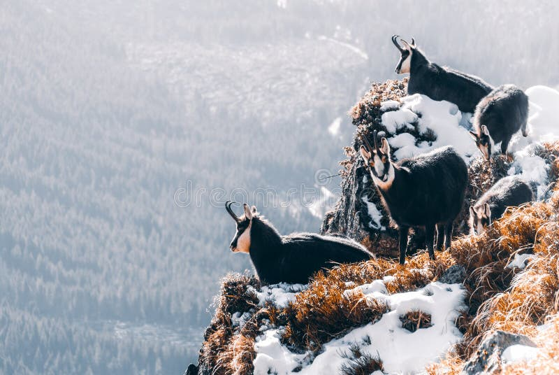
Tatra chamois (Rupicapra rupicapra tatrica)
Primeval Forest Trees of Białowieża
Pedunculate Oak (Quercus robur, dąb szypułkowy)
- Description: Monumental canopy tree reaching 35–45 m; trunk girths can exceed 7–9 m in the oldest “patriarchs.” Thick, deeply fissured bark; lobed, glossy green leaves; acorns on long peduncles. Some individuals in Białowieża exceed 500 years. - Ecology/Behavior: Keystone for >500 invertebrate species; cavities host owls, bats, and pine martens. Fallen giants create “coarse woody debris,” driving nutrient cycles and fungi diversity. - When/Where to See: Białowieża National Park Strict Reserve trails (with guide); best visibility in late fall–winter (leaf-off) to appreciate crown structure. - Conservation: Protected; old-growth cohorts irreplaceable on human timescales—avoid straying off paths to protect sensitive soils.
Norway Spruce (Picea abies, świerk pospolity)
- Description: Spire-like conifer to 50 m; pendant branchlets; cones 10–18 cm. In primeval stands, multi-aged and often draped in beard mosses and lichens. - Ecology: Provides nesting for three-toed woodpecker; windthrows after storms create canopy gaps that reset succession. - When/Where: Białowieża and Carpathians; cones in late summer attract crossbills. - Conservation: Native, thriving; mature dead spruces are integral microhabitats—do not remove “dead wood.”
European Hornbeam (Carpinus betulus, grab pospolity)
- Description: Medium tree (15–25 m), smooth grey bark, fluted “muscular” trunk; serrated leaves; winged hop-like fruit clusters. - Ecology: Shade-tolerant understory co-dominant with oak and lime; leaf litter decomposes slowly, shaping soil profiles. - When/Where: Common in Białowieża mixed stands; spring leaf-flush creates cool, dim forest rooms. - Conservation: Stable; critical for old-growth structure.
- Description: 20–30 m, heart-shaped leaves; fragrant pale-yellow flowers in June–July draw clouds of pollinators. - Ecology: Nectar source for bees; cavities favored by dormice. - When/Where: Białowieża and lowland mixed forests; bloom season is aromatic. - Conservation: Protected in reserves; avoid disturbing bee activity.
European Ash (Fraxinus excelsior, jesion wyniosły)
- Description: Tall, elegant crowns; opposite, pinnate leaves; black winter buds. In riparian fringes of Białowieża. - Ecology: Supports ash-associated lichens; threatened by ash dieback (Hymenoscyphus fraxineus). - When/Where: Moist forest edges and riverine woods spring–summer. - Conservation: Monitoring ongoing; do not transport firewood to prevent pathogen spread.
- Description: Star-shaped composite with felted white bracts, 3–20 cm; woolly pubescence protects from UV and desiccation. - Ecology: Grows on calcareous scree and ledges above ~1,500 m; rare and strictly protected. - When/Where: Western Tatra limestone zones in July–August; look from trails—never leave marked paths. - Conservation: Strictly protected; do not pick or approach cliff edges.
Tatra Poppy (Papaver tatricum, mak tatrzański)
- Description: Endemic alpine poppy with delicate, pale lemon petals; cushions in rock crevices; stems 5–15 cm. - Ecology: Survives freeze–thaw and high winds; roots in gravelly microdepressions. - When/Where: High Tatras above 1,800 m, June–August, on sunny, sheltered ledges. - Conservation: Endemic; highly sensitive to trampling.
Spring Gentian (Gentiana verna, goryczka wiosenna)
- Description: Electric-blue five-petaled flowers, 2–5 cm, in tight rosettes; miniature evergreen leaves. - Ecology: Pollinated by early bees/flies; indicator of undisturbed alpine turf. - When/Where: Alpine meadows and limestone turf April–June. - Conservation: Protected; stick to trails to avoid crushing.
Dwarf Mountain Pine (Pinus mugo, kosodrzewina)
- Description: Prostrate, multi-stemmed pine forming dense krummholz belts at timberline; needles in pairs. - Ecology: Stabilizes scree, buffers avalanches, hosts capercaillie; resins scent warm days. - When/Where: Belt between 1,400–1,800 m surrounding alpine valleys. - Conservation: Do not bushwhack—thickets harbor nesting birds and are easily damaged.
Coastal Plants of Słowiński National Park
European Marram Grass (Ammophila arenaria, piaskownica zwyczajna)
- Description: Tall, stiff grey-green tufts to 1.2 m; rolled leaves; deep rhizomes. - Ecology: Primary dune builder; traps sand and enables foredune formation. - When/Where: Słowiński foredunes year-round; most vigorous after storms. - Conservation: Stay off restoration zones; footprints break rhizome networks.
- Description: Thorny shrub with silvery leaves; bright orange vitamin-rich berries in late summer–autumn. - Ecology: Nitrogen-fixer; berries feed thrushes and waxwings. - When/Where: Back-dunes and coastal scrub August–November. - Conservation: Protected stands; do not harvest in parks.
Scots Pine (Pinus sylvestris, sosna zwyczajna) — coastal forms
- Description: Wind-sculpted trunks with orange upper bark; open crowns. - Ecology: Stabilizes secondary dunes; supports mycorrhizal fungi and crossbills. - When/Where: Maritime pinewoods behind dunes; year-round.
- Description: Robust cap 7–25 cm, chestnut to brown; white to olive pores (never gills), stout white stipe with fine netting (reticulation) near apex; firm, nutty flesh that does not blue. - Ecology: Mycorrhizal with spruce, pine, oak, birch; appears after warm rains. - When/Where: Widespread in coniferous/mixed forests July–October; best after 2–3 days of late-summer rain. - Safety: Beware bitter and toxic lookalikes—test by recognizing pores, reticulation, and non-bluing flesh.
- Description: Vase-shaped, 3–7 cm cap with wavy margins; yolk-yellow; false gills as blunt, forked ridges; fruity apricot aroma. - Ecology: Mycorrhizal with birch, pine, beech; thrives in mossy, well-drained soils. - When/Where: June–October across Poland. - Safety: Avoid confusion with Jack-o’-lantern (Omphalotus illudens, rare in Poland) and false chanterelles (Hygrophoropsis aurantiaca).
Feature
Chanterelle (edible)
False chanterelle (inedible/variable)
Gills
Blunt, forked ridges (not true gills)
Thin, crowded true gills
Color
Uniform egg-yolk yellow
Orange with darker center
Smell
Fruity/apricot
Weak to mushroomy
Flesh
Firm, pale
Fragile, orange-tinted
Fly Agaric (Amanita muscaria, muchomor czerwony)
- Description: Iconic red cap with white warts; white gills and ring; bulbous base with volva remnants. Toxic; causes GI and neurotoxic symptoms. - Ecology: With birch, pine, spruce; often near bilberries. - When/Where: August–October in coniferous/mixed woods. - Safety: Do not consume; photograph only.
Death Cap (Amanita phalloides, muchomor sromotnikowy)
- Description: Olive-green to yellowish cap; white free gills; fragile white ring; large sac-like volva at base; sweetish, sickly odor. Deadly amatoxins resistant to cooking. - Ecology: With oak, beech, hazel in rich soils. - When/Where: July–October in lowland broadleaf woods. - Safety: Never pick white-gilled “parasols” without confirming volva-free base.
- Description: Bilberry—low shrub, solitary dark blue berries that stain fingers/pulp purple; Lingonberry—evergreen mats, glossy leaves, red tart berries. - Ecology: Acidic conifer forests and bog margins; key food for bears, capercaillie. - When/Where: Bilberry July–September; Lingonberry August–October. - Safety: Avoid roadside or industrial areas (pollutants); never eat unknown red berries (e.g., Daphne mezereum is highly toxic).
Fauna
Iconic Mammals of Białowieża and the Lowlands
European Bison (Bison bonasus, żubr)
- Description: Europe’s largest land mammal; males 600–920 kg, up to 1.9 m at shoulder; massive forequarters, shaggy mane, short upturned horns. - Behavior: Herds of cows/calves; bulls solitary outside rut. Feeds on grasses, herbs, bark in winter. Rut August–September with bellowing clashes. - Population/Status: ~1,200 in Białowieża, over 3,000 in Poland total (2025, about 25% of world population); IUCN Near Threatened; free-ranging herds carefully managed. - When/Where: Białowieża meadows at dawn/dusk; winter feeding sites increase viewing odds. - Safety: Keep 100 m distance; never block retreat routes.
Grey Wolf (Canis lupus, wilk)
- Description: 25–45 kg; tawny-grey coat, long legs, bushy tail with black tip. - Behavior: Territorial packs; howling crescendos at dusk; diet includes deer, boar, beaver. - Population/Status: ~2,000 individuals in Poland; IUCN Least Concern globally; strictly protected nationally. - When/Where: Remote forests of Podlasie, Carpathians; winter snow tracking. - Safety: Very shy; keep dogs leashed.
Eurasian Lynx (Lynx lynx, ryś)
- Description: 18–30 kg; tufted ears, pronounced facial ruff, short black-tipped tail; spotted coat. - Behavior: Nocturnal ambush predator of roe deer and hares; solitary. - Population/Status: ~200–300 in Poland; IUCN Least Concern (global), regionally threatened; strictly protected. - When/Where: Białowieża and northeastern forests; best via guided camera-trap tours in winter.
European Beaver (Castor fiber, bóbr europejski)
- Description: 18–30 kg; paddle tail, orange incisors; waterproof fur. - Behavior: Dams and lodges reshape streams; fells willow/aspen; crepuscular. - Population/Status: >100,000 in Poland after reintroduction; IUCN Least Concern. - When/Where: Slow rivers and ponds countrywide; dusk canoe trips on Narew/Biebrza. - Safety: Observe quietly; do not disturb dams.
Elk/Moose (Alces alces, łoś)
- Description: Tallest deer; bulls with palmate antlers; long-legged, dewlap (“bell”). - Behavior: Browsers of willow/birch; active at dawn/dusk; rut September–October. - Population/Status: Expanding, tens of thousands; protected from hunting by moratorium (check current rules). - When/Where: Biebrza marsh edges, August–October.
Wild Boar (Sus scrofa, dzik) and Red Deer (Cervus elaphus, jeleń szlachetny)
- Description: Boar—stocky, bristly; Deer—majestic stags with multi-tined antlers. - Behavior: Boar forage for roots; deer rutting roars in September–October. - Status: Common; boar fluctuate due to ASF management; deer widely distributed. - When/Where: Forest clearings at dusk; listen for rut in Carpathian foothills.
Tatra Mountain Fauna
Tatra Chamois (Rupicapra rupicapra tatrica, kozica tatrzańska)
- Description: Agile goat-antelope; 25–50 kg; chocolate coat in winter, paler in summer; backward-hooked black horns in both sexes; facial black-and-white mask. - Behavior: Herds on scree; expert climbers; kidding May–June; alarm whistles. - Population/Status: Endemic subspecies; ~1,300 in entire Tatras (several hundred on Polish side); threatened historically, now recovering; strictly protected. - When/Where: High Tatra slopes around Kasprowy Wierch and Dolina Pięciu Stawów; early morning on sunny ledges.
Brown Bear (Ursus arctos, niedźwiedź brunatny)
- Description: 80–300 kg; prominent shoulder hump; variable brown to blond coat. - Behavior: Omnivore—berries, carrion, insects; denning Nov–March; active at dusk/dawn. - Population/Status: ~200 in Poland (mostly Carpathians); IUCN Least Concern globally; strictly protected. - When/Where: Remote valleys of Tatra/Beskidy; tracks and scat common, sightings rare. - Safety: Make noise on trails; secure food; never approach.
Tatra Marmot (Marmota marmota latirostris, świstak tatrzański)
- Description: Chunky rodent 3–7 kg; grizzled brown coat; loud whistling alarm calls. - Behavior: Colonial in burrows above 1,500 m; hibernates ~6–7 months; feeds on alpine herbs. - Population/Status: Endemic subspecies; protected. - When/Where: Alpine meadows July–September; watch sunny slopes near burrow entrances.
Golden Eagle (Aquila chrysaetos, orzeł przedni)
- Description: 190–225 cm wingspan; dark brown with golden nape; powerful soaring raptor. - Behavior: Hunts marmots, grouse; territorial pairs occupy vast ranges. - Population/Status: Very scarce breeder in Polish mountains; strictly protected. - When/Where: Soaring above Tatra ridges on thermals, midday.
Birds of Wetlands and Farmland
White Stork (Ciconia ciconia, bocian biały)
- Description: Tall wader; white with black flight feathers; long red legs and bill; clattering bill display on nest. - Behavior: Feeds in meadows on insects, frogs, voles; migrates to Africa via eastern flyway. - Population/Status: ~52,000 breeding pairs—EU’s largest population; IUCN Least Concern. - When/Where: Village rooftops and poles across NE and central Poland; March–August; peak gatherings August before migration.
- Description: Small streaked warbler with distinctive pale crown stripe and fine bill; secretive skulkers. - Behavior: Breeds in sedge fen mosaics; sings from sedge tussocks; long-distance migrant to W Africa. - Population/Status: Globally Vulnerable; Poland hosts a major share, with strongholds in Biebrza; intensive habitat management ongoing. - When/Where: Biebrza Valley May–July at dawn; guided boardwalks increase chances.
- Description: Large, dark eagle with pale shoulder spots; rounded wings; slow, buoyant flight. - Behavior: Hunts over wetlands; nests in tall trees near marshes. - Population/Status: ~20–30 breeding pairs in Poland, mostly NE; globally Vulnerable. - When/Where: Biebrza and Polesie; spring–summer.
Corncrake (Crex crex, derkacz)
- Description: Rail with cryptic brown streaking; blue-grey wash on face; rarely seen, often heard. - Behavior: Males call “crex-crex” incessantly from tall hay meadows; ground nester. - Status: Near Threatened globally; Poland retains strong populations in traditional meadows. - When/Where: Nighttime listening in June in Podlasie meadows.
Common Crane (Grus grus, żuraw)
- Description: Tall grey bird with black-and-white head and red crown patch; bugling calls. - Behavior: Breeds in bogs; forms large migratory flocks in autumn staging. - Status: Increasing; Least Concern. - When/Where: Biebrza and fishpond complexes August–October.
Reptiles and Amphibians of the Wetlands
European Pond Turtle (Emys orbicularis, żółw błotny)
- Description: Dark carapace dotted with yellow specks; 12–38 cm; shy aquatic reptile. - Behavior: Basks on logs; nests in sandy banks. - Status: Near Threatened regionally; rare in Poland. - When/Where: Warm, vegetated oxbows in eastern Poland; late spring–summer.
European Fire-bellied Toad (Bombina bombina, kumak nizinny)
- Description: Small toad with warty brown back; striking orange-black belly used in “unkenreflex” display. - Behavior: Lives in shallow, sun-warmed ponds; chiming bell-like calls. - Status: Least Concern but habitat-sensitive. - When/Where: Lowland ponds May–July.
Geology
The Tatra Mountains: Granite Spires and Limestone Labyrinths
- Formation: The High Tatras are the highest Carpathians, with a granite and gneiss core uplifted in the Neogene, flanked by limestone/dolomite of the Western Tatras. Pleistocene glaciers carved sharp arêtes, cirques, and U-shaped valleys. - Glacial Lakes: Iconic tarns like Morskie Oko and Czarny Staw pod Rysami occupy over-deepened cirques; moraines dam emerald waters up to 50 m deep. - Karst: Western Tatra limestones host caves (e.g., Jaskinia Mroźna), speleothems, and subterranean streams. - Traveler Tip: Weather changes rapidly; stone steps can glaze with verglas even in summer mornings—use trekking poles and check avalanche bulletins in spring.
The Moving Dunes of Słowiński: Poland’s Sahara
- Aeolian Dynamics: Parabolic dunes >40 m high migrate 3–10 m/year under Baltic winds, overrunning forest “graveyards.” - Stratigraphy: Cross-bedded sands record wind regimes; beneath, peat layers reveal past wetter phases. - Traveler Tip: Best light early/late; respect rope barriers—footprints accelerate erosion and damage pioneer plants.
Baltic Coast and Amber
- Amber: Eocene Baltic amber (succinite) washes ashore after storms and low-pressure events; inclusions preserve ancient insects. - Cliffs and Spits: Wolin’s high cliffs of glacial tills reach 93 m at Gosań; longshore drift shapes spits like the Vistula Spit. - Traveler Tip: Post-storm beachcombing at dawn yields amber; test with saltwater float (amber floats) and UV glow—never pick up potential ordnance.
Glacial Landscapes of the North
- Moraines and Kettles: The Masurian Lake District is a quilt of hummocky moraines, eskers, and thousands of kettle lakes formed by melting ice blocks after the last glaciation. - Peat and Palsas: Peat accumulation in depressions formed extensive fens and bogs; relict periglacial forms persist. - Traveler Tip: Canoe trails connect postglacial lakes; avoid stepping on quaking bog mats.
Subsurface Salt: Wieliczka Mine
- Geologic Origin: Miocene evaporites (halite) precipitated from receding seas were later deformed into salt domes and exploited since the 13th century. - Speleology: Labyrinthine chambers, brine lakes, and halite sculptures reveal salt’s plasticity under stress. - Traveler Tip: Guided tours only; constant cool temperatures—carry a light jacket.
Inland Sands: Błędów Desert
- Origin: Aeolian sands exposed by medieval deforestation and wind reworking; a rare inland dune system with open xeric habitats. - Dynamics: Active blowouts alternate with stabilizing grasslands. - Traveler Tip: Summer heat can be intense; stay on marked paths to prevent erosion.
Natural Phenomena
Seasonal Wildlife Spectacles
- Stork Migration (August–September): Tens of thousands of white storks gather on fields and rooftops before riding thermals south along the Vistula corridor. Best seen in “stork villages” of Podlasie and Warmia. - Bison Rut (August–September): Bulls clash and display in Białowieża clearings; dawn fog adds drama—watch silently at a distance. - Deer Rut (September–October): Red deer stags roar across Carpathian valleys at dusk; guided dusk hikes in the Beskids are unforgettable. - Crane Staging (August–October): Flocks numbering in the thousands roost in Biebrza marshes; morning lift-offs fill the sky. - Amphibian Migrations (March–April): Roads near ponds swarm with frogs and toads on rainy nights; many communities deploy “amphibian fences.”
Weather and Sky
- Halny Föhn Wind (Autumn–Spring): Warm, dry downslope wind in the Tatras causes rapid snowmelt, branch breakage, and even headaches—expect sudden weather shifts and heightened avalanche risk. - Summer Thunderstorms: Convective storms build over the lowlands; lightning common—avoid exposed ridges. - Fog Inversions: Autumn and winter dawns in the Tatras reveal peaks floating above a sea of cloud—best from Kasprowy Wierch or Gubałówka. - Aurora Borealis (Rare): Strong geomagnetic storms occasionally paint the Baltic sky with faint curtains—watch forecasts and seek dark coasts.
Dynamic Landscapes
- Moving Dunes: Słowiński’s sand waves engulf forest remnants, creating eerie “dead tree” zones. - Ice Break-up on Rivers: Late winter sees cracking floes on the Vistula and Odra—spectacular but hazardous; watch from bridges. - Rime and Hoarfrost: Freezing fog in the Białowieża winter coats trees in crystalline lace.
Soundscapes and Nights
- Dawn Chorus: Biebrza’s spring mornings shimmer with warblers, snipe “winnowing,” and cranes trumpeting. - Nightjars and Owls: Pine barrens in June vibrate with nightjar churrs; pygmy and tawny owls call from forest edges. - Dark Skies: Masurian lakes offer excellent stargazing; bring red light to protect night vision.
Ecosystems
Primeval Mixed Forest of Białowieża (UNESCO)
- Structure: Multi-layered mosaic of oak–lime–hornbeam with patches of spruce and ash; abundant standing deadwood and massive nurse logs. - Processes: Natural gap dynamics from windthrow and beetle outbreaks maintain age diversity; large herbivores (bison, deer) shape understory. - Biodiversity: Three-toed woodpecker, pygmy owl, hazel dormouse; >1,000 vascular plants and exceptional fungi/lichen diversity. - Traveler Tips: Enter Strict Protection Zone only with licensed guide; stick to boardwalks; carry tick protection (spring–autumn).
Alpine to Montane Gradient of the Tatras
- Zones: Montane spruce forests > subalpine dwarf pine (Pinus mugo) > alpine meadows and scree > nival rock. - Keystone Species: Chamois, marmot, golden eagle; plants like edelweiss and Tatra poppy. - Hazards: Rapid storms, halny winds, snowfields into July; trail ice early mornings. - Traveler Tips: Start hikes at dawn, check forecasts, carry layers and microspikes in shoulder seasons; respect seasonal closures for wildlife.
Baltic Coastal Dunes and Maritime Pine Forests (Słowiński NP)
- Succession: Foredunes (marram) > white dunes > grey dunes with lichens > buckthorn scrub > pinewoods—constantly reset by sand migration. - Fauna: Shorebirds, foxes, migrating passerines; amphibians breed in dune slacks. - Traveler Tips: Strong sun and glare—bring eye protection; sand can be scorching; stay within marked corridors to preserve fragile crusts.
Peatlands and Fens of Biebrza and Narew
- Hydrology: Vast, low-gradient valleys with seasonal flooding; sedge fens, reedbeds, and raised bogs over deep peat deposits. - Specialists: Aquatic warbler, greater spotted eagle, moose; carnivorous plants (Drosera) on bog mats. - Threats: Drainage and peat fires; conservation mowing maintains open fen structure. - Traveler Tips: Spring floods require rubber boots or waders; clouds of mosquitoes—bring repellent; binoculars essential.
River Floodplains of the Vistula and Odra
- Dynamics: Braided channels, sandbars, and willow thickets; natural ice and flood regimes sculpt habitats. - Species: Little tern, common sandpiper, beaver-engineered side channels. - Traveler Tips: Sandbars shift—do not venture on unstable islands; watch for nesting bird closures in spring.
Masurian Lake District Mosaic
- Patchwork: Kettle lakes, alder carrs, hay meadows, and pine forests; postglacial relief fosters edge-rich habitats. - Fauna/Flora: Ospreys and white-tailed eagles hunt over lakes; water lilies, bladderworts in quiet bays. - Traveler Tips: Kayak loops abound; avoid wake near reedbeds (breeding birds); evenings teem with bats—bring a small torch.
Traditional Farmland, Meadows, and Hedgerows
- Landscape: Small fields, orchards, and wet meadows interlaced with willows—ideal for storks, corncrakes, and pollinators. - Practices: Late hay-cutting preserves bird nests; stork platforms on poles. - Traveler Tips: Respect private land; observe from lanes; prime stork watching May–August.
Safety and Practicalities for Nature Travelers
- Seasons: Spring (April–May) for birds and blooms; summer (June–August) for mushrooms/berries and alpine access; autumn (September–October) for ruts and colors; winter (December–February) for tracking and primeval silhouettes. - Gear: Waterproof boots for wetlands; insect repellent for ticks/mosquitoes; layers and rain shell in mountains; binoculars and field guide apps. - Ethics: Stay on marked trails; no foraging in national parks; pack out waste; maintain wildlife distances (bison 100 m, bears 200 m). - Health: Tick-borne diseases present—use repellents, perform checks; drink only treated water in the wild.
Fonti e Riferimenti: Białowieża National Park management reports; Tatra National Park visitor and species data; Słowiński National Park geomorphology notes; Polish BirdLife (OTOP) species accounts; IUCN Red List assessments; Polish State Forests (Lasy Państwowe) statistics; academic literature on Biebrza fen management and Masurian postglacial geomorphology.
🇱🇹 Lithuania
Flora
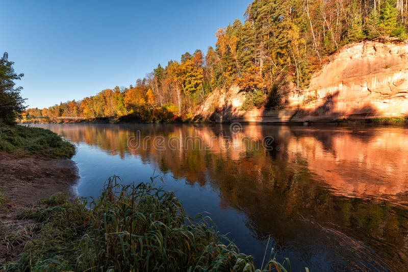
Red sandstone cliffs on the Gauja River in autumn
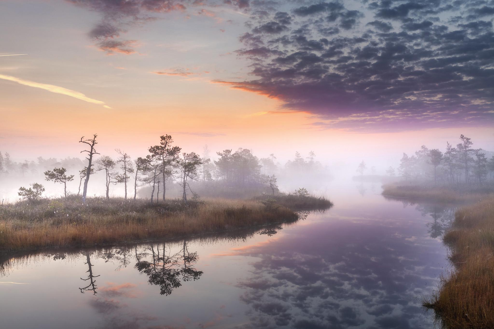
Ķemeri bog at sunrise
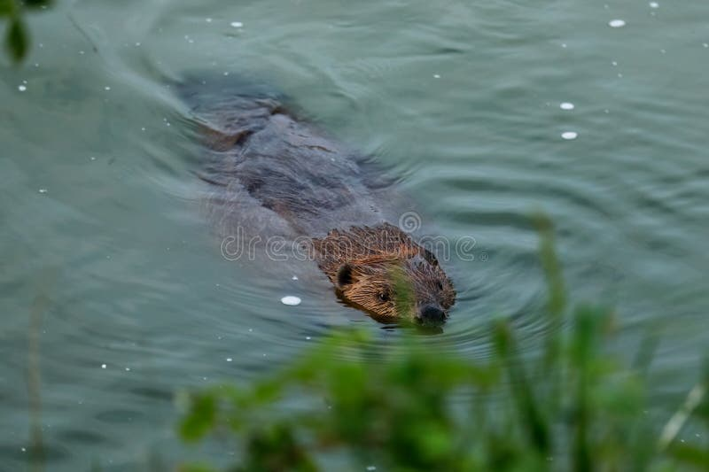
European beaver (Castor fiber)
Trees and Dominant Forest Species
Scots Pine (Pinus sylvestris, Pušis)
Physical: Tall, straight trunks to 35 m, orange-tinged upper bark plates, blue-green needles in pairs (4–7 cm), cones ovoid 3–7 cm. Thrives on sandy, acidic soils.
Behavior/Ecology: Pioneer tree stabilizing dunes and poor soils; forms light, aromatic forests with rich ground lichen carpets.
Where/When: Common in Dzūkija and on the Curonian Spit; year-round ID. Best light for photography at dawn/dusk.
Conservation: Least Concern; key for capercaillie and woodlark habitat.
Traveler tip: Fire risk in dry summers—heed forest fire warnings and stay on paths in dune zones.
Norway Spruce (Picea abies, Eglė)
Physical: Conical crown, drooping branchlets, single sharp needles (1.5–2.5 cm), long pendulous cones (10–18 cm).
Behavior: Dominates moister, cooler sites inland; provides winter cover for deer and birds.
Where/When: Widespread in mixed forests, notably Aukštaitija National Park; cones ripen late summer–autumn.
Conservation: Least Concern; sensitive to windthrow after storms.
Tip: Look for crossbills cracking cones in late winter.
Silver Birch (Betula pendula, Karklas/Berce)
Physical: White peeling bark with dark fissures; delicate triangular leaves; catkins in spring.
Behavior: Fast-growing pioneer after logging or fire; supports myriad fungi.
Where/When: Throughout; catkins April–May, golden foliage in October.
Conservation: Least Concern.
Tip: Birch stands host chanterelles; tread lightly to protect the mycelium.
Pedunculate Oak (Quercus robur, Ažuolas)
Physical: Massive trunk, broad crown; leaves with deep lobes and long-stalked acorns.
Ecology: Long-lived keystone hosting hundreds of insect species and cavity-nesting birds.
Where/When: Ancient oaks in Žemaitija; acorn drop Sept–Oct.
Conservation: Least Concern locally; veteran trees protected.
Tip: Do not climb veteran oaks; root zones compact easily.
Coastal and Dune Specialists
Marram Grass (Ammophila arenaria, Smiltynė)
Physical: Tough, rolled leaves; dense rhizomes binding sand; seedheads to 1 m.
Behavior: Primary dune-builder; traps windblown sand, enabling foredune growth.
Where/When: Curonian Spit foredunes year-round.
Conservation: Vital for dune stability.
Tip: Never walk on embryonic dunes; use boardwalks.
Mountain Pine (Pinus mugo, Kalninė pušis)
Physical: Multi-stemmed, shrubby pine; short needles in pairs; low, wind-pruned form.
Behavior: Planted to stabilize shifting dunes; forms dark green belts behind foredunes.
Where/When: Curonian Spit, particularly around Juodkrantė; year-round.
Conservation: Managed; can alter native dune flora structure.
Tip: Watch for sunning slowworms on adjacent trails in summer.
Curonian (Rugosa) Rose (Rosa rugosa, Raugerškis/Erškėtis Kuršių rožė)
Physical: Rugged, wrinkled leaves; magenta to white flowers; large orange-red hips.
Behavior: Salt-tolerant, stabilizes back-dunes; can become invasive.
Where/When: Curonian Spit and coastal edges; blooms June–August, hips in autumn.
Conservation: Managed due to invasiveness; supports pollinators.
Tip: Hips are edible (after removing irritating hairs) but harvest sparingly.
Wetland and Bog Plants
Common Reed (Phragmites australis, Nendrė)
Physical: Tall (to 3 m) reed with feathery panicles.
Ecology: Dominant in lagoons and deltas; key for bitterns and warblers.
Where/When: Nemunas Delta, Curonian Lagoon margins; spring green-up, winter ice silhouettes.
Tip: Mosquitoes peak June–July—wear repellent.
Sphagnum Mosses (Sphagnum spp., Kiminai)
Physical: Spongy, waterlogged carpets; colors range green to red.
Behavior: Acidifies water, forming peat; stores carbon.
Where/When: Raised bogs (e.g., Čepkeliai); best viewed from boardwalks May–September.
Conservation: Peatland restoration ongoing—stay on marked paths.
Bog Cranberry (Vaccinium oxycoccos, Spanguolė)
Physical: Thread-like vines, tiny evergreen leaves, pink reflexed flowers, red berries.
Behavior: Fruits late autumn; withstands frost under snow.
Where/When: Acid bogs; picking permitted in some areas Oct–Nov (know rules).
Tip: Test sphagnum mounds before stepping—hidden pools are dangerous.
Wildflowers and Meadow Species
Meadow Clary (Salvia pratensis, Šalavijas pievinis)
Physical: Violet bilabiate flowers on square stems; aromatic leaves.
Ecology: Attracts bumblebees; indicates healthy hay meadows.
Where/When: Dry meadows May–July.
Tip: Early morning shows dewy spiderwebs among clary stands.
Cornflower (Centaurea cyanus, Rugiagėlė)
Physical: Brilliant blue flower heads; slender gray-green leaves.
Behavior: Traditional field margin plant, reduced by herbicides; resurging in agri-environment schemes.
Where/When: Farmland edges June–August.
Cultural note: Lithuania’s national flower; iconic in midsummer wreaths.
Mushrooms and Fungi (Dzūkija Foraging Heartland)
King Bolete/Porcini (Boletus edulis, Baravykas)
Physical: Stout, brown cap (7–25 cm), pale pores (white to olive), reticulate stem. Firm white flesh with nutty aroma.
Ecology: Mycorrhizal with pine, spruce, birch; fruits late Aug–Oct.
Where/When: Dzūkija pinewoods, Aukštaitija; after warm rains.
Tip: Slice stems to check for larvae; carry a mesh bag to spread spores.
Chanterelle (Cantharellus cibarius, Voveraitė)
Physical: Golden-yellow, funnel-shaped cap with blunt, decurrent ridges; fruity apricot scent.
Ecology: Mycorrhizal in mixed forests; fruits June–Sept.
Where/When: Widespread; thrives in mossy birch-pine stands.
Safety: Distinguish from false chanterelle and toxic Jack-o’-lantern (rare in region).
Fly Agaric (Amanita muscaria, Musmirė)
Physical: Bright red cap with white warts, white gills and ring, bulbous stem with volva remnants.
Ecology: Mycorrhizal with birch and pine; Aug–Oct.
Status: Toxic/psychoactive—do not consume.
Where/When: Common, photogenic near birch copses.
False Morel (Gyromitra esculenta, Bobausis)
Physical: Brain-like, convoluted brown cap; hollow or chambered stipe.
Ecology: Sandy, pine clearings in spring (April–May).
Safety: Highly toxic (gyromitrin); toxins persist even after parboiling—avoid.
Mushroom identification table:
Species (Local)
Cap/Gills/Pores
Stem/Volva/Ring
Smell
Season
Key ID Tips
Dangerous Lookalikes
Porcini (Baravykas)
Brown cap; pores white→olive
Bulbous, reticulate; no ring/volva
Nutty
Aug–Oct
White flesh does not blue; thick pore layer
Bolete species that blue or with red pores (inedible/toxic)
Panther cap (more dangerous; brown cap with white warts)
False Morel (Bobausis)
Brain-like, irregular
Short, chambered
Slightly sweet
Apr–May
Convoluted cap attached at points
True morels (not common; honeycomb pits and ridges)
Berries and Forest Fruits
Bilberry (Vaccinium myrtillus, Mėlynė)
Physical: Low shrub to 40 cm; green angular stems; blue-black berries staining fingers purple.
Ecology: Acidic soils in pine/spruce forests; fruits July–August.
Where/When: Dzūkija and Aukštaitija understorey.
Tip: Pick into shallow containers to prevent crushing; watch for ticks.
Lingonberry (Vaccinium vitis-idaea, Bruknė)
Physical: Evergreen mats with leathery, oval leaves dotted beneath; red glossy berries.
Ecology: Drier, sandy pinewoods; fruits Aug–Oct (often persists into winter).
Where/When: Curonian Spit back-dunes, inland heaths.
Culinary: Tart; commonly preserved as jam.
Sea Buckthorn (Hippophae rhamnoides, Šaltalankis)
Physical: Thorny shrubs with silver-gray leaves; vivid orange berry clusters.
Ecology: Salt-tolerant, stabilizes coastal sands.
Where/When: Klaipėda coast and Curonian Spit; berries Sept–Nov.
Tip: Wear gloves; thorns are sharp and sap can irritate.
Berry identification table:
Edible Berry
Plant Traits
Berry Traits
Habitat
Peak Season
Lookalike (Toxic/Unsafe)
How to Tell Apart
Bilberry (Mėlynė)
Green angular stems, small leaves
Blue-black, stains purple
Acidic conifer forests
July–Aug
Deadly nightshade (rare in region), black bryony berries
Nightshade is a taller forb with bell flowers; black bryony is a climber with red berries
Lingonberry (Bruknė)
Evergreen, leathery leaves (pale dots below)
Bright red, tart
Dry pinewoods, heaths
Aug–Oct
Cotoneaster berries
Cotoneaster is a shrub with larger leaves and clusters; avoid urban plantings
Cranberry (Spanguolė)
Thread-like vines, tiny leaves
Red, tart
Raised bogs
Sept–Nov
Bog rosemary (toxic leaves), dwarf cornel berries (edible but mealy)
Cranberry vines creep; rosemary is a shrub with pink bells and needle-like leaves
Sea buckthorn (Šaltalankis)
Thorny, silver foliage
Dense orange clusters
Coastal sands
Sept–Nov
Firethorn (urban ornamental)
Firethorn has compound leaves; usually in gardens, not wild dunes
Fauna
Iconic and Large Mammals
Moose/Elk (Alces alces, Briedis)
Physical: Europe’s largest deer; bulls 350–500 kg, shoulder height 1.8–2.1 m; long legs, humped shoulders; males with broad palmate antlers.
Behavior: Solitary; crepuscular; browses willows, birch, aquatic plants. Rut Sept–Oct; calves in May–June.
Where/When: Wet forest edges and bog margins in Aukštaitija, Dzūkija; dawn/dusk sightings.
Status: Least Concern; stable with seasonal road-collision risk.
Tip: Keep 100 m distance; cows with calves charge if approached.
Eurasian Beaver (Castor fiber, Bebras)
Physical: Up to 30 kg; large flat tail; dense brown fur; orange incisors.
Behavior: Crepuscular/ nocturnal; dams streams, builds lodges; reshapes hydrology creating wetlands.
Where/When: Virtually all river valleys and ponds; fresh gnaw marks year-round, best viewing at dusk in spring.
Status: Least Concern; very common after successful reintroduction/ protection.
Tip: Sit quietly downstream; carry binoculars and avoid loud movements.
Gray Wolf (Canis lupus, Vilkas)
Physical: 25–45 kg; gray-brown coat with darker saddle; long legs, bushy tail.
Behavior: Packs maintain large territories; prey on deer, boar, beaver. Most active twilight/night.
Where/When: Remote forests of Dzūkija and Žemaitija; howling surveys in autumn.
Population: Around 250–300 individuals; strictly managed.
Tip: Wolf encounters are rare; store food securely when camping.
European Bison (Bison bonasus, Stumbras)
Physical: Europe’s heaviest land mammal; bulls 600–900 kg; massive shoulders, short horns.
Behavior: Herds; grazers of meadows and young forest regrowth.
Where/When: Central Lithuania near Pašiliai/Panevėžys breeding and free-ranging groups; guided visits year-round.
Status: Near Threatened globally; reintroduced and growing locally.
Tip: View from designated platforms; do not approach or feed.
Birds: Lithuania’s Skies and Wetlands
White Stork (Ciconia ciconia, Gandras)
Physical: Tall (100–115 cm), white with black flight feathers; red bill and legs; clattering bill display.
Behavior: Nests on poles, chimneys, trees; feeds in meadows and wetlands on insects, amphibians, rodents.
Where/When: Countrywide villages; breeding March–August; huge post-breeding gatherings in August.
Population: ~13,000 breeding pairs; among Europe’s highest densities (up to 160 nests/100 km² in the west).
Status: Least Concern; protected symbol of Lithuania.
Tip: Best viewing in Nemunas Delta and Samogitian villages; respect nest platforms.
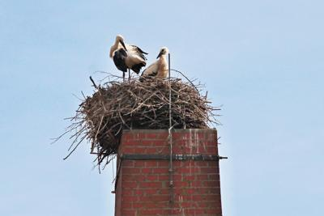
White Stork nest
Black Stork (Ciconia nigra, Juodasis gandras)
Physical: Dark iridescent plumage with white belly; red bill/legs; shyer than white stork.
Behavior: Breeds in old forests near quiet streams.
Where/When: Scattered across mature forests; April–August.
Status: Least Concern globally; regionally sensitive; several hundred pairs.
Tip: Use hides; avoid disclosing nest locations.
White-tailed Eagle (Haliaeetus albicilla, Jūrinis erelis)
Physical: Massive (wingspan 200–240 cm); brown body; wedge-shaped pale tail in adults; heavy yellow bill.
Behavior: Fish and carrion eater; nests near large waters.
Where/When: Curonian Lagoon, Nemunas Delta; year-round with winter concentrations.
Status: Least Concern; recovering; 100+ pairs in Lithuania.
Tip: Scan treetops and ice margins in winter.
Great Cormorant (Phalacrocorax carbo, Didysis kormoranas)
Physical: Black waterbird with hooked bill; breeding adults show white thigh patches.
Behavior: Colony nester; guano kills nest trees over time.
Where/When: Huge colony near Juodkrantė on the Curonian Spit; March–September.
Population: Thousands of nests; >10,000 birds at peak.
Tip: Strong odor at colonies; bring a hat and wear washable clothes.
Common Crane (Grus grus, Gervė)
Physical: Tall grey bird, black and white face patterns, red crown patch; loud trumpeting calls.
Behavior: Breeds in bogs; forms large staging flocks in autumn.
Where/When: Čepkeliai, Žuvintas; migration peaks Aug–Sept.
Status: Least Concern; increasing.
Tip: Evening roost flights at Nemunas Delta are spectacular.
Eurasian Bittern (Botaurus stellaris, Didysis garšvas)
Physical: Streaked brown heron; camouflaged; males produce foghorn-like booming in spring.
Behavior: Requires extensive reedbeds.
Where/When: Žuvintas and Nemunas Delta; April–June best for hearing.
Status: Least Concern; locally dependent on reedbed quality.
Tip: Arrive pre-dawn with calm winds to hear booming carry far.
Fish, Amphibians, and Reptiles
European Eel (Anguilla anguilla, Ungurys)
Physical: Long, serpentine fish; yellow-brown (yellow phase), silvered flanks (silver eel).
Behavior: Catadromous; grows in freshwaters, spawns in the Sargasso Sea.
Where/When: Rivers and lagoons; most active summer nights.
Status: Critically Endangered; strict protections.
Tip: Observe ethically—do not target or consume.
Pike-perch/Zander (Sander lucioperca, Starkis/Žandoras)
Physical: Spiny dorsal fins; pale body with dark bars; glassy eyes adapted to low light.
Behavior: Predatory; thrives in turbid waters like Curonian Lagoon.
Where/When: Lagoon and lower Nemunas; dawn/dusk feeding.
Status: Least Concern; regulated fishery.
Tip: Local smoked zander is a regional specialty (from licensed sources).
Viviparous Lizard (Zootoca vivipara, Gyvatvorė driežas)
Physical: Small brown-green lizard; females darker, males may show green hues; gives birth to live young.
Where/When: Dune heaths and bog edges; sunning on boardwalks May–August.
Status: Least Concern.
Tip: Watch your step on sunlit planks.
Small Mammals and Notables
Wild Boar (Sus scrofa, Šernas)
Physical: Stocky, bristly coat; tusked males; piglets striped.
Behavior: Nocturnal in human-used landscapes; omnivorous; can be bold.
Where/When: Forests and fields; dusk sightings.
Status: Least Concern; affected by African swine fever management.
Tip: Give sows with piglets wide berth.
European Otter (Lutra lutra, Ūdra)
Physical: Sleek brown body; pale throat; webbed feet; long tail.
Behavior: Mostly nocturnal; slides and spraints mark territories.
Where/When: Clean rivers/lakes; winter tracking on snow is productive.
Status: Near Threatened in some regions; recovering with cleaner waters.
Tip: Look for oily spraints on bridge stones.
Geology
The Curonian Spit: A Mobile Sand Monument
- Formation: A 98 km sand barrier peninsula formed over the last several millennia by wind, waves, and longshore drift, enclosing the Curonian Lagoon. - Dune Systems: Grand Dune Ridge with shifting dunes up to ~60 m high; parabolic dunes migrate inland under prevailing winds. - Dynamics: Vegetation management (marram and mountain pine) stabilizes dunes; unmanaged sections still creep meters per year. - Human History: Villages historically buried by mobile sands; boardwalks and fences now guide visitors and protect surfaces. - Where/When: Nida’s “Parnidis Dune” offers panoramic views; sunrise emphasizes wind-rippled microdunes. - Tip: Strong westerlies sculpt fresh ripple marks after autumn storms—ideal for photography.
Glacial Legacy: A Country Shaped by Ice
- Landforms: Ground moraines, kames, eskers, kettle lakes result from the last Weichselian glaciation retreat (~12–13 ka). - Soils: Sandy podzols in the southeast (Dzūkija) versus richer glacial tills in the north and west shaping forest types and agriculture. - Notables: Aukštadvaris eskers snake across forests; thousands of lakes dot Aukštaitija. - Tip: Kettle-lake shores host rich dragonfly assemblages in June–July.
Nemunas Delta: A Young, Pulsing Landscape
- Age: Geologically youthful—formed roughly 1,000–1,100 years ago as sediments accumulated at the Nemunas River mouth. - Structure: Multiple branching channels, floodplain meadows, polders, and managed sluices. - Dynamics: Seasonal flooding replenishes soils; vital for fish spawning and migratory birds. - Where/When: Spring floods (March–April) bring waterfowl spectacles; summer hay meadows buzz with life. - Safety: Respect flood warnings and stick to levees during high water.
Baltic Amber and Coastal Processes
- Amber: Fossilized resin (Baltic amber) eroded from Paleogene sediments; often released by storms and winter ice-scour. - Where/When: After strong autumn–winter storms near Palanga and along the Curonian Spit beaches. - Identification: Amber is warm, light, floats in saturated salt solutions; may include insect inclusions. - Tip: Collecting small pieces on open beaches is typically allowed; avoid protected dune zones.
Baltic amber on wet sand
Natural Phenomena
White Nights and Long Twilights
- Latitude Effect: At ~55–56°N, summer solstice brings ~17–18 hours of daylight with prolonged civil twilight. - Experience: Forest edges glow until near-midnight in June; birds sing late; excellent conditions for crepuscular wildlife watching. - Tip: Bring an eye mask for sleep; prime photography light lasts for hours.
Baltic Storms, Sea Ice, and Amber Wash-ups
- Autumn–Winter Storms: Gale-driven surf rearranges beaches, exposes amber and fossil wood; foam lines accumulate wrack. - Sea Ice: In cold winters, lagoon and sheltered coast can freeze—creating eerie “ice shove” ridges. - Safety: Avoid unstable ice and storm surf; check local advisories.
Bird and Stork Migrations
- Nemunas Delta Flyway: Massive movements in April–May and August–October—geese, ducks, cranes, raptors. - Stork Spectacle: August sees white storks massing in fields, practicing soaring before departing to Africa. - Tip: Early mornings with light tailwinds concentrate migrants; use a windbreak on levees.
Fog, Hoar Frost, and Rime
- Phenomena: Autumn radiation fog pools in river valleys; winter hoar frost decorates reeds, especially at sunrise. - Where/When: Žuvintas, Nemunas floodplain; calm, cold mornings. - Tip: Protect camera batteries; condensation control is essential.
Occasional Northern Lights
- Aurora: Rare but possible during strong geomagnetic storms; best in dark-sky rural north and coast. - Tip: Watch space weather forecasts; seek clear northern horizons.
Ecosystems
Hemiboreal Mixed Forests (Approx. 33% of Lithuania)
- Composition: Pine-spruce-birch-oak mosaics on glacial soils; understory of bilberry, lingonberry, heather, and mosses. - Fauna: Moose, roe deer, wild boar; wolves and lynx (elusive); capercaillie in mature pines, owls and woodpeckers in mixed stands. - Seasonality: Spring ephemerals in April–May; mushroom flushes late summer–autumn; golden foliage October. - Tips: Ticks carry Lyme and tick-borne encephalitis—wear long sleeves, use repellent, and check after hikes.
Curonian Spit Dune System (UNESCO World Heritage)
- Structure: Fore- and back-dunes, stabilized forest belts, shifting dune reserves. - Flora: Marram grass, sea holly, mountain pine belts; lichens and pioneer forbs in blowouts. - Fauna: Shorebirds, cormorants, white-tailed eagles, viviparous lizards; migrating passerines funnel along the peninsula. - Fragility: Foot traffic rapidly erodes dune crests; strict trail use enforced. - Tips: Best light early/late; winds can be fierce—secure hats and protect optics from sand.
Wetlands and River Deltas (Nemunas Delta Regional Park)
- Habitats: Floodplain meadows, reeds, oxbows, polders, and channels. - Birds: Bitterns, marsh and Montagu’s harriers, terns, large goose flocks; cranes staging in late summer. - Fish: Pike, zander, bream spawning; lampreys migrate upriver. - Human Use: Traditional haymaking maintains open meadows; regulated hunting and fishing. - Tips: Spring (April) and early autumn (Sept) are peak wildlife periods; bring knee boots for levee-side excursions.
Peat Bogs and Mires (Čepkeliai, Žuvintas)
- Structure: Raised bog domes with sphagnum carpets, dwarf pines, pools and strings. - Plants: Cranberry, sundews, bog rosemary (toxic), cotton-grasses. - Insects: Dragonflies, craneflies, specialized butterflies. - Wildlife: Cranes, wood sandpipers, teal; capercaillie and black grouse in adjacent heaths. - Conservation: Strict reserves with boardwalks; sensitive hydrology restored by blocking drains. - Tips: Visit on still mornings for mirror-like pool reflections; stay on paths—bog surfaces can be deceptively thin.
Lakes and Forested Hills (Aukštaitija National Park)
- Features: Interconnected kettle lakes, forested ridges, eskers; clear waters with submerged macrophytes. - Species: Loons/divers (rare), smelt runs in winter, otters. - Recreation: Canoe trails link lakes via narrow channels. - Tips: Dawn paddles offer beaver and waterbird encounters; avoid loud splashes.
Farmland Mosaic and Village Landscapes
- Structure: Small fields, hedgerows, fruit trees, barns with stork nests. - Birds: Skylarks, yellowhammers, corncrakes in unmown meadows, barns with swallows. - Seasonality: Corncrake calls peak May–June before haying. - Tips: Respect private property; observe from roadsides and public footpaths.
Žuvintas Biosphere Reserve: Lake and Marsh
- Habitat: Lithuania’s oldest reserve; shallow eutrophic lake, vast reedbeds, and surrounding wetlands. - Highlights: Booming bitterns, white-tailed eagles, breeding whiskered terns; amphibian choruses in spring. - Access: Visitor center and observation towers; some zones restricted for breeding. - Tips: Bring spotting scope; mornings less windy for reedbed observations.
Practical Wildlife Watching Tips: - Best Seasons: - Spring (April–May): Migration, crane displays, frogs calling, fresh greens. - Summer (June–July): White nights, dragonflies, orchids, dune flora. - Late Summer–Autumn (Aug–Oct): Mushrooming in Dzūkija; stork and raptor migration; amber after storms. - Winter (Dec–Feb): White-tailed eagles on ice edges; track mammals in snow; smelt fisheries in Klaipėda. - Safety and Ethics: Keep safe distances (100 m for large mammals and raptors), use binoculars/scopes, never feed wildlife, stick to trails in dunes and bogs, and check for ticks after forest visits. In wetlands, wear waterproof boots and carry insect repellent; in winter, verify ice safety with local authorities.
Fonti e Riferimenti: UNESCO World Heritage Centre (Curonian Spit); Lithuanian State Forest Service; Nemunas Delta Regional Park; Žuvintas Biosphere Reserve Directorate; BirdLife International; IUCN Red List; Lithuanian Hydrometeorological Service; regional park visitor guides and interpretation panels.
🇱🇻 Latvia
Flora
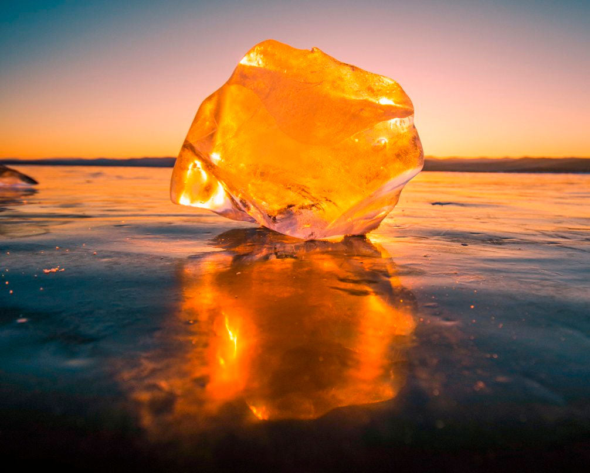
Raw Baltic amber
Dominant Trees of the Hemiboreal Forest
Scots Pine (Pinus sylvestris, parastā priede)
Tall, straight-trunked conifer, often 25–35 m tall (max ~40 m), with orange-tinged upper bark plates and long, paired needles (4–7 cm). Cones are ovoid (3–7 cm), maturing to gray-brown. Forms light, resin-scented stands on sandy soils and dunes. Provides key habitat for capercaillie and crossbills. Where/When: Widely across Latvia; notable on coastal dunes (Jūrmala–Saulkrasti) and dry inland soils year-round; best color contrast in low winter light.
Norway Spruce (Picea abies, parastā egle)
Dark-green spire reaching 30–45 m, drooping branchlets, and long pendulous cones (10–18 cm). Dense shade fosters moss carpets and fungal diversity. In windthrows, uprooted “mound-and-pit” microtopography supports saplings and ferns. Where/When: Common in cooler, moister stands; Gauja NP and Vidzeme highlands. Winter highlights silhouettes and cones; spring shows fresh, pale-green flush.
White, peeling bark with black fissures; delicate, triangular leaves; catkins in spring. Fast pioneer of clearings, nurturing a rich ground layer of bilberry and lichens. Autumn brings golden canopies. Where/When: Widespread; photogenic groves in Zemgale and around lakes. Best in May (catkins) and late Sept–Oct (foliage).
Pedunculate Oak (Quercus robur, parastais ozols)
Massive, buttressed trunks (diameter often 1–2 m), lobed leaves, and long-stalked acorns. A keystone for biodiversity—hosts hundreds of invertebrate species and cavity-nesting birds. Ancient specimens occur in manor parks and remnant lowland forests. Where/When: Tērvete area and historical parks; visit year-round; spring leaf-out is vivid; winter silhouettes reveal age.
Small-leaved Lime (Tilia cordata, parastā liepa)
Heart-shaped leaves, fragrant late-summer flowers rich in nectar for bees. Forms noble groves on fertile soils; basswood cavities shelter bats and owls. Where/When: Mixed forests and old alleys; bloom July; listen for intense bee activity on warm afternoons.
Common Juniper (Juniperus communis, parastais kadiķis)
Needle-leaved evergreen shrub/tree, blue-black aromatic “berries” (cones) taking two years to ripen. Occurs on dry heaths and dunes, stabilizing sandy soils. Where/When: Coastal dunes and inland heaths; best seen in spring for fresh growth; berries ripen autumn.
Evergreen shrub with narrow, revolute leaves, undersides rusty-woolly; heady resinous scent. White flower clusters in late spring. Traditional use as moth-repellent; leaves contain terpenes—do not ingest. Where/When: Raised bogs (Ķemeri, Teiči); peak bloom May–June; best early mornings when aroma is strongest.
Bog Rosemary (Andromeda polifolia, purva rozmarīns)
Low shrub with narrow blue-green leaves; graceful pink, nodding, urn-shaped flowers. Attractive but toxic (grayanotoxins). Where/When: Floating mats and bog hollows in raised bogs; bloom May–June.
Common Heather (Calluna vulgaris, virši)
Hardy dwarf shrub of dry heaths and bog margins; tiny scale-like leaves; purple blooms from late July–September. Supports heathland pollinators and autumn nectar flow. Where/When: Coastal pine heaths, sandy inland areas; best color in August.
Silver-green, thorny shrub with vivid orange berries clustered on branches. Nitrogen-fixer stabilizing dunes; berries rich in vitamin C; tart taste. Where/When: Western Baltic dunes and foredunes; fruit September–November; observe from paths—thorns are sharp.
Slender orchid with arching spikes of intricate white-purple flowers, often in calcareous fens and seepage meadows. Where/When: Engure Lake meadows, Gauja NP calcareous seeps; bloom June–July; tread carefully—soils are delicate.
Large, yellow “slipper” lip with maroon petals; Europe’s most charismatic orchid. Requires old, semi-open woods with limestone influence. Strictly protected—look, don’t touch. Where/When: Patchy in older forests of Vidzeme and Latgale; bloom late May–June.
Wild Berries (Foraging Guide)
Bilberry (Vaccinium myrtillus, mellene/mellenes)
Low shrub carpeting forest floors; blue-black berries with strongly pigmented pulp (stains fingers). Sweet-tart flavor; leaves green on both sides. Where/When: Pine and spruce forests; July–August peak.
Evergreen with thick, shiny leaves (pale-dotted underside); bright red berries in late summer-autumn. Tart; used in jams. Where/When: Dry pine forests and heaths; August–October.
Cranberry (Vaccinium oxycoccos, purva dzērvene)
Creeping bog plant with tiny leaves; pink reflexed flowers; dark red berries that persist into winter and after frosts. Where/When: Raised bog hollows (Ķemeri boardwalk views); September–November, and even early spring post-thaw.
Berry identification and lookalikes (exercise caution; never eat unidentified plants):
Berry
Key ID features
Habitat
Edibility
Dangerous lookalikes (Latvia)
Bilberry (Vaccinium myrtillus)
Blue skin and blue flesh; solitary berries; leaves thin
Conifer/birch forest
Edible
Herb-paris (Paris quadrifolia) single black berry on four leaves—poisonous
Lingonberry (V. vitis-idaea)
Evergreen, shiny leaves; red clusters
Dry pine heaths
Edible
Lily-of-the-valley (Convallaria majalis) red berries in pairs—poisonous
Cranberry (V. oxycoccos)
Creeping stems; tiny leaves with rolled margins; tart
Raised bogs
Edible (raw/sauced)
Mezereon (Daphne mezereum) bright red berries on woody stems in forest—poisonous
Practical tips: Forage only where permitted; use a field guide; avoid roadside picking; wash berries. Autumn mornings after cool nights concentrate sugars.
Mushrooms (Foraging Guide)
Chanterelle (Cantharellus cibarius, gailene)
Golden-yellow funnel cap with wavy margin; blunt, forked ridges instead of true gills; fruity apricot aroma; firm flesh. Mycorrhizal with birch, pine, spruce; appears after warm summer rains. Where/When: Mossy conifer-birch woods nationwide; June–October, with peak July–September.
Porcini/King Bolete (Boletus edulis, baravika)
Brown, bun-like cap; thick white stipe with fine reticulation near apex; pores white to greenish; nutty aroma. A premier edible; often under spruce, pine, birch. Where/When: Mixed forests; July–October; early mornings after rain yield best finds.
Birch Bolete (Leccinum scabrum, bērzu beka)
Gray-brown cap; long stipe with dark scabers; white pores turning grayish. Edible when cooked well. Where/When: Under birch, often forest edges; July–September.
Fly Agaric (Amanita muscaria, sarkanā mušmire)
Iconic red cap with white warts; white gills and skirt ring; bulbous base with volva. Toxic hallucinogen—do not consume. Where/When: Common under birch and pine; August–October; striking photo subject only.
Death Cap (Amanita phalloides, zaļā mušmire)
Greenish to olive cap; white gills and ring; sack-like volva at base; deadly amatoxins. Where/When: Broadleaf woods with oak/lime; August–October; educate children about its danger.
Mushroom identification table and lookalikes:
Species
Cap/gills/pores
Smell
Spore print
Edibility
Lookalikes (risk)
Chanterelle (Cantharellus cibarius)
Wavy funnel; blunt ridges (not true gills)
Fruity, apricot
Pale yellow
Choice edible
False chanterelle (Hygrophoropsis aurantiaca) has true, thin gills; poorer edible; avoid if unsure
Porcini (Boletus edulis)
Brown cap; pores white→olive; reticulate stipe
Pleasant, nutty
Olive-brown
Choice edible
Bitter bolete (Tylopilus felleus) has strong netting and very bitter flesh; red-pored boletes can cause GI upset—avoid red-pored species
Birch Bolete (Leccinum scabrum)
Gray cap; scabered stipe; white pores
Mild
Brownish
Good edible (well cooked)
Some Leccinum cause GI upset if undercooked
Fly agaric (Amanita muscaria)
Red cap with white warts; white gills; volva
Faint mushroomy
White
Toxic
Panther cap (A. pantherina) similar but brown—also toxic
Death cap (Amanita phalloides)
Greenish cap; white gills; volva; ring
Sweetish
White
Deadly
Young specimens resemble edible parasols or russulas—never pick white-gilled Amanita-like mushrooms
Safety: Use a reliable guide; avoid white-gilled, ringed mushrooms with a volva; when in doubt, leave it. Collect in clean baskets; cook thoroughly; respect protected areas.
Fauna
Large Mammals and Carnivores
Eurasian Lynx (Lynx lynx, lūsis)
Medium-sized wildcat with tufted ears (2–3 cm tufts), short black-tipped tail, long legs, and spotted tawny coat. Solitary, crepuscular, silent stalker of roe deer and hares. Tracks show large round prints without claw marks. Status: IUCN Least Concern; protected regionally. Where/When: Dense forests of Vidzeme and Latgale; most active dusk/dawn, winter tracking in fresh snow is best.
Gray Wolf (Canis lupus, vilks)
Powerful canid with broad head, grizzled gray-brown coat, and long legs; packs maintain territories across forest-mire mosaics. Howls at dusk carry far in still air. Key ecological role controlling ungulates. Status: IUCN Least Concern; managed with quotas in Latvia. Where/When: Remote forests throughout; winter snow for tracking; dawn/dusk encounters along forest roads.
Moose/Elk (Alces alces, alnis)
Largest deer; shoulder height up to 2 m; bulls with broad palmate antlers (up to 1.5 m span). Prefers wetlands, young regenerating clearcuts for browsing. Bulls rut in September–October with loud grunts. Status: IUCN Least Concern. Where/When: Swamps and clearings (Ķemeri margins, Teiči surroundings); dawn/dusk drives.
Red Deer (Cervus elaphus, staltbriedis)
Reddish-brown in summer, grayer in winter; stags grow branching antlers. Autumn rutting roars echo in river valleys. Where/When: Mixed forests with meadows (Gauja NP); September–October evenings for rut spectacle.
Roe Deer (Capreolus capreolus, stirna)
Small, graceful deer with short antlers in bucks; white rump patch. Common edge species. Where/When: Field-forest ecotones nationwide; active dawn/dusk year-round.
Wild Boar (Sus scrofa, mežacūka)
Stocky, dark bristled; formidable tusks in males. Nocturnal rooting shapes forest floor; populations fluctuate with mast and disease (e.g., African swine fever). Where/When: Edge habitats and wetlands; night sightings along quiet roads.
European Bison (Bison bonasus, Eiropas bizons/zubr)
Massive bovine with pronounced shoulder hump; herds graze openings and young forest. Reintroduced; small, growing numbers in eastern Latvia under active management. Status: IUCN Near Threatened. Where/When: Managed enclosures and select free-ranging areas in Latgale; visits via local guides, winter tracking on snow.
European Beaver (Castor fiber, bebrs)
Robust rodent, glossy brown, paddle tail; fells trees, builds dams and lodges. Ecosystem engineer creating wetlands for amphibians and birds. Gnawed trunks show neat chisel marks. Status: IUCN Least Concern; widespread. Where/When: Lowland rivers and ponds (Gauja backwaters, Daugava oxbows); dusk canoe trips best.
Eurasian Otter (Lutra lutra, ūdris)
Sleek, chocolate-brown fur; long body, tapered tail; webbed feet. Hunts fish and crayfish; playful slides on snowy riverbanks. Status: IUCN Near Threatened; a quality-of-water indicator. Where/When: Clean rivers and lakes (Gauja, Salaca, Engure environs); dawn/dusk, look for spraints on rocks.
Birds of Rivers, Forests, and Coasts
Black Stork (Ciconia nigra, melnais stārķis)
Elegant, black-green iridescent plumage with white belly; red bill and legs; shyer than White Stork. Nests on old-growth trees above secluded wetlands. Sensitive to disturbance. Status: IUCN Least Concern globally; declining in parts of Europe. Where/When: Gauja NP floodplains, Teiči; April–August; observe quietly from distance.
Medium eagle; brown with pale nape and often white wing spots. Soars over meadows hunting voles. Status: IUCN Least Concern; strongholds in Baltics. Where/When: Mixed farmland–forest mosaics; April–September; best on warm, thermally active days.
White-tailed Eagle (Haliaeetus albicilla, jūras ērglis)
Imposing sea eagle; 2.0–2.4 m wingspan; wedge tail (white in adults), heavy yellow bill. Nests near large waters; feeds on fish and waterfowl. Conservation success story in Baltics. Where/When: Coasts, large lakes (Engure, Pape), Daugava; year-round; winter congregations near open water.
Corncrake (Crex crex, grieze)
Elusive rail; buffy-brown with barred flanks; loud “crex-crex” call at night from tall meadows. Indicator of traditional hay meadows. Status: IUCN Least Concern; conservation-dependent. Where/When: Floodplain and hay meadows (Gauja, Daugava); May–July nights.
Black Grouse (Lyrurus tetrix, rubeņi)
Males with lyre-shaped tail, glossy blue-black plumage and red combs; lekking displays at dawn in spring. Where/When: Peatland edges and pine heaths; March–April dawn leks (from hides).
Western Capercaillie (Tetrao urogallus, mednis)
Large forest grouse; males dark with white shoulder spots; iconic clicking and wheezing display in spring. Sensitive to disturbance. Where/When: Mature pine-spruce forests in Vidzeme; April–May dawn with licensed guides only.
Common Crane (Grus grus, dzērve)
Tall, gray, with black-and-white neck pattern and red crown patch; bugling calls; forms huge autumn flocks. Where/When: Bogs and stubble fields; August–October migration staging around Pape.
Common Kingfisher (Alcedo atthis, zivju dzenītis)
Tiny, electric blue and orange; rapid low flight over streams. Where/When: Clear, slow streams (Gauja tributaries, Salaca); year-round where water stays open.
Long-tailed Duck (Clangula hyemalis, garastīte)
Arctic breeder wintering on the Baltic; males with long tail streamers and yodeling calls. Where/When: Offshore waters and inlets; November–March; scope from piers and headlands (Kolka).
Baltic Grey Seal (Halichoerus grypus balticus, pelēkais ronis)
Large seal with long “Roman-nosed” profile; mottled gray. Hauls out on islets and sandbars; pups born with white lanugo in winter. Status: IUCN LC (species); Baltic subspecies monitored. Where/When: Irbe Strait, Cape Kolka offshore; boat trips and coastal vantage points; autumn–winter storms push them closer.
Harbour Seal (Phoca vitulina, parastais ronis)
Smaller than grey seal; rounded head, V-shaped nostrils. Rare along Latvian coast; more frequent in western Baltic. Where/When: Occasional sightings off Kurzeme; scan quiet bays.
Amphibians, Reptiles, and Notable Insects
European Tree Frog (Hyla arborea, kokvardīte)
Brilliant green, sticky toe pads, loud chorus in warm evenings. Where/When: Western Latvia wetlands (Engure area); May–June breeding nights.
Warty olive back; bright orange-red belly with black marbling; defensive “unkenreflex.” Where/When: Shallow ponds in south/west; May–August.
Grass Snake (Natrix natrix, zalktis)
Olive snake with yellow collar; harmless; excellent swimmer. Where/When: Wetlands and rivers; April–October sunny banks.
Pond Bat (Myotis dasycneme, dīķa sikspārnis)
Medium bat foraging over water, fast low flights; roosts in buildings/bridges. Conservation-sensitive. Where/When: Daugava and Gauja bridges; May–September dusk.
Large Copper (Lycaena dispar, lielais varaķirmis)
Brilliant copper-orange butterfly of fens and wet meadows; tied to Rumex host plants. EU-protected. Where/When: Calcareous fens (Engure meadows); June–August sunny days.
Traveler tips: Use binoculars and spotting scopes; spring (April–May) and autumn (Aug–Oct) migrations are peak birding; observe large mammals at dawn/dusk; keep respectful distances, especially near nests and leks; consider local guides for capercaillie and bison.
Geology
Devonian Sandstones of the Gauja Valley
- The Gauja River carves through ~350–370 million-year-old Devonian sandstones and dolomites, exposing rust-red, ochre, and white cliffs. Soft, cross-bedded sands record ancient rivers and estuaries that predate the Baltic Sea by hundreds of millions of years. - Sietiņiezis Cliff near Valmiera is Latvia’s largest white sandstone outcrop (up to ~15 m high, ~500 m long), etched with honeycomb weathering and fir-framed viewpoints. - Erosion forms alcoves, “windows,” and rock shelters; please avoid climbing fragile faces—foot traffic accelerates crumbling.
Caves and Springs
- Gutmanis Cave (Sigulda) is the largest in the Baltics: ~10 m high, ~12 m wide, ~19 m deep. Its walls bear inscriptions dating to 1668, recording travelers and local legends. Constant 5–7°C temperature and seepage-fed springs create a humid microclimate with mosses and liverworts. - Lesser sandstone caves and niches punctuate Gauja’s bends; some house overwintering bats—winter entry is restricted for conservation.
The Baltic Coast: Dunes, Cliffs, and Amber
- Latvia’s 496 km Baltic shoreline alternates sandy beaches, cobble stretches, and low cliffs. The White Dune (Balta kāpa) at Saulkrasti rises ~15 m, a wind-sculpted wall of pale quartz sand overlooking pine-fringed shore. - Vidzeme’s rocky coast (e.g., Veczemju klintis) displays wave-cut sandstone ledges and shallow sea caves; autumn storms dramatize surf against stone. - Amber (fossilized resin, ~40–50 million years old, mainly Eocene) washes ashore after strong onshore winds. Small honey to cherry-red nodules often trap ancient insects and plant fragments, time capsules of vanished forests.
Glacial Legacy: Ozes, Drumlins, and Kettle Lakes
- Latvia’s terrain was molded by the last ice age: streamlined drumlins align with ice flow, while sinuous ozes (eskers) mark subglacial rivers—gravelly ridges now forested. Kettle lakes formed where ice blocks melted in outwash plains (e.g., Teiči bog lakes). - Fertile tills support mixed hardwoods; sandur plains host pine heaths and dry meadows. Reading the landform patterns enhances hiking along Gauja, Daugava, and Salaca valleys.
Traveler tips: Best geology vistas in Gauja NP (Sigulda–Cēsis), Saulkrasti’s White Dune, and Vidzeme’s rocky coast. Wear grippy footwear on sandy and wet rock surfaces; respect cliff-edge barriers; never chip amber or rock—collect only loose beach-found amber where legal.
Natural Phenomena
White Nights
- At ~57°N, midsummer (around June 21) brings ~18.5 hours of daylight, and nautical twilight lingers all night. Birdsong continues past midnight; photographers enjoy extended golden and blue hours. Urban glare is minimal away from Riga—seek coastal or bog boardwalk horizons for pastel skies.
Amber After Storms
- Strong westerly storms stir submerged amber from ancient seabeds. Search at low tide along wrack lines of seaweed and driftwood; amber feels warm, light, and sometimes floats in saltier pockets. Carry a small flashlight for translucent glow on overcast days; respect beach rules and private property.
Bog Mists and Will-o’-the-Wisp
- Cool dawns over warm peatlands create low, ethereal fog. Methane from anaerobic bogs can ignite sporadically in folklore accounts (“will-o’-the-wisp”); you won’t see flames, but dancing light illusions and muffled acoustics make dawn on Ķemeri boardwalk otherworldly.
Autumn Mushroom Flush
- Late August to October, alternating rain and warmth triggers explosive fungal fruiting. Forest aromas intensify, and porcini, chanterelles, russulas, and milkcaps crowd moss carpets. Foragers should carry baskets and knives; learn toxic lookalikes; harvest sustainably.
Sea Ice and Hummocks
- In colder winters, shore-fast ice forms on the Gulf of Riga. Wind and currents pile slabs into hummocks—mini ice ridges catching sunrise oranges and blues. Safety first: never step onto sea ice without local advice and proper gear.
Migratory Skies
- The Baltic flyway pulses in April–May and August–October. Cape Kolka funnels raptors, geese, and passerines along the cusp of the open sea; after cold fronts, visible migration can number thousands per hour. Calm mornings post-storm are prime.
Ecosystems
Hemiboreal Mixed Forests
- Composition: Pine–spruce matrix enriched with birch, aspen, oak, and lime; deadwood levels in older stands support saproxylic beetles, woodpeckers (black, three-toed), and fungi. - Processes: Windthrows create light gaps; beaver activity nearby elevates groundwater; mycorrhizal networks link trees and mushrooms. - Key species: Lynx, wolf, capercaillie, hazel dormouse, bilberry, porcini. - Best places: Gauja NP, North Vidzeme Biosphere Reserve, Slītere NP interiors. - Tips: Move quietly at dawn; use tick protection (May–October); stay on paths in reserves.
Raised Bogs and Fens
- Composition: Deep peat domes with Sphagnum carpets, dwarf pines, pools; at edges transition to minerotrophic fens with sedges, orchids (marsh helleborine), and carnivorous sundews. - Processes: Ombrotrophic (rain-fed) nutrient-poor systems; peat accumulates millimeters per year; fire and hydrology shifts shape vegetation patterns. - Key species: Cranberry, bog rosemary, Labrador tea; common crane; black grouse; dragonflies. - Best places: Ķemeri NP (Great Bog Boardwalk), Teiči Nature Reserve (guided access). - Tips: Boardwalks protect fragile peat—do not step off; mosquitoes peak June–July; dawn light and calm winds yield mirror-like pool reflections.
Coastal Dunes and Pine Heaths
- Composition: Embryo dunes with marram grass, foredunes with sea buckthorn and juniper, transitioning to lichen-heather pine forests. - Processes: Wind and wave action build and erode dunes; storms can breach foredunes, reshaping profiles. - Key species: Sea buckthorn, juniper, heather; natterjack toad (localized), shorebirds. - Best places: Saulkrasti–Jūrmala dunes, Slītere NP seashore, Piejūra Nature Park. - Tips: Stick to marked dune paths; thorny vegetation—wear long sleeves; avoid trampling marram roots.
River Valleys and Floodplain Meadows
- Composition: Meandering channels, alder carr, oxbows, and seasonally flooded hay meadows rich in sedges and wildflowers (great burnet, orchids). - Processes: Spring floods deposit silt, maintain open meadows; traditional late haying benefits corncrake and butterflies. - Key species: Beaver, otter; corncrake; white stork; mayflies and kingfishers. - Best places: Gauja NP floodplain zones, Daugava oxbows, Salaca lower reaches. - Tips: Spring flood season can cut trails—check conditions; bring rubber boots; dawn birding is superb.
Lakes, Marshes, and Coastal Lagoons
- Composition: Shallow eutrophic lakes with reedbeds (Phragmites), floating mats, sedge belts, and lagoon-like systems behind dunes (Engure, Pape). - Processes: Reed encroachment managed by conservation grazing; nutrient dynamics drive bird and fish populations. - Key species: White-tailed eagle, terns, grebes; tree frog; rare fen orchids; odonates. - Best places: Lake Engure Nature Park (bird towers, orchid meadows), Pape Nature Park (autumn crane staging, coastal lagoon). - Tips: Climb towers for scope views; spring and autumn migrations peak; bring insect repellent; respect seasonal closures.
Meadows, Farmland Mosaics, and Rural Wooded Pastures
- Composition: Traditional hay meadows, hedgerows, field edges, and scattered veteran trees. - Processes: Low-intensity mowing and grazing sustain floral diversity; abandonment leads to scrub encroachment. - Key species: Lesser spotted eagle; red-backed shrike; butterflies (large copper); wildflowers (campion, scabious). - Best places: Zemgale lowlands, Vidzeme rural landscapes, Lake Engure pasture mosaics. - Tips: Seek out community-managed meadows in June–July; ask permission near private lands; carry binoculars for raptors.
Rocky and Sandy Baltic Shore
- Composition: Quartz sand beaches, cobble stretches, erratic boulders, and low sandstone cliffs. - Processes: Longshore drift moves sediments; storms carve scarps and expose amber-bearing layers. - Key species: Ringed plover; sanderling (migrant); grey seal offshore; sea rocket and beach pea. - Best places: Cape Kolka (migration and surf), Veczemju cliffs (scenic), Liepāja–Pāvilosta sands. - Tips: After storms, hunt amber along wrack lines; use windproof layers; respect bird nesting zones March–July.
Traveler safety and ethics across ecosystems: Dress in layers; carry map/GPS (mobile reception can be patchy); in spring check for ticks; in bogs and dunes stay on boardwalks and marked trails; maintain quiet near nests and leks; pack out all waste; consider local guides for sensitive species and off-the-beaten-path wetlands.
Fonti e Riferimenti: Latvian Nature Conservation Agency (DAP), Gauja National Park resources, Ķemeri National Park materials, North Vidzeme Biosphere Reserve data, IUCN Red List, Baltic Sea hydrographic notes, regional botany and mycology field guides.
🇪🇪 Estonia
Flora
Forest Trees and Shrubs
Scots Pine (Pinus sylvestris, harilik mänd)
- Description: Tall, straight conifer with orange-plated bark on upper trunk and blue-green, paired needles 4–7 cm. Old trees develop open, umbrella-like crowns. Cones ovoid, 3–7 cm, ripening second year. - Ecology/Behavior: Pioneer of dry, sandy soils and coastal dunes; tolerates fire and cold. Supports specialized lichens and pine-loving fungi (saffron milkcaps). - Where/When: Widespread in north and east Estonia, on heaths and dunes (Nõva, Lahemaa). Photogenic at sunset among coastal juniper stands. - Tips: In spring, pollen “storms” dust lakes sulfur-yellow; autumn resin scent strongest after warm days.
Norway Spruce (Picea abies, harilik kuusk)
- Description: Spire-crowned conifer with drooping branchlets; dark green, quadrangular needles 1.5–2.5 cm; long pendulous cones 10–18 cm. Bark scaly, gray-brown. - Ecology: Shade-tolerant climax tree in moist, nutrient-rich soils. Old-growth stands develop shaggy moss and abundant deadwood—prime habitat for flying squirrels and owls. - Where/When: Old spruce in Alutaguse (NE), Lahemaa interior. Best in calm winter after hoarfrost, when boughs sparkle. - Tips: Silence is deep in spruce forests; step softly for a chance at capercaillie and red squirrels.
- Description: Silver Birch—white, peeling bark with black diamonds; pendulous twigs. Downy Birch—grayer bark, hairy twigs, more upright crown; favors wet soils. - Ecology: Early successional trees; birch litter enriches podzols. Hosts birch boletes and chaga fungus. - Where/When: Countrywide; silver birch in dry/light soils, downy birch edging bogs. Peak in May with fresh lime-green leaves; dazzling yellow in October. - Tips: In spring, legal sap tapping from private trees (with permission) is a tradition.
Pedunculate Oak (Quercus robur, harilik tamm)
- Description: Massive trunk, broad crown; deeply lobed leaves with ear-like lobes at base; long-stalked acorns. Bark fissured, grey-brown. - Ecology: Warmth-loving relic common in western islands and coastal belts; keystone supporting hundreds of insect species, lichens, and cavity-nesting birds. - Where/When: Saaremaa, Hiiumaa, and western mainland hedgerows. Visit at dawn to hear spring chorus from oak edges. - Tips: Old oaks are protected; do not climb or damage bark.
European Ash (Fraxinus excelsior, harilik saarepuu)
- Description: Tall with opposite, pinnate leaves (7–13 leaflets), black winter buds, winged samaras in clusters. - Ecology: Rich riverine and calcareous soils; threatened by ash dieback fungus. Host for uncommon mollusks and saproxylic beetles. - Where/When: River valleys (Keila, Pirita) and limestone uplands. Best in June with airy, full canopies. - Tips: Fallen branches after storms—watch footing on floodplains.
Common Juniper (Juniperus communis, harilik kadakas)
- Description: Spiny shrub/small tree with sharp, needle-like leaves in whorls; blue-black berry-like cones ripening in two years. - Ecology: Icon of alvars and coastal pastures; berries used in local cuisine. Provides shelter for small birds in winter. - Where/When: West Estonian archipelago (Saaremaa’s Loode tammik juniper savannas). - Tips: Do not break branches; juniper is slow-growing.
Bog and Mire Specialists
Sphagnum Mosses (Sphagnum spp., turbasamblad)
- Description: Spongy, water-saturated mats; heads with starry capitula; colors range lime to red. Can absorb 20× their dry mass. - Ecology: Engineer of raised bogs—acidifies water, sequesters carbon, forms peat at ~1 mm/year. - Where/When: Raised bogs (Viru Bog, Endla, Soomaa). Year-round emerald carpets; best after rain. - Tips: Stay on boardwalks; trampling damages centuries of growth.
- Description: Tiny rosette with round leaves on reddish stalks, margined by glandular hairs tipped with glistening “dew.” - Ecology/Behavior: Carnivorous; supplements nitrogen by trapping midges. White flowers on wiry scapes in summer. - Where/When: Sphagnum hummocks and bog pools June–August. - Tips: Macro photography gold—kneel on boards for stable shots.
Labrador Tea/Bog Rosemary group (Rhododendron tomentosum, sookail)
- Description: Evergreen shrub with narrow, rolled, aromatic leaves, undersides rust-felted; clusters of white flowers in spring. - Ecology: Aromatic foliage deters herbivory; nectar source for insects. - Where/When: Acid bog edges; May bloom. - Caution: Leaves are mildly toxic if brewed too strong—do not self-medicate.
- Description: Low, single-stem plant; round, lobed leaves; amber aggregate fruits that turn from red to honey-gold when ripe. - Ecology: Thrives on nutrient-poor raised bogs; patchy, prized, and sensitive to trampling. - Where/When: North/west bogs (Viru, Laukasoo). Ripens late July–early August after warm summers. - Tips: Only pick orange-soft fruits; red are unripe. Tread lightly—peat domes are fragile.
Bilberry (Vaccinium myrtillus, mustikas)
- Description: Shrub 10–40 cm; green angular stems; blue-black berries with deep-purple flesh. - Ecology: Dominant forest understorey, food for bears, capercaillie, and humans. - Where/When: Countrywide conifer/birch forests; July–August. - Tips: Stain-test: bilberries stain fingers purple; edible bog bilberry (sinikas) is paler-fleshed.
Lingonberry (Vaccinium vitis-idaea, pohl)
- Description: Evergreen, leathery leaves with pale undersides; bright red berries tart and firm. - Ecology: Likes dry, acidic pine heaths; survives winter under snow. - Where/When: Pine forests and dunes; August–October. - Tips: Great for jam; avoid roadside picking due to dust/heavy metals.
Cranberry (Vaccinium oxycoccos and V. microcarpum, jõhvikas)
- Description: Thread-like trailing vines; small glossy leaves; deep red berries on peat mats. - Ecology: Bog specialist, tolerates frost; peak sugar after first cold nights. - Where/When: Open bogs; September–November (even under first snows). - Tips: Use plank or boardwalk edges; hidden pools can be thigh-deep.
Sea Buckthorn (Hippophae rhamnoides, astelpaju)
- Description: Spiny shrub with silvered, narrow leaves; dense clusters of bright orange vitamin-rich berries along branches. - Ecology: Sand-binder on coasts and dunes; berries persist into winter. - Where/When: Coastal dunes (Pärnu Bay, Harilaid); September–January. - Tips: Thorns are sharp—wear gloves; many stands are protected.
Edible Mushrooms and Key Identification
Chanterelles in pine forest
Chanterelle (Cantharellus cibarius, kukeseen)
- Description: Golden to egg-yolk yellow, vase-shaped; blunt, forked ridges (not true gills); apricot aroma; firm, crisp flesh. - Ecology: Mycorrhizal with birch and pine; fruits after warm summer rains. - Where/When: Light pine-birch woods July–September. - Tips: Never confuse with thin-gilled lookalikes; leaves forest floor clean—cut or pinch, don’t rake.
Porcini/King Bolete (Boletus edulis, harilik kivipuravik)
- Description: Bulbous to stout; chestnut-brown cap with matte bloom; white pores turning greenish-yellow with age; thick white stipe with fine reticulation; nutty smell. - Ecology: With spruce, pine, birch, and oak; prefers older stands. - Where/When: August–October after rains. - Tips: Avoid bitter boletes—taste a crumb (spit out); never swallow raw wild mushrooms.
Bay Bolete (Imleria badia, pruunpuravik)
- Description: Dark bay cap; yellow pores bruise bluish; slender stipe without reticulation. - Ecology: Acidic conifer forests, often in moss. - Where/When: July–October. - Tips: Excellent dried; check for worm holes.
Birch Bolete (Leccinum scabrum, kasepuravik)
- Description: Grey-brown cap; white pores; stipe with dark scabers; associates strictly with birch. - Ecology: Edge-loving; abundant where birch saplings thrive. - Where/When: July–October. - Tips: Flesh may grey; thoroughly cook.
- Description: Orange to carrot cap with concentric zones; brittle flesh exuding orange milk that stains green; hollow stipe. - Ecology: Pine symbiont on sandy soils. - Where/When: August–October. - Tips: Distinctive carrot-orange latex; peppery species require parboiling.
Slippery Jack (Suillus luteus, harilik võiseene)
- Description: Sticky brown cap with separable gelatinous cuticle; yellow pores; often with ring from partial veil. - Ecology: Young pine plantations, dunes. - Where/When: August–October. - Tips: Peel cap skin to avoid slime in pan.
- Description: Brownish cap with depressed center; yellow hollow stipe; blunt, vein-like ridges beneath; fragrant. - Ecology: Mossy conifer forest, late-season fruiter. - Where/When: September–November. - Tips: Excellent dried; grows in troops on moss.
Hedgehog Mushroom (Hydnum repandum, kollane siilikk)
- Description: Pale apricot to cream cap; underside covered in soft “spines” (teeth) instead of gills; firm, nutty flesh. - Ecology: Mixed woods, often near birch and spruce. - Where/When: August–October. - Tips: Easy to ID—spines are decisive; trim spines to reduce debris.
Mushroom Identification and Lookalikes (carry a local field guide; never eat uncertain finds) - Table: | Edible target | Key traits | Dangerous/lookalike | How to tell apart | Season/habitat | |---|---|---|---|---| | Chanterelle (kukeseen) | Forked ridges; apricot smell; solid flesh | False chanterelle (Hygrophoropsis aurantiaca) | True gills, thinner flesh, deeper orange; weaker smell | Summer–autumn in conifer-birch litter | | Porcini (kivipuravik) | White to olive pores; reticulate stipe; no staining | Bitter bolete (Tylopilus felleus) | Pinkish pores with age; intensely bitter taste | Spruce/pine forest late summer | | Saffron milkcap (männiriisikas) | Orange latex stains green; concentric cap zones | Woolly milkcap (Lactarius torminosus) | Hairy pink cap; white latex; can upset stomach raw | Sandy pinewoods Aug–Oct | | Funnel chanterelle (lehter-kukeseen) | Vein-like ridges; yellow hollow stipe | Ivory funnel (Clitocybe dealbata) | Small, white, true gills, mealy smell; toxic | Late autumn, mossy conifers | | Hedgehog mushroom (kollane siilikk) | Spines/teeth under cap | None close; some tooth fungi are bitter | Spines reset the ID; avoid very dark, woody tooth fungi | Mixed forests Aug–Oct | | Any white-gilled “parasol” | — | Death cap (Amanita phalloides, roheline kärbseseen); Destroying angel (A. virosa, valge kärbseseen) | Amanitas have a volva (sac) at base, free white gills, ring; carry a knife, check base | Lawns/edges; never pick white gilled with volva |
Foraging ethics and safety (Igaüheõigus—Everyman’s Right applies): - Take modest amounts for personal use, respect private property, avoid nature reserves’ restricted zones. - Use a breathable basket, cut or gently twist the stem; never rake the duff. - Learn at least 5 lethal species and their traits; seek local expertise.
Berry Identification and Cautions - Table: | Berry | Local name | Habitat | Key ID | Possible confusion | Safety tip | |---|---|---|---|---|---| | Cloudberry | rabamurakas | Open raised bogs | Single amber drupe; leaves round-lobed | Unripe red cloudberries | Eat only orange-soft fruits | | Bilberry | mustikas | Conifer/birch forest | Blue-black, purple flesh, solitary | Garden blueberry (cultivar), bittersweet nightshade (red berries; different leaves) | Purple-staining flesh is a good sign | | Lingonberry | pohl | Dry pine heaths | Evergreen leaves, red clusters | Mezereon (Daphne mezereum; bright red on leafless twigs in spring) | Harvest in late summer; avoid spring red berries on bare twigs | | Cranberry | jõhvikas | Bog peat mats | Low vines, dark red berries | Coralberry/snowberry (white-pink berries in thickets) | True cranberries are bog-dwelling, not shrub-thicket | | Sea buckthorn | astelpaju | Coastal dunes | Orange clusters on thorny twigs | Buckthorn (Rhamnus cathartica; black berries) | Stick to orange, silvery-leaved shrubs on dunes |
Fauna
Large Mammals
Brown Bear (Ursus arctos, pruun karu)
- Description: Powerful, shaggy mammal; shoulder height 90–120 cm; adults 100–250 kg. Coat chocolate to blond; dish-shaped face, small rounded ears. - Behavior: Mostly crepuscular; omnivorous, feeding on berries, ants, carrion; hibernates Nov–Mar in dens. Cubs (1–3) in winter den. - Status: Stable/increasing regionally; Estonia hosts several hundred bears. - Where/When: Alutaguse and eastern forests; best seen from hides May–September. - Safety: Keep 100+ m distance; never approach cubs; use guided hides.
Gray Wolf (Canis lupus, hunt)
- Description: 25–45 kg; long-legged, bushy tail held low; mottled grey coat with saddle; narrow chest. - Behavior: Territorial packs; howling peaks in winter; diet includes roe deer, wild boar, beaver. - Status: 200–300 nationwide; protected management. - Where/When: Quiet forest mosaics countrywide; track in snow Jan–Mar. - Tips: Listen for howls on still autumn nights; sightings rare.
Eurasian Lynx (Lynx lynx, ilves)
- Description: Medium cat with tufted ears, ruff beard, short black-tipped tail; spotted to plain tawny coat. Males 18–30 kg. - Behavior: Solitary, crepuscular; ambush predator of roe deer and hares; purrs and yowls at night. - Status: High density for Europe—roughly 800 individuals; Estonia is a stronghold. - Where/When: Forest edges near fields; winter tracking on fresh snow. - Tips: Look for round, cat-like prints without claw marks near game trails.
Moose/Elk (Alces alces, põder)
- Description: Largest deer; bulls 300–500 kg; long legs, bulbous nose, dewlap; palmate antlers in mature males. - Behavior: Solitary; feeds on willows, aquatic plants; active at dawn/dusk; calves (1–2) in late spring. - Where/When: Bogs, forest clearings, road edges at dusk, especially west/north bog belts. - Tips: Drive cautiously at night—moose collisions are serious.
- Description: Stocky, dark bristled; males with tusks; striped piglets in spring. - Behavior: Nocturnal rooting; forms sounders; population impacted by African swine fever. - Where/When: Mixed forests, fields; best seen at dusk. - Tips: Do not approach piglets; sows defend vigorously.
Eurasian Beaver (Castor fiber, kobras)
- Description: Large rodent up to 25–30 kg; flat tail, webbed feet; chestnut fur. - Behavior: Dams and lodges reshape streams; fells small trees; nocturnal. - Where/When: Slow rivers and ponds nationwide; dusk canoe trips in Soomaa and Emajõgi valleys. - Tips: Look for gnawed stumps and mud slides; keep quiet and drift.
- Description: Small, silvery-grey squirrel with large black eyes; patagium membrane between limbs for gliding; tail flat and fluffy. - Behavior: Nocturnal; nests in old aspens; feeds on catkins and lichens; glides tree-to-tree silently. - Status: Extremely rare in EU; stronghold in Alutaguse’s mature aspen-spruce. - Where/When: NE Estonia; best chance with licensed guides April–June at dusk. - Tips: Strictly protected—no disturbance; red-light torches only.
Marine Mammals and Coastal Life
Grey Seal (Halichoerus grypus, hallhüljes)
- Description: Large seal 2–2.3 m, 150–250 kg; long “Roman-nosed” head; spotted grey coat (males darker). - Behavior: Breeds on ice or remote islets; pups white-furred. Haul-out in groups on skerries. - Status: 10,000+ in Estonian waters; recovering. - Where/When: West Estonian Archipelago and Gulf of Riga; boat trips from Saaremaa/Hiiumaa May–September. - Tips: Use binoculars; maintain legal distance; disturbance causes stampedes.
Ringed Seal (Pusa hispida botnica, viigerhüljes)
- Description: Smaller (1.5 m), dark coat with pale rings; shy. - Behavior: Ice-associated; uses breathing holes; pups on pack ice. - Where/When: Northern Gulf of Finland; seen rarely from shore in winter. - Tips: Best with specialized winter expeditions; safety on sea ice paramount.
Birds of Forests, Wetlands, and Coasts
White Stork (Ciconia ciconia, valge-toonekurg)
- Description: Tall (1 m), white with black wings; red bill and legs; clattering calls. - Behavior: Nests on chimneys and poles; feeds on frogs, voles in meadows. Post-breeding flocks wheel in thermals. - Status: High density in Estonia; cultural emblem. - Where/When: Rural landscapes May–August; migration late August–September. - Tips: Observe nest platforms in villages; do not fly drones near nests.
Black Stork (Ciconia nigra, must-toonekurg)
- Description: Sleeker, black with green-purple sheen; white belly; red bill/legs. - Behavior: Secretive; nests in old forests near rivers; fishes in quiet creeks. - Status: Scarce; strictly protected. - Where/When: Old-growth near water (Soomaa, Alam-Pedja); May–July. - Tips: Use hides; avoid revealing nest locations.
Common Crane (Grus grus, sookurg)
- Description: Tall gray; black face, white stripe, red crown patch. - Behavior: Bugling calls; dances in spring; autumn staging in tens of thousands on stubble fields and Matsalu meadows. - Where/When: Matsalu NP and western fields August–September (peak); breeding in bogs April–June. - Tips: Dawn/ dusk count points in Matsalu; bring scope.
- Description: Huge sea eagle, 2–2.45 m wingspan; wedge tail (white in adults), massive yellow bill. - Behavior: Soars over coasts; kleptoparasitic; nests in old pines near water. - Where/When: West coast and larger lakes year-round. - Tips: Scan skies over Matsalu Bay and Saaremaa cliffs on windy days.
Eurasian Eagle-owl (Bubo bubo, kassikakk)
- Description: Massive owl with orange eyes and ear tufts; mottled brown plumage; low booming calls. - Behavior: Nocturnal predator; nests on cliffs and old quarries along Baltic Klint. - Where/When: Northern limestone escarpment and coastal quarries; dusk–night March–April. - Tips: Night listening walks led by local guides minimize disturbance.
Fish and Freshwater Life
Northern Pike (Esox lucius, haug)
- Description: Long, torpedo-shaped body; duck-bill snout; olive with pale spots. - Behavior: Ambush predator lurking in reeds; spawns in flooded meadows. - Where/When: Lakes and brackish bays (Matsalu, Haapsalu); spring and autumn angling. - Tips: Barbless hooks for catch-and-release; watch for spring bird protection zones.
European Perch (Perca fluviatilis, ahven)
- Description: Dark vertical bars; red-orange fins; spiny dorsal fin. - Behavior: Schooling; feeds at dawn/dusk; excellent ice-fishing quarry. - Where/When: Most waters; winter through ice on Lake Peipus (Peipsi). - Tips: Check ice thickness with locals; carry spikes.
- Description: Small schooling fish; silver sides, forked tail. - Behavior: Coastal shoals, basis of famed open-sandwiches (kiluvõileib). - Where/When: Coastal waters; spring–autumn. - Tips: Taste local smoked fish in harbor towns.
Geology
The Baltic Klint (Balti klint)
- Description: A 1,100–1,200 km limestone-dolostone escarpment from Sweden to Russia; in North Estonia it forms dramatic sea cliffs. Composed largely of Ordovician limestone (ca. 470–460 Ma). - Highlights: Ontika–Toila coastal cliffs rise up to 56 m—the highest in the Baltic region—stacked with fossil-rich ledges, waterfalls (Valaste), and wave-cut notches. - Where/When: Along the Northern coast (Lahemaa to Sillamäe). Best viewed spring and after storms when waterfalls are full. - Tips: Stay behind cliff-edge fences; rocks are friable. Binoculars for seabirds and eagle-owls.
Glacial Legacy
- Description: Last glaciation sculpted low relief; left drumlins, eskers, and an archipelago of 2,222 islands with shallow, rocky coasts. Vast erratic boulders dot fields. - Star Erratic: Ehalkivi (“Sunset Glow Rock”)—the largest in Northern Europe—stands ~7 m high with a circumference of 48.2 m, a granite monolith stranded by ice. - Where/When: Ehalkivi near Letipea; best in golden hour with calm seas. - Tips: Slick lichen on boulders—grippy footwear.
Meteorite Impact—Kaali Crater
- Description: Cluster of nine craters on Saaremaa; main crater ~110 m in diameter, 22 m deep; formed about 3,500 years ago by iron meteorite impacts. - Significance: Rare young terrestrial impact visible in Europe; folklore-rich. - Where/When: Central Saaremaa; interpretive trails year-round. - Tips: Respect fences; no rock collecting.
Karst and Springs
- Description: Limestone uplands (Pandivere) host sinkholes, disappearing streams, and powerful springs (e.g., Saula Siniallikad, the “Blue Springs”). - Where/When: Central-north Estonia; springs vivid blue-green in all seasons. - Tips: Keep to paths; karst edges can collapse.
Peat and Low Relief
- Description: Estonia’s highest point, Suur Munamägi, is only 318 m; yet peat domes can reach 5–7 m thickness, recording 9,000–10,000 years of mire history at ~1 mm/year accumulation. - Where/When: Haanja uplands for rolling hills; Endla and Soomaa for peatland geomorphology. - Tips: Boardwalks protect floating mats and soft peat.
Natural Phenomena
White Nights
- Description: At 59°N, late May to mid-July brings luminous twilights—near-continuous light with ~19 hours of daylight at solstice. Sunset near 23:00; sunrise around 04:00. - Where/When: Countrywide; coastal horizons amplify glow. - Tips: Eye mask for sleep; dawn birdsong is spectacular in June.
Short Winter Days and Winter Light
- Description: In December, daylight can shrink to ~6 hours; low sun crafts long shadows; hoarfrost and rime ice gild forests after foggy nights. - Tips: Midday is prime for photography; dress for wind chill near coasts.
Aurora Borealis (Occasional)
- Description: On geomagnetically active nights, green and purple curtains may pulse low on the northern horizon. - Where/When: Clear, moonless nights, autumn–spring; best in north coast (Lahemaa, Käsmu). - Tips: Track solar forecasts; use tripod and wide-angle lens.
Soomaa’s “Fifth Season”
- Description: Spring snowmelt floods inundate meadows, forests, and roads, transforming the landscape into a quiet inland sea. - Where/When: March–April in Soomaa National Park. - Tips: Guided dugout (haabjas) tours; respect currents and submerged hazards.
Bird Migrations
- Description: Millions funnel along the East Atlantic Flyway; April-May and August-October bring geese skeins, cranes, shorebirds. - Where/When: Matsalu Bay, Silma and Haapsalu wetlands; dawn and late afternoon peaks. - Tips: Wind from north concentrates migrants along coasts in autumn.
Mushroom Flushes After Rains
- Description: Warm August–September rains trigger mass fruiting—chanterelle carpets, porcini “fairy banks.” - Tips: Go 2–5 days after steady rain; early morning beats the crowds.
Ecosystems
Hemiboreal Forest Mosaics
- Description: A transitional zone blending boreal conifers with temperate broadleaves. Structural diversity ranges from sunlit pine heaths to dark spruce cathedrals and oak-ash ravines. Deadwood volumes in old stands exceed 100 m³/ha, nurturing fungi, mosses, and cavity fauna. - Key Species: Spruce, pine, birch, oak; lynx, flying squirrel; owls; woodpeckers (black, three-toed). - Where/When: Lahemaa NP, Alutaguse, Haanja; spring chorus April–June; autumn fungi August–October. - Traveler Tips: Ticks are active May–October—use repellent, do tick checks. Silence increases wildlife sighting odds.
Raised Bogs, Fens, and Transitional Mires
- Succession: Lake → rich fen (minerotrophic) → transitional mire → raised bog (ombrotrophic) over 9,000–10,000 years. Peat 5–7 m thick, dome-fed only by rain. - Structure: Open peat domes, dwarf pines, patterned pool-lawn complexes, Sphagnum carpets, cranberry and sundew mats. - Where/When: Soomaa, Endla, Lahemaa’s Viru Bog. Boardwalks year-round; autumn colors and mirrored pools in September. - Fauna: Cranes and golden plovers breed; moose feed; adders bask. - Traveler Tips: Stick to duckboards; peat mats can be floating. Winter ski tours are magical on hard frost.
Floodplain Meadows and Rivers
- Description: Seasonal inundations deposit silts, nourish hay meadows, and power fish spawning (pike). Traditional mowing maintains high plant diversity, including orchids. - Where/When: Matsalu NP, Alam-Pedja and the Emajõgi floodplains; late May–June wildflower peak; September crane gatherings. - Tips: Respect no-entry zones during breeding season; vantage towers provide sweeping views.
Coastal Meadows, Reeds, and Shallow Bays
- Description: Saline-tolerant swards grazed by cattle and sheep; interlaced with reedbeds and shallow lagoons rich in invertebrates. - Value: Critical for waders and geese on migration; white-tailed eagles patrol. - Where/When: Matsalu, Silma, Saaremaa west coast; best April–May and August–October. - Tips: Low hides reduce disturbance; rubber boots for muddy edges.
Alvars—Limestone Grasslands
- Description: Thin-soiled grasslands on flat Ordovician limestone with drought-flood cycles; stony pavements studded with juniper, orchids, and sedums. - Rarity: A Baltic specialty; globally scarce habitat. - Where/When: Saaremaa and Muhu (Tagamõisa, Viidumäe). June–July for wildflower bloom. - Tips: Stay on paths to avoid crushing rare plants; bring knee pads for macro flora photography.
West Estonian Archipelago and Islets
- Description: A labyrinth of islets, skerries, and shallow seas buffered by eelgrass beds and stony reefs. Wind, salt, and ice sculpt juniper-savannas and coastal pine. - Fauna: Grey seals haul out; Arctic migrants rest; terns and eiders breed. - Where/When: Vilsandi, Hiiumaa, Saaremaa; May–September by kayak or boat. - Tips: Mind bird sanctuaries (seasonal landings forbidden); carry charts and heed weather.
Lakes and Great Peipus
- Description: Lake Peipus (Peipsi) is one of Europe’s largest transboundary lakes; broad, sandy shallows, dunes, and fishing villages. Winter turns it into a white plain of ice. - Fauna: Perch, pike, zander; whitefish; winter smelt runs. - Where/When: Year-round; ice fishing Jan–March when safe. - Tips: Local guidance essential for ice safety; watch for pressure ridges.
Human–Nature Interaction and Access
- Everyman’s Right (Igaüheõigus): You may walk, ski, pick mushrooms/berries on uncultivated land; avoid damage, keep distance from homes (150 m), close gates, leave no trace. - Safety: Ticks (May–Oct), bog pools, unstable cliffs; dress in layers, carry maps, and respect seasonal restrictions in protected areas. - Best Times: May–June for birds and flowers; July–August for white nights and berries; September–October for cranes, raptors, and mushrooms; March–April for Soomaa floods and early migrants.
Fonti e Riferimenti: Estonian Environment Agency (Keskkonnaagentuur); Estonian Environmental Board; Matsalu, Soomaa, Lahemaa, and Vilsandi National Park materials; Geological Survey of Estonia; published field guides to Baltic mushrooms and flora; HELCOM Baltic Sea assessments; local conservation NGOs and visitor center briefings.
🇫🇮 Finland
🌲 Flora: The Taiga, the Understory and the Lake Network
Finland is the most forested country in Europe: about 75% of its territory (22.8 million hectares) is covered by boreal forest, or taiga. This biome is dominated by a few extremely resilient tree species, but supports an understory of extraordinary biodiversity.
The Dominant Tree Species
The Finnish forest consists of about 30 tree species, but three of them make up over 95% of the biomass:
Scots pine (Pinus sylvestris, in Finnish: mänty)
It is the national tree and represents 41% of the forests. It dominates sandy and dry soils, including eskers. It is recognised by the upper bark’s characteristic orange-golden or reddish colour, which flakes off in thin scales, while the lower part of the trunk is grey-brown and fissured. The needles are short (3-7 cm), stiff and paired, with a bluish-green colour. It is a pioneer species that quickly colonises areas after forest fires.
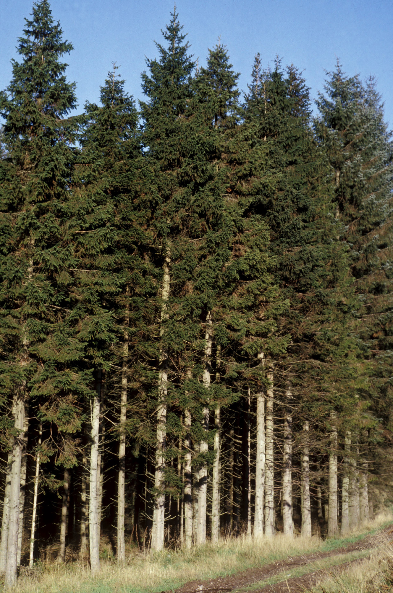
Norway spruce (Picea abies, kuusi)
It accounts for 38% of the forest stock. It is the “climax” species on fertile and moist soils: in the absence of fires, Norway spruce eventually outcompetes other species. It has a conical and pointed crown, with primary horizontal branches from which flexible secondary branches hang, an adaptation to shed winter snow without breaking. The needles are quadrangular, short and sharp. It creates a dark understory and a deep layer of acidic humus.
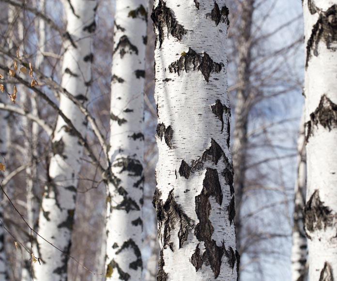
Silver birch (Betula pendula, rauduskoivu)
The main broadleaf species in the country. Its triangular leaves with doubly serrated edges and the white bark that peels off in papery strips are iconic. Birch sap (koivunmahla) is traditionally collected in spring by drilling a hole in the trunk; it is a sweet drink rich in minerals. The leafy summer branches are tied together to make the vihta (or vasta), the whisk used in the sauna to stimulate blood circulation.
The Understory Treasure: Berries
The “Everyman’s Right” (Jokamiehenoikeus) allows anyone to freely gather forest fruits.
Bilberry (Vaccinium myrtillus, mustikka)
Ripening: July-August. Unlike the cultivated American blueberry (larger and with light flesh), the Finnish bilberry is smaller, grows on low shrubs (15-40 cm) in shady coniferous forests, and has dark red/purplish flesh that stains fingers and tongue. It is immensely richer in anthocyanins and antioxidants. It is the main ingredient of mustikkapiirakka (bilberry pie). In autumn, its leaves turn fiery red, contributing to the ruska phenomenon (Lapland foliage).
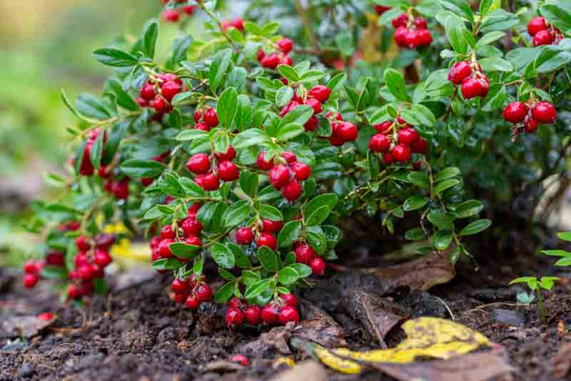
Lingonberry (Vaccinium vitis-idaea, puolukka)
Ripening: late August-September. A round, red and firm berry that grows on creeping evergreen shrubs. It favours dry and bright pine forests. The taste is decidedly sour and acidic when raw; for this reason, it is consumed as jam or sweetened puree to accompany savoury dishes, especially reindeer meat, liver or meatballs. It contains natural benzoic acid, which acts as a preservative allowing the jam to last for months without sterilisation.
Cloudberry (Rubus chamaemorus, lakka/hilla)
Ripening: July-August. Known as “the gold of the bogs”, it is the most precious and expensive berry. It grows exclusively in wet and swampy peatlands (rubber boots are required for picking). The plant produces a single white flower and one fruit per stem. The fruit resembles a raspberry but starts off hard and red, and as it ripens becomes soft, juicy and bright amber-orange. It has a unique sweet-tart flavour with notes of honey and apricot. Very rich in vitamin C, it is traditionally served as warm jam on leipäjuusto (the Finnish “bread cheese”).
Edible Mushrooms and Identification
Of the 5,000 fungal species in Finland, about 200 are edible. Gathering requires caution to avoid confusion with toxic species. The Finnish golden rule is: “Do not pick white mushrooms.” The Destroying Angel (Amanita virosa), completely white and deadly, is present in Finnish forests.
Edible Species
Identification
Look-alike Species / Risk
Chanterelle (Cantharellus cibarius, kantarelli)
Pale yolk-yellow or orange colour. Cap shaped like an irregular funnel (2-10 cm). Under the cap it does not have true gills, but thick, branched folds/ridges that run down the stem and do not detach easily. The stem is firm and the flesh inside is white. When broken, the stem tears into layers like mozzarella cheese. It emits a distinct apricot scent. Grows on the ground, never on dead wood. Ripening: late August-September.
False chanterelle (Hygrophoropsis aurantiaca). The cap is brighter orange and velvety/hairy to the touch (true chanterelle is smooth). Underneath it has true gills that are thin, dense, and detach easily when touched or scraped. The stem breaks cleanly. Smells like generic earthy mushroom, no apricot. Often grows on decaying wood (stumps, chips). Causes gastrointestinal upset.
Porcini / Penny Bun (Boletus edulis, herkkutatti)
Convex cap from brown to dark brown, smooth and slightly sticky when wet. Under the cap it has pores (not gills) that are small and dense, turning from white to yellowish-greenish with age. The stem is robust, bulbous, from white to light brown, with a white net-like pattern visible especially near the top under the cap. The flesh is white, firm, does not change colour when cut and has a hazelnut flavour.
Bitter bolete (Tylopilus felleus, sappitatti). The cap is uniformly light brown. The pores, initially white, turn pinkish with age (key difference). The stem has a dark net-like pattern (like black fishnet stockings). The flesh may turn slightly pink when cut. Not poisonous but extremely bitter (even raw): one piece can ruin a whole pot.
Brownish-grey cap shaped like a deep funnel, small. The stem is hollow, thin and of a distinct yellow colour. Under the cap it has widely spaced grey-yellowish ridges running down. Grows in large colonies hidden in deep moss of spruce forests. Late ripening: September-November. Being thin and fleshy, it is perfect for drying at home.
Craterellus lutescens (Yellow winter chanterelle). Very similar but with a more orange cap and almost smooth underside without true ridges. Equally excellent and edible.
Hedgehog mushroom (Hydnum repandum, vaaleaorakas)
The most foolproof mushroom in Finland. Pale yellow cap, often irregular and asymmetrical in shape. The unmistakable feature is the underside: instead of gills or pores, it has dense white fragile spines (like brush teeth). The stem is white and firm. No poisonous look-alikes in the Hydnaceae family in Finland.
No poisonous look-alikes. Only risk: accumulates more radioactive isotopes (Cesium-137 from Chernobyl) than other mushrooms; it is recommended to blanch it before consumption.
Wild Flowers and Carnivorous Plants
The nutrient-poor soil of Finnish bogs has driven some plants to fascinating evolution:
Round-leaved sundew (Drosera rotundifolia, pyöreälehtikihokki)
A tiny carnivorous plant common in peat bogs (where sphagnum moss grows). Its small round leaves are covered with red tentacles that secrete drops of a sticky substance like dew. This glue shines in the sun attracting small insects (mosquitoes, gnats). When an insect gets trapped, the leaf slowly curls to digest it and absorb the precious nitrogen lacking in the peat soil. It can digest up to 5 insects per month.
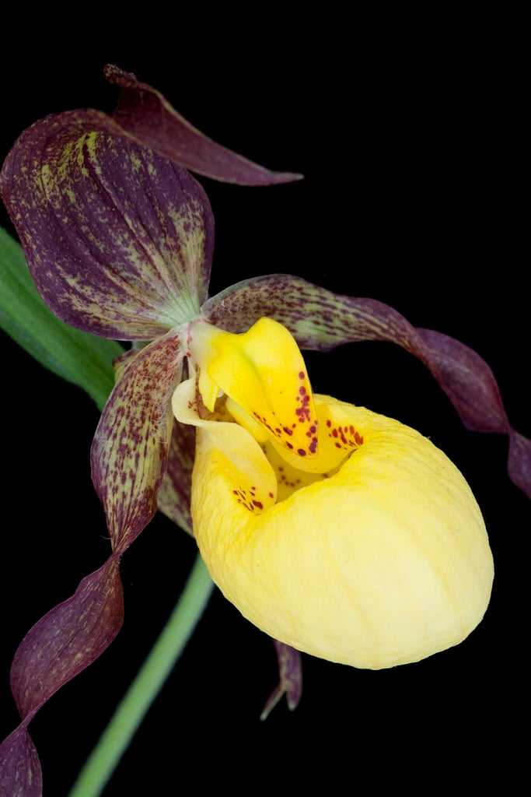
Lady’s slipper orchid (Cypripedium calceolus, tikankontti)
The largest and most spectacular wild orchid in Finland (6-8 cm in diameter). It blooms in June in moist calcareous forests. It is a strictly protected species throughout Finland and cannot be picked. It has a complex trap pollination mechanism: the yellow pouch-shaped labellum emits pheromones that attract small bees; once inside, the bees cannot climb the smooth walls and are forced to exit through a narrow rear corridor, brushing against the stamens and picking up pollen.
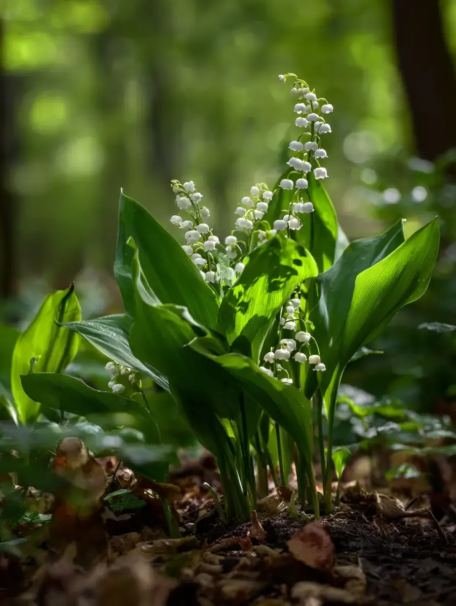
Lily of the valley (Convallaria majalis, kielo)
It is Finland’s national flower. It blooms in late May/early June, flooding shady forests with its intoxicating scent. The small white bells hang from a single curved stem, flanked by two large lance-shaped leaves. Warning: the entire plant, especially the red berries it produces in late summer, is highly toxic if ingested, containing cardioactive glycosides.
🦌 Fauna: Predators, Cervids and the Endemic Seal
Finnish fauna includes species adapted to extreme climates and vast uninhabited areas. The dense forests provide shelter to elusive predators that rarely reveal themselves to humans.
The "Big Four" Carnivores
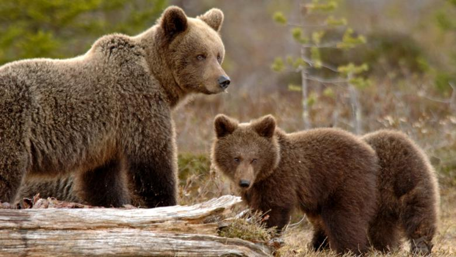
Brown bear (Ursus arctos, karhu)
It is the national animal. About 2,000 individuals live in Finland, mainly concentrated in the eastern forests (Kainuu and North Karelia) near the Russian border. Adult males can exceed 300 kg in weight and stand up to 2.5 metres tall. They are opportunistic omnivores: in summer they spend hours gorging on berries (bilberries) to accumulate the fat needed for hibernation (from October to April). The bear was considered so sacred by the ancient Finns that dozens of alternative names (such as mesikämmen, "honey paw", or otso) existed to avoid pronouncing its real name and awakening its wrath. It is possible to observe them safely from dedicated photographic hides.
Grey wolf (Canis lupus, susi)
Extremely elusive, with a population of about 300 individuals divided into packs, mostly in the east of the country. They actively avoid human contact. They have vast territories (up to 1,000 km²) which they constantly patrol.
Eurasian lynx (Lynx lynx, ilves)
The only wild feline in Finland (~2,500 individuals). Recognisable by the black tufts of hair on its ears, long hind legs, and short tail with a black tip. Its wide paws act as natural snowshoes. Although widespread everywhere, it is almost impossible to see due to its keen senses, spotted camouflage coat, and furtive, crepuscular habits.
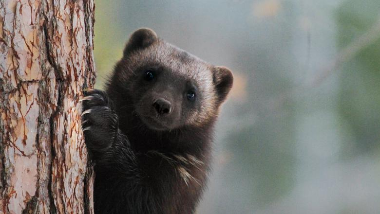
Wolverine (Gulo gulo, ahma)
The largest terrestrial mustelid (related to badgers and martens). Despite weighing only 15-25 kg and resembling a small stocky bear, it possesses enormous strength and jaws capable of crushing frozen bones. It is a formidable predator and scavenger, able to take down prey much larger than itself (such as reindeer trapped in deep snow). Its broad feet allow it to run agilely on fresh snow. The Lieksa region (North Karelia) is one of the best places in the world to observe it in its natural habitat.
The Cervids
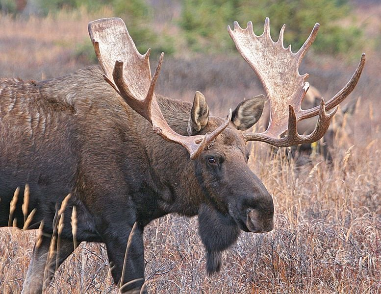
Moose (Alces alces, hirvi)
The giant of the forests. It can reach 700 kg in weight and 2 metres at the shoulder. Males develop impressive palmate antlers that fall off in winter and regrow in spring. It is widespread throughout Finland, preferring wet areas and feeding on shoots, willow leaves, and aquatic plants. It is very active at dawn and dusk. Caution when driving: collisions with moose, due to their long legs causing the massive body to hit the windshield directly, are one of the greatest dangers on rural roads.
Reindeer (Rangifer tarandus, poro)
Beyond 65° north latitude (Lapland), reindeer (about 200,000) outnumber human inhabitants. They are semi-domesticated and managed by Sámi and Finnish herders. They are adapted to extreme cold: the hairs of their coat are hollow to trap air and provide thermal insulation. Their hooves widen in summer to walk on marshy tundra and narrow in winter, exposing sharp edges to dig through ice. They are the only known mammals able to see ultraviolet light, which helps them spot white lichen (their winter food) and predator urine on the snow’s glare.
The Emblem of Saimaa: The Ringed Seal
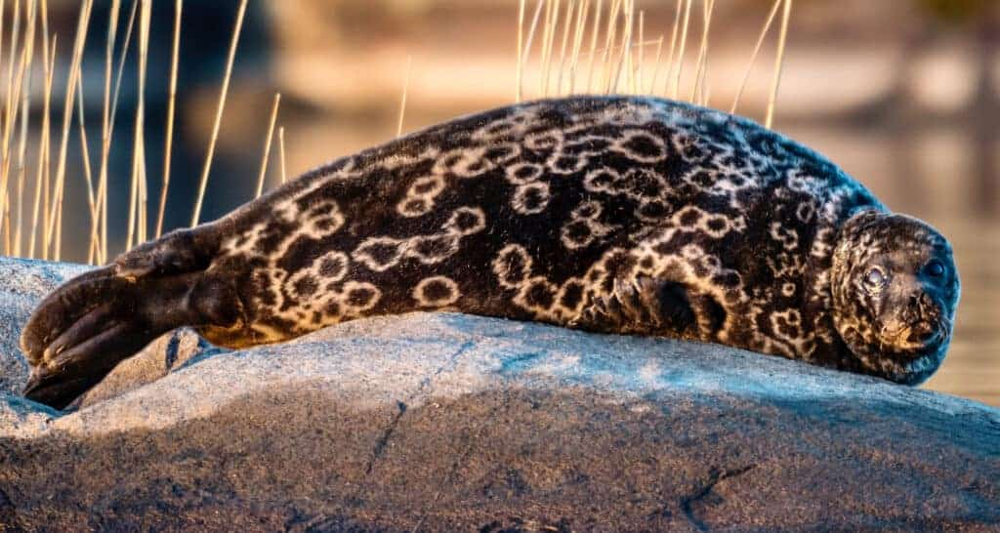
Saimaa seal
The Saimaa ringed seal (Pusa hispida saimensis, saimaannorppa) is one of the rarest and most endangered animals on the planet.
Biology: About 8,000 years ago, post-glacial land uplift separated Lake Saimaa from the Baltic Sea, trapping a group of seals. Over millennia, they adapted to freshwater, developing larger eyes and a bigger brain than their marine cousins to navigate the murky and complex labyrinth of the lake. Today, this freshwater seal numbers barely ~530 individuals (2025 data). It was recognised as a distinct species in 2025.
Behaviour and Reproduction: Between late February and early March, females dig dens (pesä) in snowdrifts that form on the frozen lake edges. These dens maintain a temperature of about 0°C (versus -20°C outside) and protect the pups from predators (foxes) during nursing.
Conservation: Climate change (mild winters without snow) is the main threat: without snowdrifts, pups are born on exposed ice and die from cold or predation. WWF volunteers build artificial snow banks to aid reproduction. Additionally, from 15 April to 30 June, gillnet fishing is prohibited in breeding areas to prevent pups from becoming entangled and drowning.
Sightings: In May and June, during moulting, seals lie on the lake’s exposed rocks to sunbathe and dry their fur. They can be spotted (maintaining at least 50 metres distance) during silent eco-cruises from Puumala or Savonlinna.
Birdlife
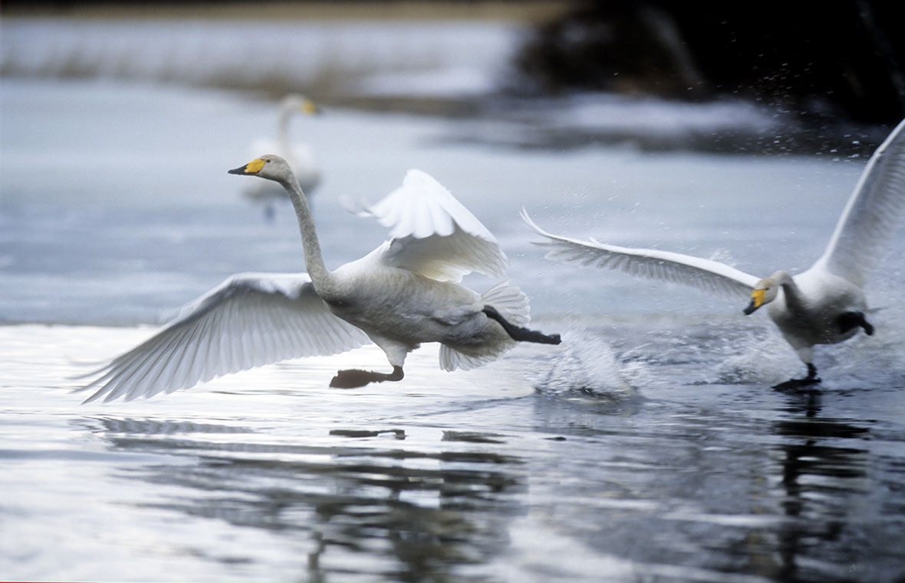
Whooper swan (Cygnus cygnus, laulujoutsen)
The national bird. Its return from wintering grounds in March/April marks the awaited end of winter. It has a wingspan of 2.4 metres and a yellow and black bill (unlike the mute swan which has an orange one). It emits a powerful, trumpet-like call audible kilometres away.
Red-throated diver (Gavia arctica, kuikka)
A water bird with elegant black and white checkered plumage on its back. It is a formidable diver but clumsy on land, as its legs are set far back on its body. Its prehistoric, melancholy call—a trembling howl—resonates over lakes on summer nights, creating the typical "soundtrack" of Finnish cottages.
White-tailed eagle (Haliaeetus albicilla, merikotka)
The largest bird in Europe (wingspan 2.5 m). Saved from extinction caused by DDT in the 1970s, it now nests along the Baltic coast and on the major islands of the large lakes.
Fish Fauna
The cold, oligotrophic waters (nutrient-poor but crystal clear) host prized fish:
Perch (Perca fluviatilis, ahven): The national fish. Present everywhere, recognisable by its red fins and dark vertical stripes.
Pike (Esox lucius, hauki): The apex predator of the lakes. It ambushes among reeds and can exceed one metre in length.
Zander (Sander lucioperca, kuha): A fish with white, delicate flesh, highly sought after in restaurants. Prefers the large lakes of the south and centre.
Whitefish (Coregonus lavaretus, siika): A much-appreciated salmonid, caught by fly fishing or consumed smoked.
Crayfish (Astacus astacus, rapu): In August the tradition of rapujuhlat (crayfish parties) is celebrated: crayfish are boiled with dill and eaten at joyful outdoor tables, accompanied by songs and shots of Koskenkorva (vodka).
🪨 Geology: The Legacy of the Great Glaciation
Finland rests on very ancient foundations, but its current appearance has literally been planed and carved by ice in geologically recent times.
The Substrate: The Fennoscandian Shield and Rapakivi Granite
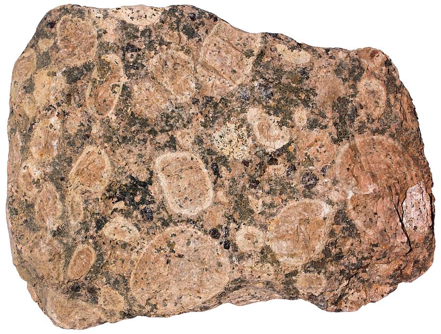
Granito Rapakivi
The Finnish bedrock belongs to the Fennoscandian Shield, with rocks aged from 1.6 to over 3 billion years. The national rock is granite. In the south-eastern region (the Saimaa Geopark and Vyborg area) there is a rock unique in the world: rapakivi granite (1.6 billion years old). The Finnish name literally means "crumbly stone" or "stone that crumbles" (rapautua = to crumble, kivi = stone). It is characterised by large rounded orthoclase crystals in red/pink surrounded by a ring of green/grey oligoclase. Due to the different thermal expansion coefficients of these minerals, the rock easily fractures with temperature changes and disintegrates into a reddish gravel (called moro). It is widely used in architecture and paving (commercially known as "Baltic Brown").
The Weichselian Glaciation and Glacial Formations
About 25,000 years ago, during the last glacial maximum, the whole of Finland was buried under a 2-kilometre-thick ice sheet. The immense pressure removed on average 7–25 metres of solid rock, planing the hills (creating roches moutonnées, smooth on the upstream side and rough on the downstream side) and carving pre-existing fractures. When the climate warmed, the ice began to melt and retreat northwestwards, leaving behind unmistakable formations:
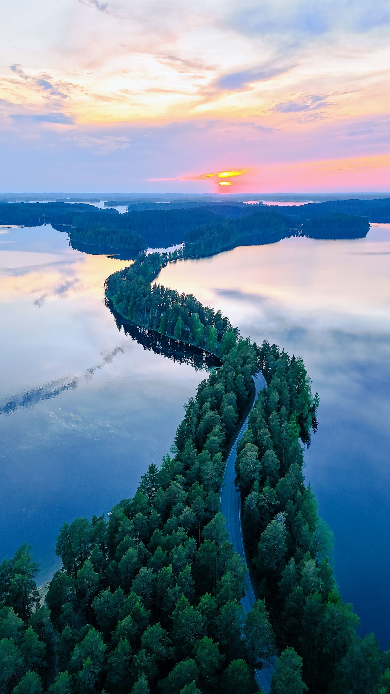
Esker (harju)
Long, sinuous ridges of sand and gravel. They formed from debris deposited by meltwater rivers flowing in tunnels inside or beneath the glacier. The Punkaharju Ridge (7 km long) is the most famous esker: a narrow strip of sandy land covered with pines that separates two lakes. Eskers are the best natural filters for Finnish groundwater, making it among the purest in the world.
The Salpausselkä
During a sudden return of cold about 12,000 years ago (the Younger Dryas), the glacier’s retreat halted for centuries. Debris pushed by the ice accumulated at the front, creating two massive terminal moraine systems (Salpausselkä I and II) that cross all southern Finland from east to west. They form natural embankments that hold back the Saimaa lake system to the north.
Drumlin
Elongated, teardrop-shaped moraine hills (up to a kilometre long but only a few metres high), shaped by ice flow over rocky obstacles. They indicate precisely the direction of glacial movement.
The 188,000 Lakes and Post-Glacial Uplift
The melting ice filled depressions carved in the granite and valleys dammed by moraines, creating Finland’s immense blue labyrinth. Lake Saimaa (the 4th largest in Europe) is a maze of 4,400 km² with over 14,000 islands. Even today, freed from the immense weight of 2 km of ice, the Finnish earth’s crust is rising due to isostatic rebound. The post-glacial uplift raises the ground by up to 1 centimetre per year in the Gulf of Bothnia (about 3 mm/year in the lake region). This phenomenon outpaces the global sea-level rise: in Finland, new land literally continuously emerges from the waters, joining islands and transforming bays into closed lakes.
🌌 Natural Phenomena: The Realm of Summer Light
Finland's northern location (between the 60th and 70th parallels north) disrupts the cycles of light and darkness we are accustomed to at mid-latitudes.
The Midnight Sun and White Nights
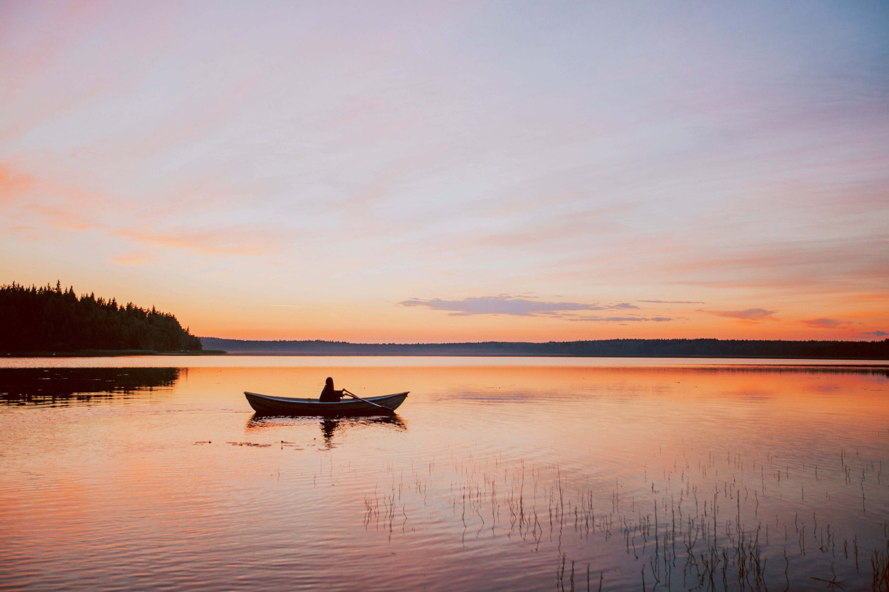
White Nights
Due to the tilt of the Earth's axis (23.5°), in summer the northern hemisphere is tilted towards the sun.
Midnight Sun (Yötön yö - The night without night): Occurs only north of the Arctic Circle (66° 33' N). At the northernmost point of Lapland (Utsjoki), the sun never sets for 73 consecutive days (from 17 May to 27 July). The sun dips towards the horizon, grazes it at midnight, and then begins to rise again.
White Nights (Valoisat yöt): In the rest of Finland, including the Lake District (Saimaa/Punkaharju, ~61.8° N) and Helsinki (60.2° N), the sun physically sets, but it dips less than 6 degrees below the horizon, so astronomical or nautical darkness is never reached. At the summer solstice (21 June), there are about 20 hours of direct sunlight. During the 4 hours when the sun is hidden, the sky maintains a civil twilight brightness: you can read a book outdoors at midnight without artificial light. The light takes on a perpetual reddish-golden hue, like an endlessly long sunset that seamlessly blends into dawn.
Biological effects: The excess light drastically reduces melatonin production (Finns sleep less and are hyperactive in summer), birdsong continues 24 hours a day, and vegetation grows at a frantic pace to compensate for the short warm season. Arctic vegetables and berries, exposed to continuous light, develop exceptional concentrations of sugars and antioxidants.
Noctilucent Clouds (NLC)
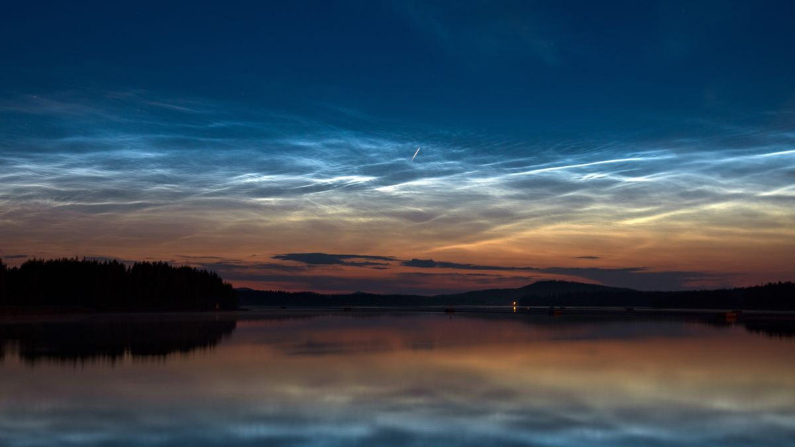
Noctilucent Clouds
Due to the absence of darkness, the northern lights are not visible in summer. However, between June and July, a very rare atmospheric phenomenon can be observed: noctilucent clouds. Located in the mesosphere at about 80-85 km altitude (the highest clouds on Earth, at the edge of space), they are formed by tiny ice crystals aggregated with meteor dust. When the sun dips just below the horizon, the lower atmosphere is in shadow, but the sun’s rays still illuminate these very high clouds from below, making them glow with an electric blue or silvery colour against the dark twilight sky.
🌳 Ecosystems: A Delicate Balance of Water and Peat
The Finnish environment is not just forest, but an interconnected mosaic of three major ecosystems.
1. The Boreal Forest (Taiga)
It is a resilient but slow-growing biome, adapted to harsh winters (down to -40°C) and short summers (15-25°C). The trees have narrow needles to avoid breaking under snow and thick bark to withstand the cold. Historically, the natural cycle of the taiga depended on forest fires (every 50-100 years), which cleared the undergrowth of excess acidic humus, released alkaline nutrients into the soil, and allowed the regeneration of pioneer species (birches and pines). Today, fire suppression by humans favours the absolute dominance of the Norway spruce.
2. The Peatlands (Suo)
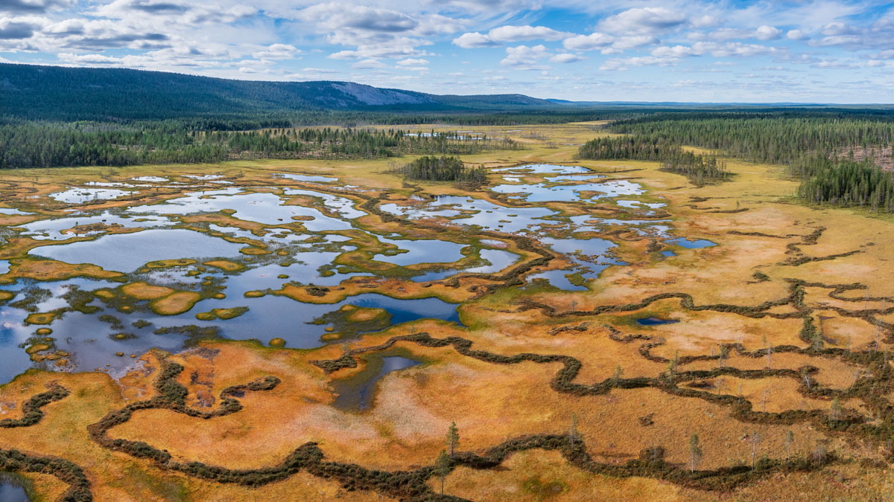
Peatland
About 30% of Finland’s land area (10 million hectares) consists of peatlands, marshes, and swamps. They form because the cold climate, flat terrain, and abundant water drastically slow down the decomposition of dead organic matter.
The role of sphagnum: Mosses of the genus Sphagnum are the engineers of the ecosystem. They absorb water up to 20 times their own weight and secrete acids, lowering the water’s pH to inhibit decomposing bacteria. When they die, the lower part of the moss does not rot but compacts, forming peat (at a rate of just 1 mm per year).
Global importance: Finnish peatlands are among Europe’s largest carbon reservoirs (storing about 5.7 billion tonnes of CO2, far more than forests). They are the exclusive habitat of the cloudberry, carnivorous plants, and safe nesting grounds for cranes and capercaillies. In July, the stagnant waters of the peatlands become the undisputed realm of mosquitoes.
3. The Lacustrine Ecosystem (Järvi-Suomi)
Finnish lakes cover 10% of the territory. They are oligotrophic ecosystems: the waters are extremely poor in nutrients (nitrogen and phosphorus). This prevents excessive algal growth, keeping the water exceptionally clear, crystalline, and often drinkable straight from the source. The summer thermal stratification features warm surface waters (18-22°C) where perch swim, and cold deep waters (4-8°C) that serve as a refuge for whitefish. In winter, ice (often 30-60 cm thick) seals the lakes from December to April. This frozen period is vital not only for the reproduction of the Saimaa ringed seal but also for the life cycle of Arctic fish that require cold, oxygen-rich waters. The spring thaw causes vertical mixing of the waters, bringing nutrients deposited on the lakebed to the surface and triggering the summer explosion of life.
Sources and Naturalistic References: Data on flora, fauna, and geology taken from Metsähallitus (Finnish Forest Administration), Saimaa UNESCO Global Geopark, and Suomen Luonnonsuojeluliitto (Finnish Association for Nature Conservation).
🇳🇴 Norway
🌿 Nature and Wildlife: Norway
Encyclopaedic guide to Norwegian nature — the spectacular Arctic biodiversity, the ancient fjords, the Lofoten Islands, and marine ecosystems.
Norway offers some of the most dramatic and pristine natural landscapes on the planet. From the abyssal depths of the fjords to the rugged peaks of the Lofoten Islands, the Gulf Stream moderates a climate that would otherwise be inhospitable, allowing the existence of unique ecosystems and a rich Arctic and subarctic fauna.
🌲 Flora: From the Boreal Forest to the Arctic Tundra
Norwegian vegetation is strongly influenced by altitude and latitude. Due to the harsh climate, only 3% of the land is arable, while the rest is divided between forests, mountains, and tundra.
The Dominant Tree Species
As in much of Scandinavia, the boreal forest covers the inland areas, but the coast and plateau feature unique adaptations.
Downy Birch and Mountain Birch (Betula pubescens, in Norwegian: dunbjørk / fjellbjørk)
Birch is the most widespread deciduous tree. The mountain subspecies (fjellbjørk) forms the upper tree line on the Scandinavian mountains. Unlike the straight birches of the lowlands, these take on twisted, knotted, and low forms to withstand icy winds and the weight of snow. Their bright green foliage in summer turns into a spectacular golden yellow in autumn.
Scots Pine (Pinus sylvestris, furu)
A majestic tree that dominates the drier, rockier forests. In the inland valleys, pines can reach 30 metres in height and live for centuries. Their resinous wood, naturally resistant to decay, has been used for millennia to build the famous Stavkirke (wooden churches) and Viking ships.
Norway Spruce (Picea abies, gran)
Dominates the moist and fertile inland soils. It forms dense, dark forests, the classic habitat of trolls in Norwegian fairy tales. It is not native to the west coast (the fjord region), where it has only been widely planted in the last century for the timber industry.
The Treasure of the Tundra and Underbrush
The right of public access to nature (Allemannsretten) allows the gathering of wild fruits, an activity deeply rooted in Norwegian culture.
Cloudberry (Rubus chamaemorus, multe)
Known as the "gold of the Arctic," it is Norway’s most precious and sought-after berry. It grows exclusively in wet and boggy peatlands. The white flower turns into a fruit resembling a raspberry that changes from bright red to golden orange when ripe (July–August). Rich in vitamin C, it has a tart and honeyed flavour. Traditionally served at Christmas as multekrem (with whipped cream).
Lingonberry (Vaccinium vitis-idaea, tyttebær)
Small red berries that grow in dense evergreen carpets in pine forests. Being naturally rich in benzoic acid (a natural preservative), they can be preserved for months simply crushed in their own juice. Tyttebær jam is the indispensable accompaniment to meatballs and game.
Chanterelle (Cantharellus cibarius, kantarell)
The most beloved mushroom among Norwegian foragers. It appears between August and September in mixed forests, often near birches and spruces. Its unmistakable egg-yolk yellow colour and fruity aroma make it easy to identify (see identification table in the Finland section).
🦌 Fauna: The Giants of the North and the Lords of the Sky
Norway is home to some of the most spectacular wildlife populations in Europe, with a clear division between the inland terrestrial fauna and the rich marine life along the coast.
Terrestrial Mammals
Musk Ox (Ovibos moschatus, moskus)
A living relic of the Ice Age. Although it became extinct in Europe thousands of years ago, it was successfully reintroduced to Dovrefjell National Park in the 1930s. It can weigh up to 400 kg and has an exceptionally insulating double-layer coat (the qiviut). Despite its bulky build, it can charge at 60 km/h. Observing it requires caution: you must keep at least 200 metres distance.
Moose (Alces alces, elg)
The "King of the Forest". It is the largest cervid in the world, with males exceeding 700 kg and possessing palmate antlers up to 2 metres wide. There are about 100,000 moose in Norway. They are solitary animals that prefer swampy forests and young birch woods. Be careful when driving at dawn and dusk: moose-related road accidents are a real hazard.
Reindeer (Rangifer tarandus, reinsdyr)
In the Arctic regions (Finnmark, Troms, and part of Nordland), reindeer are semi-domesticated, owned by the indigenous Sámi people. They roam freely between winter pastures (inland) and summer pastures (coast and islands). The Svalbard archipelago is home to a smaller, stockier endemic subspecies, the Svalbard reindeer.
The Wealth of the Sea and Skies
White-tailed Sea Eagle (Haliaeetus albicilla, havørn)
The largest bird of prey in Northern Europe, with a wingspan that can reach 2.45 metres. The Lofoten Islands host the highest density of sea eagles in the world. They can be seen majestically soaring above the fjords, using updrafts before diving to snatch fish from the surface with their powerful talons.
Atlantic Puffin (Fratercula arctica, lundefugl)
The "clown of the sea", recognisable by its triangular, brightly coloured beak. It spends the winter out at sea and returns to land only in summer to breed. The island of Røst, at the southern tip of the Lofoten, hosts the largest colony in Norway (about 25% of the national population). Unfortunately, the species is in decline due to warming waters that drive away the small fish they feed on.
Sperm Whale (Physeter macrocephalus, spermasetthval)
The largest toothed predator on Earth. Adult males, up to 20 metres long, gather off Andenes (Vesterålen) year-round. This area is unique because the continental shelf drops steeply near the coast, creating the perfect habitat for giant squids, the sperm whale’s prey, which it hunts by diving to depths of up to 2,000 metres for over an hour.
Orca (Orcinus orca, spekkhogger)
Every winter (from November to February), hundreds of orcas and humpback whales follow the vast herring shoals in the northern fjords (often near Tromsø and the Lofoten). They hunt in groups using a technique called the "carousel": they encircle the herring, drive them to the surface, and stun them with powerful tail slaps.
🪨 Geology: The Cradle of the Fjords
The Norwegian landscape is an open book of geological history, sculpted by the violence of ice and the uplift of the Earth's crust.
The Baltic Craton and the Oldest Rocks in Europe
Norway largely rests on the Baltic Craton (or Baltic Shield), a piece of primordial Earth's crust. In the Lofoten and Vesterålen islands, the exposed rock (gneiss and granite) is an astonishing around 3 billion years old, making it one of the oldest rock formations in Europe. This crustal stability has allowed the rocks to survive countless geological eras.
The Formation of the Fjords
Fjords were not carved by rivers, but by glaciers. During the last ice ages, the whole of Scandinavia was covered by an ice sheet up to 3 km thick.
The weight and movement of the glaciers carved deep "U"-shaped valleys into the hard rock.
Because solid ice can erode even below sea level, these valleys were worn to incredible depths (the Sognefjord is 1,308 metres deep).
When the glaciers retreated (around 10,000 years ago), seawater flooded the valleys.
A typical feature is the "threshold" at the fjord’s mouth: the seabed is shallower where the fjord meets the open sea, because there the glacier floated and stopped eroding the seabed, depositing debris (moraines).
The Caledonian Orogeny
About 425 million years ago, the continental plate of Greenland/North America collided with Europe. The titanic impact uplifted the Caledonian mountain range, mountains that at the time were as high as today’s Himalayas (up to 10,000 metres). Erosion over hundreds of millions of years has reduced them to the present-day Scandinavian Alps (whose highest peak, Galdhøpiggen, now reaches 2,469 metres).
🌌 Natural Phenomena: Extreme Lights
Being crossed by the Arctic Circle (66°33' N), Norway experiences extreme light conditions that dictate the rhythms of nature and human life.
The Midnight Sun
North of the Arctic Circle, in summer, the tilt of the Earth's axis causes the sun to never fully set. In the Lofoten Islands (68° N), the sun remains constantly above the horizon from 26 May to 17 July (about 52 consecutive days). This phenomenon stimulates explosive plant growth and allows seabirds to hunt 24 hours a day to feed their chicks.
The Maelstrom (Moskstraumen)
One of the most powerful and dangerous tidal phenomena in the world. It occurs between the southern tip of the Lofoten (Moskenesøya) and the isolated islet of Mosken. Unlike most whirlpools that form in narrow channels, the Moskstraumen forms in open sea. It is caused by the enormous mass of water pushed back and forth by the tides between the Vestfjord and the Norwegian Sea, colliding with a complex underwater topography. It inspired Edgar Allan Poe and Jules Verne.
🌳 Ecosystems: The Invisible Forests
Beneath the icy surface of the fjords and along the rugged coastline lie ecosystems as rich as those on land.
Kelp Forests (Laminaria)
The cold coastal waters of Norway host vast underwater "forests" of giant brown algae (kelp). These forests are among the most productive ecosystems on Earth and serve as vital nurseries for countless fish species, including the famous Norwegian Arctic cod (Skrei). In the 1970s, an ecological imbalance (possibly linked to overfishing of predators) caused a population explosion of green sea urchins, which devoured and destroyed over 2,000 km² of kelp forests. Today, large-scale restoration projects are slowly bringing this crucial habitat back to life.
Cold Water Coral Reefs
Not all corals live in the tropics. The Norwegian fjords and continental shelf host some of the largest cold water coral reefs in the world, mainly formed by the species Lophelia pertusa. They grow in total darkness, between 40 and 1,000 metres deep, feeding on plankton carried by strong currents. The Røst Reef, located off the Lofoten Islands, is the largest known deep-water coral reef in the world: 43 km long and nearly 7 km wide.
Sources: Norsk Polarinstitutt, Institute of Marine Research (HI), Visit Norway, Geological Survey of Norway (NGU).
🇩🇰 Denmark
Flora
Deciduous Forests: Beech and Oak
European Beech (Fagus sylvatica, “bøg”)
The signature tree of Denmark’s temperate deciduous forests, beech forms tall, smooth-barked gray columns up to 40 m. Leaves are oval with entire or slightly wavy margins, emerging tender green in April–May and deepening to glossy dark by midsummer; autumn brings a copper-bronze glow. Shallow roots knit dense leaf litter that suppresses undergrowth, creating a luminous, cathedral-like woodland. Beech reached Denmark about 3,500 years ago and now dominates Eastern Denmark. Mast years (every 5–8 years) carpet the ground with triangular nuts, feeding rodents and birds. Where/when: Gribskov and Jægersborg Dyrehave (North Zealand), Mols Bjerge, and Fyn’s forests; best April–May (spring ephemerals under the leafless canopy) and October (autumn color). Conservation: Widespread; ancient stands in North Zealand are included within the transnational UNESCO “Ancient and Primeval Beech Forests” serial site. Travel tip: Walk Dyrehaven at dawn to see light shafts through beech trunks and grazing deer herds.
English Oak (Quercus robur, “stilk-eg”)
A broad-crowned giant with rugged bark and lobed leaves on distinctive long petioles. Acorns with long stalks mature September–October, critical autumn food for jays, wild boar reintroduced in enclosures, and deer. Oaks can exceed 500 years; ancient pollards host rich epiphyte and saproxylic beetle communities. Where/when: Old oaks in Jægerspris Nordskov (home to some of Northern Europe’s oldest oaks), Dyrehaven, and Rold Skov; year-round, with canopy life busiest May–July (caterpillars, nesting birds). Conservation: Protected veteran trees in many reserves. Safety: Respect fencing around ancient trunks; roots are fragile.
Small-leaved Lime (Tilia cordata, “småbladet lind”)
Upright, heart-leaved tree with fragrant June–July blossoms that hum with bees. Produces small nutlets with a papery bract. Often mixed with beech on richer soils. Where/when: East Jutland and Zealand; June flowering for pollinator activity. Tip: Follow the scent to observe a pollinator frenzy—hoverflies, bumblebees, and honeybees.
Wood Anemone (Anemone nemorosa, “hvid anemone”)
Low spring ephemeral carpeting beech floors with white stars in March–April. Leaves are palmately lobed; petals often blush pink in aging flowers. Spreads via rhizomes, vanishing by summer as the beech closes canopy. Where/when: Any mature beech stand in April. Safety: Do not eat; mildly toxic.
Wild Garlic/Ramsons (Allium ursinum, “ramsløg”)
Broad, lanceolate leaves with a strong garlic scent, white star-shaped umbels in April–May. Edible leaves popular in Danish spring cuisine. Where/when: Moist, calcareous woods (Mols Bjerge, East Jutland) in April. Safety: Beware deadly lookalikes—lily-of-the-valley.
Identification tips (ramsons vs lookalikes):
| Feature | Ramsons (Allium ursinum) | Lily-of-the-valley (Convallaria majalis) | Autumn crocus (Colchicum autumnale) |
|---|---|---|---|
| Smell | Strong garlic when crushed | None | None |
| Leaves | Single leaf from its own stalk, soft, dull | Two leaves from same stem, shiny | Broad leaves in spring; flowers in autumn |
| Flowers | White starry umbel in spring | White bell flowers along stalk | Pink-purple crocus-like in autumn |
| Toxicity | Edible | Highly poisonous | Highly poisonous |
Heaths and Bogs of Jutland
Heather/Common Ling (Calluna vulgaris, “hedelyng”)
The keystone dwarf shrub of Danish heaths. Tiny opposite leaves form scale-like sprays; pink-purple bells flower July–September, turning whole landscapes mauve. Fire- and grazing-adapted; forms age mosaics essential to heathland birds and reptiles. Where/when: West and Central Jutland (Kongenshus Hede, Randbøl Hede); peak bloom August. Tip: Visit at golden hour for a luminous violet horizon.
Common Juniper (Juniperus communis, “ene”)
Spiny evergreen with sharp needle leaves; berry-like cones (green to blue-black over 18 months) flavor gin. Forms low hummocks on dry heaths and coastal dunes. Where/when: Thy National Park, Bornholm; year-round. Conservation: Declining in some sites due to lack of grazing—look for restoration zones with sheep.
Bilberry/European Blueberry (Vaccinium myrtillus, “blåbær”)
Low shrub with green angular stems and pendent pink-green flowers; edible blue berries ripen July–August, staining fingers purple. Grows in acid beech and conifer understorey. Where/when: Rold Skov, Silkeborg forests; July for picking. Safety: Correctly identify—see table below.
Marram Grass (Ammophila arenaria, “hjelme”)
Tall, stiff tussocks with rolled leaves, specializing in sand capture and dune building. Extensive rhizomes stabilize shifting dunes; leaves unroll in moist conditions to photosynthesize efficiently. Where/when: North Sea coasts (Thy, Blåvandshuk, Skagen Grenen); year-round. Tip: Tread only on marked paths—marram is vital to dune integrity.
Sea Buckthorn (Hippophae rhamnoides, “havtorn”)
Silvery-leaved, thorny shrub with dense orange berries from August into winter, lifelines for thrushes and migrating warblers. Berries are intensely tart, vitamin-C rich. Where/when: Dune backlands and coastal scrub (Thy, Samsø, Bornholm’s Dueodde); late summer to winter for fruit. Safety: Thorns are sharp; wear long sleeves if foraging.
Lyme Grass (Leymus arenarius, “strand-rug”)
Robust blue-green grass in foredunes; long creeping rhizomes. Spikes resemble barley. Where/when: Exposed dunes along Jutland’s west coast; summer for flowering spikes.
Fungi of the Danish Woods and Heaths
Porcini/Penny Bun (Boletus edulis, “Karl Johan-svamp”)
A prized bolete with a brown bun-like cap (5–25 cm), white pore surface turning olive with age, stout white to brown stipe with fine reticulation, firm white flesh. Mycorrhizal with beech and oak; fruits August–October after rain. Where/when: East Jutland, Zealand beech stands. Culinary: Excellent edible. Lookalikes: Bitter bolete (Tylopilus felleus, very bitter, pink pores), gall bolete—always taste a tiny raw piece and spit (bitter = inedible). Safety: Never eat boletes with red pores unless expert.
Chanterelle (Cantharellus cibarius, “kantarel”)
Golden yellow, funnel-shaped, with blunt, forked “false gills”; fruity apricot scent. Caps 2–8 cm; firm, unfolding in clusters July–October. Where/when: Mossy beech-oak forests (Zealand, Funen, East Jutland). Culinary: Choice edible.
Fly Agaric (Amanita muscaria, “rød fluesvamp”)
Iconic red cap with white warts, white gills and ring, white bulbous base with volva remnants. Cap 8–20 cm; associates with birch and pine; August–October. Where/when: Mixed woods throughout. Status: Poisonous (neurotoxic); admire only.
Death Cap (Amanita phalloides, “grøn fluesvamp”)
Olive-green to yellowish cap, white free gills, skirt-like ring, and a sac-like white volva at bulbous base—always check the base. Odor sweetish in age. Lethal amatoxins. Where/when: Beech-oak woods on calcareous soils; August–October (Zealand, Mols Bjerge). Safety: One cap can kill; never pick white-gilled mushrooms unless expert.
Death cap identification table: | Feature | Death cap (A. phalloides) | Parasol (Macrolepiota procera) | Green russula (Russula virescens) | |---|---|---|---| | Gills | White, free | White, crowded, attached | White, attached | | Base | Bulb with sac-like volva | Slender, snakeskin pattern, no volva | No volva, brittle stem | | Cap | Olive/greenish smooth | Brown scales, large | Greenish cracked pattern | | Flesh | White, not brittle | White, fibrous | Brittle, chalky | | Edibility | Deadly | Edible | Edible but tricky |
Fauna
Large and Small Land Mammals
Red Deer (Cervus elaphus, “kronhjort”)
Denmark’s largest wild land mammal. Stags to 200–240 kg with ornate antlers (5–12 tines) cast each spring; hinds smaller (90–120 kg). Coats are russet summer, gray-brown winter; calves dappled. Rutting season late September–October fills forests with roaring challenges and parallel-horning contests. Herds graze forest edges, heaths, and meadows, especially dawn/dusk. Where/when: Jægersborg Dyrehave (semi-wild herds), Klosterheden, Thy; rut views in late September. Population: Tens of thousands nationwide, expanding westward under management. Safety: Keep 50 m distance; stags unpredictable in rut.
Roe Deer (Capreolus capreolus, “rådyr”)
Slender, 15–30 kg; black nasal “moustache,” white rump patch, short antlers (3 tines) on bucks. Solitary or small family groups; crepuscular. Unique delayed implantation: mating in July–August but embryos implant in late winter; fawns born May–June. Where/when: Fields, hedgerows, forest edges nationwide; common year-round. Tip: Scan field margins at dawn from farm tracks.
European Hare (Lepus europaeus, “hare”)
Long-limbed runner of open farmland; black-tipped ears, amber eyes. Spectacular “boxing” in spring as females fend off eager males. Where/when: Arable landscapes of Jutland and Zealand; March–April for boxing. Conservation: Pressured by intensive agriculture; best in mosaic fields with fallow strips.
Birds: Raptors, Owls, Sea Ducks, and the Black Sun
White-tailed Eagle (Haliaeetus albicilla, “havørn”)
Massive sea eagle (wingspan 200–240 cm) with broad plank wings, wedge tail (white in adults), and yellow bill. Returned after near-extinction; now a flagship of Danish coasts and lakes. Hunts fish, waterfowl, carrion. Where/when: Smålandshavet islands, Øresund, Lille Vildmose, Lolland–Falster; year-round. Population: 100–200 breeding pairs in recent years. Tip: Scan with scope from hides at Tryggelev Nor (Langeland). Disturbance: Observe from marked viewpoints only.
Common Buzzard (Buteo buteo, “musvåge”)
Stocky, variable brown raptor often mewing overhead; soars over fields using thermals. Preys on voles and frogs. Where/when: Widespread; best on sunny mid-days for soaring. Conservation: Common.
Barn Owl (Tyto alba, “slørugle”)
Pale, heart-faced owl of barns and church lofts; silent flight, eerie screech. Nest boxes have aided a modest recovery. Where/when: West and South Jutland farms; dusk–night. Tip: Join local bird groups (DOF) for ethical viewing opportunities.
Common Starling (Sturnus vulgaris, “stær”)
Glossy black with iridescent green-purple sheen and speckling; brilliant mimics. In spring and autumn, vast flocks (hundreds of thousands) wheel over marshes in Sort Sol (Black Sun), twisting as one to evade falcons. Where/when: Tønder Marsh, Ribe, Tipperne; March–April and September–October, just before sunset. Bring binoculars and arrive 1–2 hours early to position with wind at your back for best formations.
Eurasian Oystercatcher (Haematopus ostralegus, “strandskade”)
Striking black-and-white shorebird with long orange-red chisel bill and pinkish legs; loud piping calls. Feeds on mussels and worms on tidal flats. Where/when: Wadden Sea, Limfjorden; spring–autumn; breeding from April. Conservation: Near threatened regionally due to shellfish dynamics.
Red Knot (Calidris canutus, “islandsk ryle”)
Compact sandpiper; brick-red breeding plumage in spring, gray in winter. Globally migrating; uses Wadden Sea to refuel on cockles. Where/when: Peak passages April–May and August–September. Numbers: Tens to hundreds of thousands regionally.
Dunlin (Calidris alpina, “almindelig ryle”)
Slightly decurved bill; black belly patch in breeding. Forms massive flocks flashing silver over mudflats. Where/when: Wadden Sea, especially Mandø and Fanø, on falling tide. Tip: Time your visit 1–2 hours after high tide.
Common Eider (Somateria mollissima, “ederfugl”)
Large sea duck; males black-and-white with green nape, females brown cryptic; soft “ah-oooh” calls. Feeds on blue mussels. Down traditionally collected for duvets. Where/when: Kattegat and Øresund coasts; winter rafts number thousands. Conservation: Some declines; respect no-landing signs on breeding islets.
Marine Mammals of the Danish Seas
Harbour Porpoise (Phocoena phocoena, “marsvin”)
Denmark’s only year-round resident cetacean. Small (1.4–1.9 m), dark gray with a small triangular dorsal fin; shy, often seen as brief rolling backs and small splashes. Echolocates at high frequencies; feeds on herring, cod, and gobies. Where/when: Little Belt (Middelfart bridges excellent vantage), Storebælt, Kattegat; calm mornings, May–September for higher detection. Population: Tens of thousands in Danish waters across subpopulations. Tip: Choose silent vantage points; avoid drones and speedboats near sightings.
Harbour Seal (Phoca vitulina, “spættet sæl”)
Speckled gray-brown coat, rounded head with V-shaped nostrils; 1.4–1.8 m. Hauls out on sandbanks to rest and pup (June–July). Where/when: Wadden Sea (Langli, Rømø sandbanks), Kattegat islets; best 2–3 hours after low tide. Population: Several thousands along Danish coasts. Safety: Stay 100–300 m away; use hides or boat tours regulated by Nationalpark Vadehavet.
Grey Seal (Halichoerus grypus, “gråsæl”)
Larger (up to 2.4 m), long “Roman-nosed” profile; males dark with pale blotches. Pups born in late autumn–winter on remote sandbanks. Where/when: Increasing in Wadden Sea and Kattegat (Anholt); winter for pups, year-round for adults. Conservation: Recovering; strict no-approach rules apply.
Geology
Denmark’s terrain is the handiwork of Pleistocene ice sheets that advanced and retreated, leaving a quilt of moraines, tunnel valleys, and outwash plains. The nation’s highest point, Møllehøj, rises to just 171 m, but geology here is vivid in its subtleties—from chalk cliffs built of ancient coccolith ooze to migrating dunes that walk across Jutland.
Chalk Cliffs of the Cretaceous: Møns Klint and Stevns Klint
Møns Klint
A 6-km scalloped wall of white chalk up to ~128 m above the Baltic (most faces 60–100+ m), formed from microscopic coccolith plates that rained onto a warm Cretaceous sea ~70 million years ago. Layers teem with fossils: sea urchins, belemnites, brachiopods. Active erosion and landslides continually reveal new fossils and feed turquoise waters with fine suspended chalk. Where/when: Island of Møn; visit Geocenter Møns Klint for exhibits; come on calm, sunny days to see water glow. Safety: Clifftop paths are safe; do not walk under unstable faces after rain or frost. Fossil code: collect only loose beach finds.
Stevns Klint (UNESCO World Heritage)
A 15-km coastal escarpment famed for a thin, dark “Fish Clay” layer marking the Cretaceous–Paleogene (K–Pg) boundary 66 million years ago—evidence of the asteroid impact that ended the dinosaurs. The iridium-rich clay and shocked quartz grains testify to global catastrophe; above it, limestones record a biotic recovery. Where/when: Højerup church and Stevns Museum; year-round. Tip: Spot the boundary as a dark band between pale limestones; guided tours explain global significance.
Glacial Landscapes: Moraines, Hill Islands, and Erratics
Moraine Ridges and “Bakkeøer”
Curving ridges across Zealand, Funen, and East Jutland outline the stationary edges of ice lobes. Older, rounded “hill islands” (bakkeøer) punctuate West Jutland’s outwash plains. Fertile tills support beech and agriculture; sandy outwash favors heath. Where/when: Everywhere—drive Route 15 across Jutland to see transitions from flat heaths to rolling moraines.
Glacial Erratics: Damestenen (Hesselagerstenen)
Denmark’s largest known erratic on Funen: a boulder ~10 m long, 4–5 m high, brought by ice from Scandinavia. It anchors folk tales and lichens alike. Where/when: Near Hesselager on Fyn; year-round. Tip: Trace the quartz-feldspar crystals with a hand lens.
Tunnel Valleys and Fjords
Subglacial rivers carved deep valleys later flooded into fjords such as Roskilde Fjord and Isefjord. These brackish arms create complex salinity gradients and sheltered wetlands. Where/when: Scenic viewpoints at Skuldelev and Jægerspris.
Sands and Dunes: Råbjerg Mile
Råbjerg Mile
Northern Europe’s largest migrating dune system: a 1 km², 15–35 m high barchanoid dune moving 10–15 m per year toward the northeast. Formed after forest clearance allowed winds to mobilize sand; now protected. Where/when: Near Skagen; year-round, spectacular in low sun. Safety: Expect soft footing; protect electronics from fine sand.
Where Two Seas Meet: Skagen Grenen
Grenen Spit
The sandy tip of Jutland where the Kattegat meets the Skagerrak; opposing waves visibly collide, forming a line of churning water. Longshore drift builds the spit; seals often loaf on the beach. Where/when: Skagen; best on breezy days with clear wave lines. Safety: Do not swim—treacherous currents; respect seal distances.
Natural Phenomena
Sort Sol (Black Sun)
Starling murmurations of breathtaking scale in the marshes of Southwest Jutland. Flocks from tens of thousands to over a million birds twist into organic shapes at dusk to confuse peregrines and hawks, the sound of wings a rushing hush. When: Spring (March–April) and autumn (September–October). Where: Tønder Marsh, Ribe Vesterå, and Tipperne. Tips: Arrive two hours before sunset, position with the wind at your back so birds drift toward you; bring warm layers, tripod, and binoculars.
White Nights and Long Twilights
At ~56°N, Denmark enjoys ~17–18 hours of daylight in late June; nautical twilight can linger all night in the north. Photographers’ dream: extended blue and golden hours. Where/when: Nationwide, mid-May to late July. Tip: Use apps for civil/nautical twilight to plan coastal shoots.
North Sea Storms
Atlantic lows slam Jutland’s west coast with gale-force winds (Beaufort 8–10) in autumn–winter, sculpting dunes and driving storm surges into fjords. After storms, amber washes ashore on the North Sea beaches. Where/when: Thy, Hvide Sande, Blåvand; October–February. Safety: Heed storm warnings and high-tide closures on causeways (e.g., Mandø).
Wadden Sea Tides
Semidiurnal tides of ~1.5–2 m flood and reveal vast mudflats twice daily, exposing lugworm casts, razor clam holes, and seagrass beds. Migratory shorebirds surge to roost at high tide and spread to feed as waters recede. Where/when: Danish Wadden Sea—Rømø, Fanø, Mandø; year-round. Safety: Only cross tidal flats with guides; fog and fast-rising channels are dangerous.
Summer Bioluminescence
Warm, calm nights in late summer can bring glowing surf from plankton like Noctiluca scintillans. Disturbing water sets off soft blue flashes along the strand. Where/when: Sheltered Kattegat bays, late July–September, moonless nights. Tip: Let eyes dark-adapt; avoid headlamps.
Rime and Hoarfrost
On cold, foggy winter mornings, reeds and hedges coat in delicate ice crystals, transforming wetlands into crystalline gardens. Where/when: Inland valleys and lakes, December–February. Photography tip: Shoot backlit for sparkle.
Ecosystems
Wadden Sea (UNESCO World Heritage): Tidal Flats, Salt Marsh, and Seagrass
A living engine on Denmark’s southwest coast, the Wadden Sea is a tri-national UNESCO site hosting 12–15 million migratory birds annually. Intertidal mud and sand flats, salt marshes, barrier islands, and tidal channels cycle nutrients on a planetary scale.
- Structure and life: Mudflats teem with lugworms (Arenicola marina) whose coiled casts stipple the surface, cockles (Cerastoderma edule), and Baltic tellins. Eelgrass (Zostera marina) meadows shelter juvenile fish and invertebrates; salt marsh zones grade from glasswort (Salicornia europaea) in low pannes to sea aster (Tripolium pannonicum). - Keystone fauna: Harbour and grey seals haul out on offshore banks; porpoises feed in channels. Shorebirds—knots, dunlins, bar-tailed godwits, and oystercatchers—refuel on invertebrates timed to tides. - Visiting: Gateways at Ribe, Esbjerg, and Fanø; the Wadden Sea Centre offers world-class interpretation. Best birding: migration peaks April–May and August–October; choose falling tides for shorebird feeding spectacles, high tides for concentrated roosts. Safety: Never venture onto flats without tide knowledge; channels fill quickly.
Beech Forest (Temperate Deciduous)
A multi-layered system with closed beech canopy, sparse shrub layer, spring ephemerals, and rich fungi.
- Seasonal dynamics: March–April wood anemones and yellow anemones, May wild garlic, June–July shade intensifies, September–November fungi flourish and leaves bronze. - Wildlife: Collared flycatcher in select old woods, great spotted woodpecker, tawny owl; red and roe deer browse saplings, shaping regeneration. Deadwood harbors beetles like hermit beetle (locally rare) and bracket fungi. - Key sites: Gribskov (ancient elements, UNESCO serial inclusion), Jægersborg Dyrehave (free-ranging deer and veteran oaks), Mols Bjerge (calcareous slopes). - Visitor tips: Stick to paths in spring to avoid trampling ephemerals; use quiet footwear for deer encounters at dawn. Ticks are active April–October—wear long trousers, do tick checks (Lyme risk; TBE present locally, e.g., Bornholm).
Heathland Mosaics
Heaths blanket sandy, nutrient-poor soils of Jutland where grazing and occasional fire maintain a patchwork of age classes.
- Flora: Heather, bell heather (Erica tetralix) in wetter spots, cross-leaved heath (Erica tetralix), dwarf gorse in places, lichens forming pale “reindeer carpet” on gray dunes. - Fauna: Nightjar churrs at dusk June–July; woodlark sings from perches; reptiles include common adder (Vipera berus) and viviparous lizard (Zootoca vivipara). Invertebrates: silver-studded blue butterfly and emperor moth on heather. - Management: Grazing by sheep and Highland cattle, mechanical cutting, and controlled burns prevent scrub encroachment. Visit Kongenshus Mindepark for classic vistas and heritage displays. - Safety: Adders are shy; watch where you place hands when sitting. Dogs on leads during ground-nesting bird season (March–July).
Coastal Dune Systems: White, Gray, and Brown Dunes
A continuum from the storm-lashed “white dunes” of new sand, through lichen-rich “gray dunes,” to stabilized “brown dunes” with heather and scrub.
- Processes: Onshore winds pile sand where marram traps grains; over time, organic matter accumulates and acidifies, enabling heather and lichens. - Biodiversity: Natterjack toad calls from dune slacks on warm May nights; dune gentians and thyme dot gray dunes; sand wasps burrow in warm faces. - Key areas: Thy National Park (Agger Tange to Bulbjerg), Skagen Odde, Blåvandshuk. Trails and boardwalks protect fragile surfaces. Best light: sunrise over the North Sea fogging low dune slacks.
Fjord and Lagoon Complexes (Limfjorden, Roskilde Fjord, Isefjord)
Shallow, sheltered arms with brackish gradients, eelgrass meadows, and bird-rich islets.
- Limfjorden: A strait-lagoon slicing Jutland; oyster beds (both native European oysters locally and introduced Pacifics), seagrass beds, and porpoise corridors. Birdlife: overwintering scoters and divers, breeding terns on skerries. - Roskilde–Isefjord: Reedbeds harbor great bittern and bearded reedling; shallow flats feed dabbling ducks. White-tailed eagles and osprey hunt fish-rich waters. - Visiting: Kayak routes thread calm bays; bird towers at Eskilsø and Selsø offer panoramic viewing. Conservation: Eelgrass restoration and stone reef projects rebuild habitat complexity. Safety: Respect no-landing bird sanctuaries (April–July).
Lakes, Rivers, and Wetlands
- Lakes: Arresø (Denmark’s largest lake) and Mossø support grebes, marsh harriers, and otters (recovering in Jutland). Dragonfly diversity peaks June–August (e.g., emperor dragonfly, four-spotted chaser). - Rivers: The Gudenå meanders through riparian meadows where snipe drum at dusk; sea trout run in autumn. Restoration has re-meandered many channels to improve spawning. - Bogs and mires: Raised bog remnants like Lille Vildmose (also vast rewilding project for moose and cranes). In April, male moor frogs turn startling blue for a few days during mating. - Visiting tips: Bring mosquito repellent in summer wetlands; stick to boardwalks in bogs. Dawn offers mirror-calm reflections and most wildlife activity.
Agricultural Mosaic and Hedgerows
- Structure: A patchwork of cereals, rapeseed, pastures, and hedgerows lined with hawthorn, blackthorn, and elder. Winter stubble fields attract flocks of yellowhammers and tree sparrows; skylarks sing over spring fields. - Biodiversity features: Flower strips and beetle banks increase beneficial insects; ponds (vandhuller) host newts and calling chorus of green frogs in June nights. - Responsible travel: Use field margins without trampling crops; ask permission before entering private tracks; support farm shops promoting wildlife-friendly practices.
Islands and Bornholm’s Granite Twist
- Baltic islands: Small isles like Saltholm and Sejerø are bird sanctuaries; strict seasonal access rules protect colonies. - Bornholm: Unlike the rest of Denmark’s soft tills, Bornholm shows Precambrian granites, rocky coasts, and heaths; the Helligdomsklipperne sea cliffs and rift valleys add geologic contrast. Where/when: Year-round; spring flowers in Almindingen forest and autumn fungi bonanza.
Practical Field Tips (general): - Seasonality: Spring (April–May) for forests and migrants; summer (June–August) for coasts and long days; autumn (September–October) for mushrooms, raptors, and Sort Sol; winter (November–February) for sea ducks and dramatic storms. - Gear: Binoculars (8x or 10x), scope for coastal birding, windproof layers, waterproof boots for marshes, tick protection April–October. - Safety: Cliffs and dunes can be unstable after rain; tides in the Wadden Sea are fast—book guided walks; seals and ground-nesting birds require distance (100–300 m for seals, obey signage). - Ethics: Stick to trails in sensitive dunes and heaths; keep dogs leashed March–July; leave no trace and take only photos (and loose beach fossils where permitted).
Fonti e Riferimenti: Danish Nature Agency (Naturstyrelsen), Nationalpark Vadehavet and Wadden Sea Centre, GEUS (Geological Survey of Denmark and Greenland), UNESCO World Heritage Centre (Stevns Klint; Ancient and Primeval Beech Forests of Europe), DOF BirdLife Denmark, Aarhus University DCE reports on Danish wildlife populations, local site guides (Geocenter Møns Klint, Museum Stevns).
🇫🇷 France
Flora
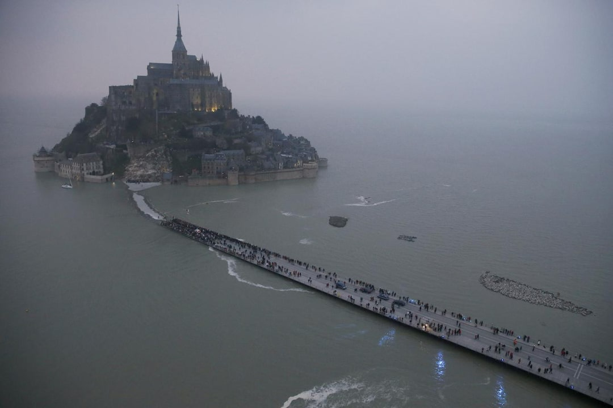
Mont Saint-Michel at high tide
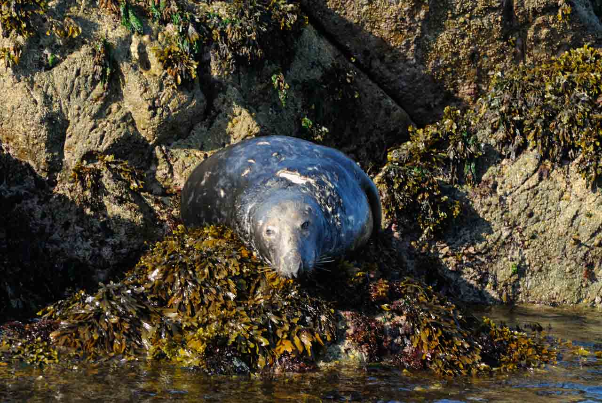
Grey seal on the Brittany coast
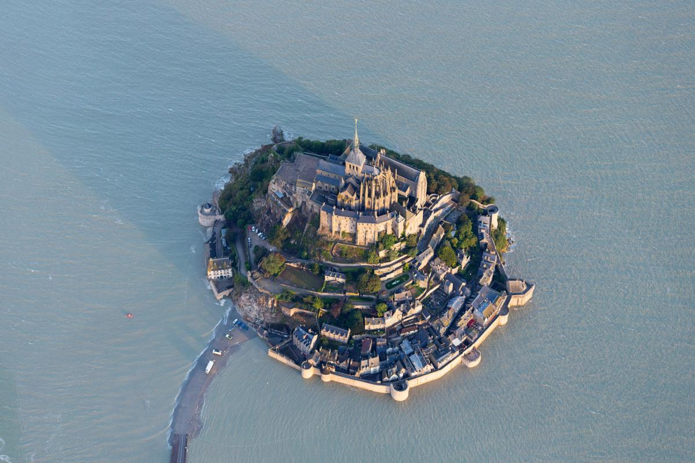
Aerial view of Mont Saint-Michel
Coastal Woodlands and Dunes
Maritime Pine (Pinus pinaster, pin maritime): Tall evergreen (20–35 m, up to 1 m diameter) with thick, reddish fissured bark and long paired needles (15–25 cm) in bristling bundles; elongated cones (10–20 cm) persist for years and open after heat; forms extensive forests in the Landes and sandy Brittany headlands; resinous scent, crowns wind-shorn on seaward edges. Behavior: pioneer on dunes, stabilizes sand, withstands salt-laden gales; cones serotinous tendency aids post-storm regeneration. Where/When: Landes de Gascogne, Quiberon dunes, spring for pollen sheens, year-round silhouettes; safety: beware falling cones in wind, resin is sticky; conservation: planted widely, supports dune stabilization and forestry.
Scots Pine (Pinus sylvestris, pin sylvestre): 15–30 m conifer with distinctive orange-peeling bark on upper trunk, bluish-green short needles (4–7 cm) in pairs; smaller oval cones (3–7 cm). Behavior: tolerant of poor acidic soils; valuable for woodland birds. Where/When: inland Brittany heath-edges, Forêt de Paimpont; best seen in winter when bark color glows; LC (IUCN).
European Sea Holly (Eryngium maritimum, panicaut de mer): Spiny, steel-blue rosette with waxy lobed leaves and thistle-like umbels; 20–60 cm; rhizomatous dune stabilizer. Behavior: flowers June–September, attracts pollinators even in high winds. Where/When: foredunes of Finistère and Vendée; do not trample—fragile foredune species; protected in several coastal reserves.
Marram Grass (Ammophila arenaria, oyat): Stout dune grass (up to 1.2 m) with rolled, waxy leaves; dense root mats trap sand to build dunes. Behavior: rhizomes extend meters per year; seedheads July–October; keystone of dune succession. Where/When: all foredunes from Normandy to Biscay; respect rope fences guarding restoration zones.
Gorse (Ulex europaeus, ajonc d’Europe): Dense, spiny evergreen shrub (1–2.5 m) with coconut-scented golden pea-flowers most profuse Feb–May, sporadically year-round; nitrogen-fixer in coastal heaths. Behavior: provides nesting for warblers, highly flammable in summer drought. Where/When: Cap Fréhel, Crozon heaths; maintain distance during fire bans; invasive beyond native range but iconic in Brittany.
Heather (Calluna vulgaris, bruyère commune): Low woody shrub (10–50 cm) carpeting moors with pink-purple blooms July–October; scale-like leaves in opposite pairs; turns coppery in winter. Behavior: thrives on acidic, nutrient-poor soils; nectar source for prized heather honey. Where/When: Landes de Lanvaux, Paimpont edges, Cap d’Erquy cliffs; best mid-August bloom.
Bocage, Orchards, and Deciduous Forests
European Beech (Fagus sylvatica, hêtre): Dominant canopy tree (30–40 m) with smooth gray bark, dense oval crown; leaves elliptic, wavy-margined, glossy green turning copper in autumn; beech mast feeds wildlife. Behavior: creates shady, species-poor understory; ancient stands host fungi. Where/When: Forêt d’Eawy (Normandy), Huelgoat (Brittany); autumn for foliage; LC.
Pedunculate Oak (Quercus robur, chêne pédonculé): Massive, long-lived tree (up to 40 m) with lobed leaves and acorns on long stalks (‘peduncles’); deeply fissured bark. Behavior: keystone for lichens, insects, birds; supports hundreds of species. Where/When: Normandy hedgerows, Loire floodplain edges; spring leaf burst, autumn acorns; LC.
Cider Apple (Malus domestica, pommier à cidre): Gnarled orchard trees (3–8 m) with spur-bearing branches; spring blossom clouds (April–May) of white-pink; autumn heavy with tannic, bittersweet fruit sorted into doux, doux-amers, amers, acidulés for cider. Behavior: traditional high-stem orchards undergrazed by sheep/cows; hedgerows shelter pollinators boosting fruit set. Where/When: Pays d’Auge (Normandy), Cornouaille (Brittany); cider routes May–October during blossom and pressing; cultivate with heritage cultivars (e.g., Kermerrien, Bedan).
Hedgerow Hazel (Corylus avellana, noisetier): Multi-stem shrub (3–6 m) with round leaves; yellow catkins in late winter; nuts late summer. Behavior: coppiced hedges shape bocage, corridors for dormice and birds. Where/When: across Normandy/Brittany lanes; winter catkin displays.
Marine Flora: Seagrass and Seaweeds
Eelgrass/Seagrass (Zostera marina, zostère marine): Subtidal flowering plant forming dense meadows to 5–10 m depth in sheltered bays; flat ribbon leaves 0.5–1.5 cm wide up to 1 m long. Behavior: oxygenates sediments, baffles waves, nursery for juvenile fish and cuttlefish; seasonal dieback in winter. Where/When: Morbihan Gulf, Bay of Brest mud-sand flats; snorkel on neap tides July–September; LC but locally threatened by eutrophication/boating scars; abide by no-anchoring zones.
Oarweed Kelp (Laminaria digitata, laminaire digitée): Brown alga with hand-like blade divided into ‘digits’; sturdy stipe; grows 1–2 m; forms subtidal forests. Behavior: peak growth winter–spring; canopy engineers light and habitat complexity; harvested sustainably in Brittany. Where/When: Iroise Sea, Ouessant channels; best seen on spring-low tides in clear swell; use reef-walking caution.
Sugar Kelp (Saccharina latissima, kombu royal/laminaire saccharine): Long undivided ruffled blade, sweetish due to mannitol; prefers calmer waters. Where/When: sheltered coves of northern Brittany; culinary harvesting by permit only.
Knotted Wrack (Ascophyllum nodosum, goémon noir d’Islande): Olive-brown straps with egg-shaped air bladders at intervals; mid-shore dominant. Behavior: withstands desiccation; supports periwinkles and amphipods. Where/When: rock pools along Côte des Abers; best seen on mid-ebb; watch slippery rocks.
Fungi (Mushrooms) — Identification and Foraging Safety
Porcini/King Bolete (Boletus edulis, cèpe de Bordeaux): Robust cap (8–25 cm) chestnut-brown with pale bloom, white to olive pores (never gills), stout white stipe with fine pale netting near apex, firm white flesh unchanging on cut; aroma nutty. Habitat: mycorrhizal with beech/oak, sandy beechwoods and bocage edges; Season: late August–November after rains. Travel tip: dawn after wet warm nights; avoid overharvesting (cut cleanly, carry breathable basket). Culinary star; never eat raw.
Safety: spit taste test for bitterness only for T. felleus by experts; never rely solely on bruising; if uncertain, do not consume.
Chanterelle (Cantharellus cibarius, girolle): Vase-shaped, egg-yolk yellow, thick forked ridges (false gills) decurrent on stipe; fruity apricot scent; cap 3–8 cm. Habitat: mossy oak-beech groves, light pine heaths; Season: June–October. Where: Brittany wood edges after storms. Lookalikes: False chanterelle (Hygrophoropsis aurantiaca, inedible) with true thin gills and deeper orange center; Jack-o’-lantern (Omphalotus illudens, toxic; rare N, more S) with sharp blade-like gills and clustered on wood.
- Identification table — Chanterelle and Lookalikes:
Feature
Chanterelle (edible)
False Chanterelle H. aurantiaca (inedible)
Jack-o’-lantern O. illudens (toxic)
Gills
Blunt, forked ridges
True thin gills
True sharp gills, often bioluminescent faintly
Smell
Fruity/apricot
Weak to none
Unpleasant, fungal
Growth
Scattered
Scattered in litter
Dense clusters on wood
Safety: collect singly formed, blunt-ridged fruitbodies; never eat raw; consult local mycology clubs.
Fly Agaric (Amanita muscaria, amanite tue-mouches; toxic): Iconic scarlet cap with white warts, white free gills, ring and volva at base; cap 8–20 cm. Habitat: birch/pine edges; Season: late summer–autumn. Danger: psychoactive/toxic; do not consume; excellent photo subject only.
Death Cap (Amanita phalloides, amanite phalloïde; deadly): Greenish-olive cap, white gills, white ring, prominent sac-like volva; sweetish smell; even small amounts lethal. Habitat: oak/beech; Season: August–October. Safety: avoid any gilled mushroom with white gills, ring, and volva; when in doubt—leave it.
Wild Berries — Identification and Caution
Sea Buckthorn (Hippophae rhamnoides, argousier): Thorny shrub on coastal dunes/cliffs; silvery narrow leaves; vivid orange berries tightly clustered along branches, autumn–winter; vitamin-C rich; extremely sour/astringent. Where: Picardy/Normandy and northern Brittany dunes. Use: syrups and jams; harvest with gloves; protected in some dunes—respect local rules.
Bilberry (Vaccinium myrtillus, myrtille sauvage): Low shrub in acidic heaths/woods; solitary dark blue berries with purple flesh, July–September; stains fingers/lips. Where: inland Brittany heaths (Monts d’Arrée). Note: distinct from American blueberry (cultivated).
- Identification table — Berries and Lookalikes:
Feature
Bilberry (edible)
Black Crowberry Empetrum nigrum (edible but bland)
Deadly Nightshade Atropa belladonna (toxic)
Habitat
Acidic heath/wood
Coastal heath/bogs
Disturbed woodland edges (scarce NW France)
Fruit flesh
Purple throughout
Pale/greenish
Juicy, pale, large shiny berries
Leaves
Small, toothed
Tiny needle-like
Large, soft, entire
Safety: never consume if unsure; avoid solitary large black berries on tall soft-leaved plants (possible nightshade); stick to known shrubs.
Fauna
Marine Mammals and Large Fish
Common Bottlenose Dolphin (Tursiops truncatus, grand dauphin): Robust cetacean 2.5–3.8 m; short beak, falcate dorsal fin; gray above, pale below; social in pods 5–20, coastal residents in Iroise Sea and around Molène–Ouessant. Behavior: bow-riding boats, cooperative hunting on sand eels and mullet; calves year-round with peak spring. Where/When: Iroise Marine Park, summer calm mornings; boat responsibly (slow, parallel course, 100 m distance). Status: LC globally but some NE Atlantic subpopulations are threatened; French coastal group monitored by Parc naturel marin d’Iroise.
Short-beaked Common Dolphin (Delphinus delphis, dauphin commun): Sleeker 1.8–2.5 m; hourglass flank pattern (tan/gray); large groups (dozens–hundreds). Where: outer Bay of Biscay, shelf edge off Brittany in winter–spring following sardines/mackerel. Status: LC; bycatch concern—support dolphin-safe fisheries.
Long-finned Pilot Whale (Globicephala melas, globicéphale noir): 4–6.5 m; bulbous forehead, long pectoral fins; matrilineal pods; deep divers for squid. Where: Bay of Biscay slope waters, especially summer; pelagic whale-watching from La Rochelle/Capbreton canyons on calm days. Status: LC.
Fin Whale (Balaenoptera physalus, rorqual commun): Second-longest animal (18–22 m in NE Atlantic); asymmetrical jaw coloration (right lower jaw white); high, sickle dorsal fin; 2–3 blows per minute when traveling. Where: Bay of Biscay spring–autumn; sometimes off Brittany in late summer; watch from high capes (Pointe du Raz) after storms clearing. Status: VU; keep 300 m distance.
Grey Seal (Halichoerus grypus, phoque gris): Large seal (males 2.3–3.3 m, 170–300+ kg) with long horse-like head; males dark with pale patches, females silver-gray mottled; colony at Sept-Îles and Molène Archipelago; French population in Brittany ~800 and increasing. Behavior: pups born Oct–Dec on remote islets; haul-out at low tide on rocks. Where/When: Sept-Îles (boat tours from Perros-Guirec), Molène; use binoculars; never land on protected islets. Status: LC, protected in France.
Basking Shark (Cetorhinus maximus, requin pèlerin): Planktivorous giant (6–10 m) with cavernous mouth and gill rakers; dorsal fin sometimes visible slicing surface in summer; tail crescentic. Behavior: filters copepods along tidal fronts; non-aggressive. Where/When: Iroise Sea May–August on calm, sunny days near headlands like Ouessant; maintain 100 m distance, no swimming with individuals. Status: EN (IUCN); report sightings to local observatories.
Seabirds and Coastal Raptors
Northern Gannet (Morus bassanus, fou de Bassan): Imposing seabird (wingspan 165–180 cm), white with black-tipped wings and pale golden head; dagger bill; spectacular plunge-diving from 10–30 m. Colony: Île Rouzic (Sept-Îles) hosts 20,000+ breeding pairs (late Feb–Oct). Behavior: loud, dense colonies with sky-filling “gannet rain.” Where/When: boat trips from Perros-Guirec; best March–July chick-rearing; avian influenza has impacted some colonies—respect closures. Status: LC.
Atlantic Puffin (Fratercula arctica, macareux moine): Compact auk (26–29 cm) with colorful triangular bill in breeding plumage, orange legs; only French breeding colony at Sept-Îles (Rouzic and neighboring islets), historically several hundred pairs; numbers fluctuate and are vulnerable to food shifts and predation. Behavior: burrow nester; brings sand eels in bill “combs.” Where/When: April–July via regulated boat viewing; high optical zoom recommended; Status: VU; strict protection.
European Shag (Gulosus aristotelis, cormoran huppé): Slender cormorant (68–78 cm), dark green sheen, thin bill, breeding crest; cliff-ledge nester. Where/When: Brittany headlands; best seen on mid-ebb when feeding in kelp gullies. Status: LC but susceptible to oil pollution.
Peregrine Falcon (Falco peregrinus, faucon pèlerin): Medium raptor (wingspan 95–115 cm), slate upperparts, barred underparts, bold mustache; nests on chalk and granite cliffs of Normandy and Brittany. Behavior: stoops on pigeons and waders at 300+ km/h. Where/When: Étretat arches, Cap Fréhel; dawn/late afternoon hunting; Status: LC, recovering after past DDT declines.
Eurasian Oystercatcher (Haematopus ostralegus, huîtrier pie): Black-and-white shorebird (40–45 cm) with long orange bill; loud “kleep” calls; pries mussels and cockles. Where/When: estuaries (Rance, Vilaine), winter flocks; Status: NT (global) in some assessments due to habitat loss; avoid disturbing roosts on high tides.
Estuary and Inshore Fish, Invertebrates
European Seabass (Dicentrarchus labrax, bar/ loup de mer): Sleek silver predator (40–70 cm typical) patrolling reefs and estuary mouths; juveniles use seagrass nurseries. Where/When: coasts year-round; observe in clear shallows July–September; angling strictly regulated—check size/season limits.
Atlantic Salmon (Salmo salar, saumon atlantique): Anadromous fish; adults silver torpedoes return to rivers (Brittany headwaters) spring and autumn; juveniles (parr) rear in gravel riffles. Where/When: Elorn, Scorff; view at fish passes in spring–autumn; Status: LC globally but many river stocks are threatened; support barrier removal projects.
European Blue Lobster (Homarus gammarus, homard européen): Dark blue-black crustacean to 60 cm; hides in rock crevices; nocturnal forager. Where/When: rocky Brittany coasts; easiest seen in fish markets (May–September fishery); adhere to marine reserve no-take rules.
Brown Crab (Cancer pagurus, tourteau): Large oval carapace with pie-crust edge; common in low-shore crevices and pots. Where/When: intertidal low tide, Brittany; do not pry animals from holes.
European Flat Oyster (Ostrea edulis, huître plate) and Pacific Oyster (Magallana gigas, huître creuse; introduced): Beds and farms in sheltered bays (Cancale, Arcachon); spat settles on shells; filtration clarifies water. Where/When: year-round; tastings fall–spring; avoid harvesting from closed zones.
Jellyfish Note: Blue jellyfish (Cyanea lamarckii) and barrel jellyfish (Rhizostoma pulmo) appear in late spring–summer; stings mild-moderate—rinse with seawater, not fresh; Portuguese man o’ war rare incursions on Biscay after strong SW winds—heed local advisories.
Freshwater and Edge Mammals
Eurasian Otter (Lutra lutra, loutre d’Europe): Sleek semi-aquatic mammal (male 7–12 kg) with powerful tail, webbed feet; crepuscular; spraint (fishy-sweet) marks bridges and stones. Where/When: clear rivers and estuaries of Brittany (Aulne, Scorff), quiet creeks emptying to bays; dusk/dawn best. Status: NT globally, recovering in western France; avoid light/noise near holts.
Geology
Armorican Massif and Pink Granite Coast
- Ancient Roots: The Armorican Massif is composed of Precambrian to Paleozoic rocks (gneisses, schists, granites) formed 600–300 million years ago during the Cadomian and Variscan orogenies; later uplift and differential erosion sculpted today’s peninsulas and headlands. Field evidence: folded metamorphics, quartz veins, and jointed granite tors.
- Côte de Granit Rose (Ploumanac’h to Trégastel): Iconic salmon-pink orthoclase-rich granite; rounded tors carved by spheroidal weathering and wave action into natural sculptures (e.g., Napoleon’s Hat, the Bottle); feldspar crystals impart the rosy hue. Traveler tip: GR34 coastal path at golden hour for color; avoid climbing wet, algae-slick surfaces.
Normandy’s Chalk Cliffs of Étretat
- White Chalk and Flint: Upper Cretaceous chalk (100–66 Ma), same formation as England’s Dover, with hard flint nodules; coastal erosion has carved arches (Porte d’Aval) and the needle (Aiguille). Processes: marine undercutting, rainwater dissolution, frost shattering. Safety: rockfall risk after heavy rain—keep to marked paths and heed closure signs.
Mont Saint-Michel Bay and Tidal Flats
- Tidal Island on Silt: Granite core capped by medieval abbey rising from vast silty-sand flats; extreme macrotidal range up to ~14–15 m during equinoctial springs; tidal currents race across flats like “a galloping horse.” Sediment sources: rivers Sée, Sélune, Couesnon and coastal transport; restoration projects re-mobilize sediments to prevent permanent silting. Safety: guided crossings only—quicksand patches and rapidly advancing water.
Basque Coast Flysch
- Layered Time: Near Saint-Jean-de-Luz–Zumaia (cross-border continuum), alternating sandstone, marl, and limestone beds (Cretaceous–Paleogene) now tilted and exposed as ribbed pavements; some sequences span the K–Pg boundary with microfossils and iridium-rich layers in regional contexts. Visit on negative tides for ribbed “books” of rock; watch for slippery algae and surges.
Natural Phenomena
Extreme Tides and Bores
- Macrotidal Coasts: Brittany and Normandy host among the world’s highest tidal ranges (commonly 8–12 m, peaks ~14–15 m near Mont Saint-Michel); spring tides around equinoxes expose kilometers of seabed, revealing kelp holdfasts, oyster reefs, and labyrinthine rockpools. Traveler timing: consult SHOM tide tables; best intertidal exploration on spring lows with calm swell; return before flood—tide rises fastest in final hours.
- Tidal Bore Notes: Localized bores can form in the Sée and Sélune rivers that empty into the bay during strong spring tides; a small moving wall of water travels upriver. Viewpoints: upstream bends at safe distances; never stand on muddy inner banks.
Atlantic Storms and Swell
- Winter Lows (Nov–Mar): Deep Atlantic depressions drive gale-force winds, long-period swells, and spectacular breakers (10+ m significant wave height in extremes) at capes like Pointe du Raz and Penmarc’h; coastal overwash reshapes dunes, kelp detaches in rafts fueling strandline food webs. Safety: observe from clifftop barriers; rogue waves possible even in fair weather.
Bioluminescence and Night Seas
- Sparkling Plankton: Summer–early autumn calm nights can bring bioluminescent dinoflagellates (e.g., Noctiluca, Alexandrium spp.) that flash when disturbed; footprints and breaking waves glow electric-blue. Where/When: sheltered coves (Crozon, Morbihan Gulf) on moonless warm nights after blooms. Safety: avoid swimming during harmful algal bloom advisories.
Gulf Stream Influence and Mild Winters
- North Atlantic Drift moderates climate along Brittany and Normandy: cool summers, mild winters, early-flowering gorse and year-round sea kale; fog and sea haar can roll in quickly on temperature contrasts—carry layers and a whistle in cliffs/haze.
Ecosystems
Rocky Intertidal Shores (Estran Rocheux)
- Structure: Distinct vertical zones—from splash belt with black lichens (Verrucaria) to high-shore barnacles (Chthamalus), mid-shore wracks (Fucus spp.), and low-shore kelps (Laminaria); tidepools harbor anemones (Actinia equina), blennies, shrimps, and nudibranchs. Productivity: among Europe’s richest due to nutrient mixing and broad exposure times. Tips: explore 1–2 hours before lowest spring tide; wear grippy shoes; practice “leave rocks as found” to protect sheltering fauna.
- Threats/Protection: Oil spills, trampling, warming seas; many sites within Natura 2000 and regional reserves (Iroise Marine Park). Follow no-take and no-bait-digging rules where posted.
Kelp Forests (Forêts de Laminaires)
- Ecology: Subtidal forests 0–15 m depth create 3D habitat, damping waves and turbocharging primary production; canopy (Laminaria digitata/hyperborea) supports grazers (limpets, sea urchins), predators (wrasse, conger eels), and juvenile fish nurseries. Seasonality: peak biomass late winter–spring; summer epiphytes and fish abundance. Access: glass-bottom boat tours (e.g., Molène), advanced snorkel/dives on neap tides with local guides; currents can be strong—only with certified operators.
- Management: Rotational seaweed harvesting in Brittany under quotas; emerging kelp aquaculture; monitor urchin barrens under warming scenarios.
Seagrass Meadows (Herbiers de Zostères)
- Services: Carbon sequestration (blue carbon), sediment stabilization, water clarity, nursery habitat for pipefish, syngnathids, scallops; hosting epiphytic algae and invertebrates. Season: lushest May–September; winter dieback forms wrack lines benefiting dune insects. Visitor code: never anchor or drag kayaks across beds; use mooring buoys; observe seahorses only with licensed scientists—collection illegal.
Estuaries and Mudflats (Estuaires: Loire, Seine, Rance, Vilaine)
- Dynamics: Mixing of fresh and salt water forms turbidity maxima rich in plankton; mudflats teem with lugworms, ragworms, bivalves feeding migratory shorebirds (dunlins, curlews, redshanks). Nursery: juvenile bass, mullet, sole; saltmarshes (Salicornia, Atriplex, Spartina) cushion storm surges. When to visit: autumn and late winter high-tide roost watches; use hides and keep dogs leashed. Conservation: Ramsar sites; threats include dredging, pollution, and development—support reserve visitor centers.
Temperate Deciduous Forest and Bocage
- Forests: Beech–oak canopies with spring ephemerals (wood anemone, bluebell), rich fungal networks; deadwood supports saproxylic beetles and woodpeckers. Bocage: a mosaic of small fields bounded by hedgerows (hawthorn, blackthorn, hazel, oak standards) and ditches; microclimate refuges for bats, butterflies, amphibians. Travel tips: walk green lanes at dawn for birdsong; respect private land; cider routes welcome visitors to traditional orchards underpinning biodiversity.
- Threats/Actions: Hedgerow removal reduces connectivity; agri-environment schemes pay farmers to maintain hedges; volunteer days plant and lay hedges—ask local parks.
Coastal Dunes and Sandplains
- Zonation: Embryo dunes (sea rocket, Cakile maritima), foredunes (marram), gray dunes (lichens, mosses, orchids), and slacks (wet depressions with rare flora); dynamic under storm/wind regimes. Wildlife: natterjack toad breeding in slacks; ground-nesting larks and terns. Visiting: stick to boardwalks; avoid slacks March–July; evening skylark song is a highlight.
- Management: Fencing, invasive plant removal, and wrack retention to rebuild dunes; community beach cleans keep plastics from entangling marram.
Rocky Islands and Cliffs (Sept-Îles, Ouessant, Molène)
- Seabird Strongholds: Granite stacks provide predator-reduced ledges for gannets, guillemots, razorbills, puffins; strong currents bring forage fish; marine reserve status restricts landings. Viewing: regulated boat tours Apr–Aug; bring layers—wind-chill significant even in summer; sea state dictates departure.
- Seal and Dolphin Corridors: Tidal races around Ouessant concentrate plankton and fish; look for feeding frenzies (gannets diving, dolphins corralling). Safety: working waters—keep clear of fishing gear and navigation channels.
Practical Travel Essentials: - Tides: Always check local tide tables and swell forecasts; plan out-and-back routes with a margin of safety; flat beaches can flood from behind. - Footwear: Non-slip soles for intertidal; ankle support on granite paths; avoid flip-flops on reefs. - Binoculars/Scopes: 8–10x binoculars for general use; 20–60x scope ideal for cliff birds and seals at haul-outs. - Seasons: Spring (Apr–Jun) for breeding seabirds and wildflowers; late summer (Jul–Sep) for calm seas, kelp snorkeling, bioluminescence; winter (Nov–Feb) for storm-watching and migratory waders. - Ethics: Observe wildlife distances (seals 100 m, cetaceans 100–300 m); no drones over colonies; take only photos and permitted shellfish within local limits.
Fonti e Riferimenti: Office Français de la Biodiversité; Parc naturel marin d’Iroise; Réserve Naturelle des Sept-Îles (LPO); Ifremer (Institut français de recherche pour l’exploitation de la mer); SHOM tide tables; BRGM (Bureau de Recherches Géologiques et Minières) geology notes; IUCN Red List assessments (accessed 2023–2024); local park visitor centers and management plans.
🇪🇸 Spain
Flora
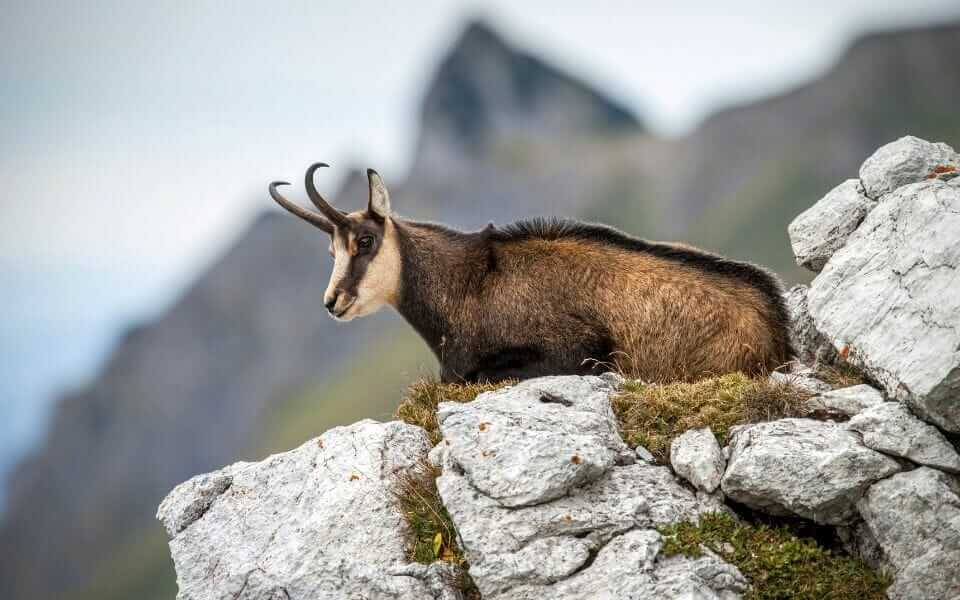
Chamois in the Picos de Europa
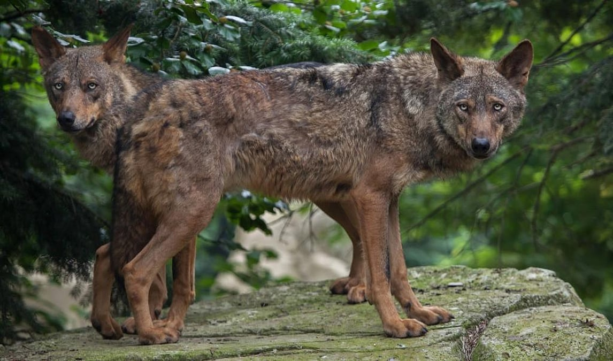
Iberian wolf (Canis lupus signatus)
Atlantic broadleaf forests (hayas y robledales)
Sessile Oak (Quercus petraea, roble albar)
A towering keystone of cool, humid slopes, sessile oaks here reach 25–35 m, with broad, domed crowns and deeply fissured grey-brown bark that hosts lichens and polypody ferns. Leaves are obovate with rounded lobes and no petiole; acorns sit on short stalks that attract jays and rodents. Mixed with beech above 500–1,200 m, they form rich soils that shelter salamanders and stag beetles. Best seen: foothill forests of western Cantabria and Asturias, April–October; autumn (late Oct–Nov) brings copper-gold color.
European Beech (Fagus sylvatica, haya)
Smooth, pale-grey trunks rise like columns in hushed “hayedos,” with dense canopies casting green shade and spring carpets of anemones. Leaves are oval with silky cilia when young; mast years shower beechnuts that sustain boar and bears. Beech tolerates shade, dominating 600–1,400 m, especially on north-facing slopes. Where/when: Hayedo de Montejo’s Cantabrian analogues include Redes and Muniellos (Asturias). Peak leaf color late Oct–early Nov; fresh leaf-out May–June.
Sweet Chestnut (Castanea sativa, castaño)
Ancient coppice groves (“soutos”) line villages and terraces, with buttressed trunks, spiraling fissures, and burr-covered nuts in October. Leaves are long, serrated, and glossy; creamy catkins scent June evenings. Chestnut groves harbor edible mushrooms (boletes, chanterelles). Tips: Respect private groves; ask locally before foraging. Best in Somiedo foothills and around Narcea and Tineo.
Downy/Silver Birch (Betula pubescens, abedul)
Pale, peeling bark and airy crowns signal cool, wet soils and post-glacial habitats. Birches pioneer landslides and bog margins, with catkins dangling early in spring; their trunks host bracket fungi and sapsucker marks. Where: Peatland fringes in Somiedo and Picos valleys; luminous in October fog.
European Holly (Ilex aquifolium, acebo)
Evergreen understory with glossy, spiny leaves (juvenile) and smoother adult leaves higher up. Scarlet berries brighten winter (toxic to humans; critical for thrushes). Old hollies serve as bear-day beds in summer heat. Best: Shady ravines in beech-oak mixes; December–February fruit displays.
Coastal and limestone scrub (encinares y matorrales)
Holm Oak (Quercus ilex, encina)
An evergreen oak of sun-exposed limestone cliffs and coastal slopes. Leaves are thick, leathery, olive-green; acorns feed jays and boar. Encinares on the Basque coast cling to carbonate headlands, with ivy and Smilax threading the understory. See: Cliffs near Getaria–Zumaia and Urdaibai’s calcareous knolls.
St. Dabeoc’s Heath (Daboecia cantabrica, brezo cantábrico)
A signature Atlantic heath shrub 20–40 cm tall with urn-shaped magenta to white flowers late May–September; leaves are small, dark, and slightly hairy beneath. Thrives on acidic coastal soils with gorse, creating pink-purple slopes buzzing with bumblebees. When/where: Basque and Asturian coastal heaths, peak bloom June–July.
Gorse (Ulex europaeus, tojo/ají)
Spiny, broom-like shrub with coconut-scented yellow blooms nearly year-round, peaking March–May. Provides crucial cover for small birds, but is fire-prone—observe no-flame rules. See: Roadside heaths between Llanes and Ribadesella.
Sea Thrift (Armeria maritima, armería)
Cushions of grass-like leaves and pompom pink flowers perched over spray-lashed ledges. Vital for cliff pollinators; leaves salt-tolerant. Where: Flysch edges at Zumaia, cliffs near Llanes.
Alpine and subalpine flora of Picos de Europa
Yellow Gentian (Gentiana lutea, genciana)
Robust herb up to 1.5 m with whorled leaves and tiers of starry yellow flowers June–August; roots historically used for bitters (collection restricted). Occupies calcareous meadows 1,200–2,100 m; pollinated by butterflies. Best: Covadonga high meadows and Liébana slopes in bloom.
Saxifrage (Saxifraga paniculata, saxífraga)
Rosettes with lime-encrusted leaves, sending panicles of white, speckled flowers from rock crevices. A textbook karst specialist anchoring screes. Where: Shaded limestone walls along the Cares trail.
Insectivorous with sticky, glandular leaves trapping midges; violet, orchid-like blooms in spring. Occupies seeps and wet ledges; indicator of pristine water chemistry—avoid trampling. Where: Seeping clifflets above 1,000 m, May–June.
Wetlands and peat bogs (turberas y trampales)
Round-leaved Sundew (Drosera rotundifolia, rocío del sol)
Tiny rosettes with red, dew-tipped tentacles that snap insects; white flowers on delicate scapes. Lives on acidic sphagnum mats, digesting prey to supplement nitrogen. Where: Raised bogs in Somiedo and Redes; best close views from boardwalks.
Sundew
Sphagnum Mosses (Sphagnum spp., esfagnos)
Spongy carpets storing water like a bog battery, acidifying habitats and preserving pollen records. Colors range lime to crimson; vital carbon sinks—never pick or trample. Where: High moors above 900 m, year-round.
Non‑native and plantation species
Tasmanian Blue Gum (Eucalyptus globulus, eucalipto)
Fast-growing plantations (30–50 m at maturity) with peeling bark and sickle leaves; aromatic oils heighten fire risk and reduce understory diversity. Controversial but common along Galicia–Asturias–Cantabria coasts. Tip: Learn to distinguish plantations (even-aged rows) from native forest mosaics.
Monterey Pine (Pinus radiata, pino insigne)
Dark-crowned pine blocks on ridges, valued for timber; cones serotinous in hot, dry spells. Understories sparse; raptors use edges for hunting. Where: Basque ridgelines inland from Zarautz and Bilbao.
A stout, bun-like brown cap (8–25 cm), white to olive pores (no gills), thick white stipe with a fine reticulation near apex; nutty aroma. Appears after late-summer rains (Aug–Nov) in chestnut, beech, and oak stands. Cut cleanly at base; avoid overripe, bug-eaten specimens.
Porcini identification and cautions
Feature
Boletus edulis (edible)
Bitter bolete (Tylopilus felleus – inedible)
Satan’s bolete (Rubroboletus satanas – toxic)
Pores
White → olive-green, do not bruise blue
Pinkish pores, very bitter taste
Red–orange pores, often blues on bruising
Stipe
Pale with fine white netting near top
Pronounced dark netting all over
Bulbous, pale with red flush
Cap
Chestnut-brown, greasy when moist
Brown, matte
Very pale to whitish
Habitat
Beech, oak, chestnut
Similar
Warm calcareous woods (scarcer N coast)
Wild berries (foragers’ caution)
Bilberry (Vaccinium myrtillus, arándano)
Low, green-stemmed shrub of acidic heaths and beech edges with single dark-blue berries (June–Sept) that stain fingers purple; leaves finely toothed and deciduous. Important bear food in late summer.
Bilberry vs. lookalikes (never eat unknown berries)
Cantabrian Brown Bear (Ursus arctos arctos, oso pardo cantábrico)
A conservation triumph: from ~70 individuals in the 1990s to over 400 today (2024) across western (main) and eastern subpopulations linked by males roaming ridgelines. Adults weigh 90–200+ kg; coats range cinnamon to dark chocolate. Diet is 80% plant-based (berries, acorns, chestnuts), supplemented with carrion and invertebrates. Emergence from winter dens peaks March–April; females with cubs seen May–June in Somiedo and Alto Sil meadows. Where/when: Somiedo Natural Park (Asturias) is Spain’s best bear-watching area; dawn/dusk from designated viewpoints (Gua, La Peral) in late spring–early summer and September mast season. Keep 300+ m distance; use scopes; never bait or approach.
Iberian Wolf (Canis lupus signatus, lobo ibérico)
Northwestern packs (approx. 300 in the Cantabrian–Galician sector) range forest–pasture mosaics, preying on deer, boar, and carrion. Distinctive dark foreleg bands and white throat/cheeks. Elusive; best detected by tracks, howls, and dawn silhouettes on ridges. Where: Sierra del Sueve, Somiedo periphery, and León–Asturias borders; dawn stakeouts spring–autumn. Respect local livestock; stay on roads/tracks.
Agile cliff-runner with tan summer coat and dark face stripes; in winter turns greyer and thicker-furred. Horns slender, black, hooked. Several tens of thousands across the Cantabrians, with dense herds in Picos de Europa. Where/when: Cares Gorge walls, Fuente Dé cirque; active early/late in day, year-round.
Forest and river specialists
European Otter (Lutra lutra, nutria europea)
Sleek, 5–9 kg mustelid with tapered tail and pale chin; slides through riffles on trout-rich rivers. Nocturnal–crepuscular; signs include spraints with fish scales and smooth bankside slides. Where: Sella, Narcea, Deva–Cares; watch bridges at dawn.
A small, nocturnal, semi-aquatic insectivore (body 12–16 cm, tail nearly as long) with mobile trunk-like snout sensing caddisfly larvae. Demands cold, clean streams—an umbrella species for water quality. Rarely seen; detect via eDNA projects and conservation panels. Where: Upper Esva, Narcea headwaters; view interpretive centers, not the animal.
Wild Boar (Sus scrofa, jabalí)
Common, adaptable; rootles meadows at dusk. Sows with striped piglets in spring. Keep distance; secure food at campsites.
Raptors, grouse, and scavengers
Griffon Vulture (Gyps fulvus, buitre leonado)
Wingspan 2.4–2.8 m; tawny body, pale head, and “fingers” at wing tips. Nests colonially on cliffs; glides on thermals seeking carcasses. Populations robust and expanding; hundreds visible on good days. Where: Picos limestone cliffs, Sierra del Cuera; best April–October on sunny thermic days.
Slim, white-and-black wings with wedge tail and yellow bare face; famed for tool-using to crack eggs. Migratory: arrives March, departs Sept–Oct. Vulnerable in Spain; watch at feeding stations and cliffs. Where: Picos, Asón valley cliffs (Cantabria).
Egyptian vulture
Golden Eagle (Aquila chrysaetos, águila real)
Dark, long-tailed silhouette with golden nape; pairs defend vast territories, hunting rabbits, chamois kids, and marmots (where present). Where: High ridges of Picos de Europa; scan with scope year-round.
Critically endangered forest grouse with fewer than 500 birds. Males are large, iridescent green-breasted with lyre tail; spring display (April–May) at leks is highly sensitive to disturbance. Do not enter lek areas; observe only via authorized tours/monitoring hides if available.
Marine giants and seabirds of the Bay of Biscay
Fin Whale (Balaenoptera physalus, rorcual común)
Second-largest animal on Earth (20–25 m). Asymmetrical jaw coloration (right lower jaw white) and lance-like dorsal fin. Feeds on krill and small fish along shelf-edge upwellings in spring and late summer. Where: Offshore boat trips from Santander, Gijón/Avilés; peak May–June and Sept.
Sperm Whale (Physeter macrocephalus, cachalote)
Massive square head, blow angled forward-left; deep diver to 1,000+ m, targeting squid over canyons. Observed sporadically in deeper Biscay waters. Where: Offshore pelagics in calm summer windows.
Cuvier’s Beaked Whale (Ziphius cavirostris, zifio de Cuvier)
Elusive, scarred, torpedo-bodied; prefers 1,000–2,000 m depths over submarine canyons (e.g., Avilés). Brief surfacings; watch for beak and low blow. Where: Specialist pelagic surveys; bring patience.
Short-beaked Common Dolphin (Delphinus delphis, delfín común)
Frequent bow-rider with hourglass flank pattern; pods of dozens to hundreds. Year-round, especially over bait balls near shelf break.
European Storm-petrel (Hydrobates pelagicus, paíño europeo)
Tiny, dark seabird with white rump, pattering feet on waves to pick plankton; nocturnal at colonies. Migration peaks late summer–autumn. Where: Seawatching from Cabo Peñas, Jaizkibel on windy days.
Fish, amphibians, and invertebrates
Atlantic Salmon (Salmo salar, salmón atlántico)
Iconic anadromous fish returning to natal rivers (Sella, Narcea, Eo, Cares-Deva). Spring “campanu” (first salmon) is a cultural event. Conservation measures include seasonal closures and catch limits. Where: River observation points in May–June; fish ladders in autumn rains.
Fire Salamander (Salamandra salamandra, salamandra común)
Jet-black with yellow/orange blotches; emerges in wet nights to hunt slugs and worms. Larvae born in streams. Common in beech ravines; most active Sept–April during rains.
Apollo Butterfly (Parnassius apollo, Apolo)
Spectacular white butterfly with red eye-spots; flies in sunny, flower-rich limestone slopes 800–1,800 m, June–August. Sensitive to climate and habitat fragmentation. Where: Liébana and Picos south-facing calcareous meadows.
Stag Beetle (Lucanus cervus, ciervo volante)
Males with oversized antler-like mandibles; crepuscular fliers in oakwoods May–August. Larvae need deadwood—leave fallen logs in place.
Geology
Picos de Europa: a towering limestone massif
A compact Alpine-style range thrust from ancient seafloors, composed largely of Paleozoic–Mesozoic limestones sculpted into razor ridges, sinkholes, and caves. Highest summit: Torre de Cerredo (2,650 m). Karst processes have created poljes, dolines, and resurgences that feed gin-clear rivers (Cares, Sella). Travel tip: The Cares Gorge trail (“Ruta del Cares”) threads a human-hewn ledge through a canyon up to ~1,000 m deep—spectacular but exposed; start early to avoid crowds.
Karst caves and Paleolithic art
Iconic caves (Altamira in Cantabria; Tito Bustillo in Asturias) formed by carbonic acid dissolution along bedding planes and joints, now decorated with speleothems and, in some chambers, Ice Age bison, deer, and horse paintings ~13,000–36,000 years old. Geology meets anthropology: fluctuating sea levels and periglacial climates influenced cave accessibility and dripstone growth. Visitor advice: Many original art sites have limited access; replicas (Altamira “Neocueva”) protect fragile microclimates.
Basque Coast Flysch: Zumaia–Deba–Mutriku
Kilometers of rhythmic layers (sandstone, marl, limestone) tilt seaward like a giant book. These record ~60 million years of sedimentation, including the K–Pg boundary: a thin, clay-rich layer enriched in iridium—global fingerprint of the asteroid impact that ended the dinosaurs ~66 Ma. At Itzurun Beach (Zumaia), guided georoutes pinpoint this boundary and other events (hyperthermals, sea-level shifts). Safety: Only visit at low tide; sudden swell can trap walkers.
Asturias: Paleozoic bedrock, coal, and a Jurassic coast
Asturias’ interior reveals folded Paleozoic slates, quartzites, and limestones—once seabeds and deltas later uplifted during the Variscan Orogeny. Coal seams fueled industrial Asturias; mining heritage museums interpret geology–society links. The Jurassic Coast (Ribadesella–Colunga–Lastres) preserves dinosaur tracks (sauropod and theropod) on tilted slabs; visit at low tide and pair with the MUJA (Museo del Jurásico de Asturias).
Offshore: submarine canyon systems
The Avilés Canyon, plunging from the shelf into abyssal depths within tens of kilometers, funnels nutrient-rich upwellings and concentrates plankton, fish, and whales. Steep gradients, internal tides, and eddies create a pelagic hotspot mirrored by seabird lines after storms. Whale-watching boats time trips to edges of these features in calm weather windows.
Natural Phenomena
Sirimiri and orbayu: the Cantabrian mists
Locally named drizzles—Basque “sirimiri/txirimiri,” Asturian “orbayu/orballo”—are fine, persistent mists that soak forests without dramatic raindrops. They keep mosses emerald, mushrooms abundant, and streams steady through summer. Traveler tip: Pack a breathable rain shell; cotton gets clammy.
Atlantic storms and “galernas”
Fast-moving squalls (“galernas”) can smash into the Bay of Biscay with sudden wind shifts, steep chop, and temperature drops, especially late spring–summer afternoons. Surf is world-class after winter lows; blowholes and cliff spray intensify—keep well back from edges.
Blowholes of Asturias: Bufones de Pría
Where coastal limestones are riddled with vertical shafts connected to sea caves, storm waves force air and water to explode skyward with geyser-roars—audible from kilometers away. Best viewing: High tide with heavy swell (autumn–winter). Respect safety perimeters; jets can drench and knock over spectators.
The green flash over the Bay of Biscay
On clear evenings with sharp horizons, an instant emerald glint crowns the sun as refraction splits light—best from high, west-facing headlands. Vantage points: Cabo Peñas (Asturias), Monte Igueldo (San Sebastián), Sopelana cliffs (Bizkaia).
Seasonal wildlife spectacles
- Bear emergence: March–April on snowlines; subadults feed on carrion and early herbs. - Vulture courts and chick-rearing: Feb–July; watch cliff nests at distance to avoid disturbance. - Salmon runs: May–June (spring), Oct–Nov (autumn rains). - Beech–oak color change: Late Oct–mid Nov; fog enhances hues.
Ecosystems
Atlantic temperate forest (hayedo–robledal)
Mosaics of beech, sessile/pedunculate oak, birch, holly, yew, and hazel drape steep valleys, carpets of wood sorrel and ferns below. Deadwood teems with beetles and fungi, while streams shelter desman and dippers. Conservation: Fragmentation and plantations pressure biodiversity; key refuges include Muniellos (strict reserve), Redes, and Saja–Besaya. Visitor tips: Stick to marked trails; disinfect boots to prevent pathogen spread (e.g., Phytophthora).
Cantabrian high-mountain: alpine meadows, scree, and karst
Above tree-line, summer pastures (“pastos de altura”) bloom with gentians, saxifrages, and silenes, grazed by chamois and semi-feral cattle. Screes and lapiaz (limestone pavements) harbor specialized plants in grikes; caves exhale cold air even in August. Wildlife: Golden eagles, snowfinches (scarce visitors), wallcreepers on cliffs in winter. Safety: Weather flips fast; carry layers and map; fog can erase trails.
Coastal cliffs, flysch platforms, dunes, and beaches
From the tilted strata of Zumaia to grassy cliff-tops near Llanes, this narrow edge hosts thrift, sea kale, nesting shags, and peregrines. Sandy arcs back dunes with marram grass, while estuarine mouths shift bars with storms. Responsible travel: Use signed access points; dune plants are fragile; mind tide tables on wave-cut platforms.
Estuaries and marshes (rías): nurseries of the coast
- Urdaibai Biosphere Reserve (Ría de Gernika): A labyrinth of mudflats, reedbeds, and oak slopes that funnels migratory birds—osprey, spoonbill, waders—between August–April. Kayak quietly on slack tide to see mullet shoals and herons.
- Santoña, Victoria y Joyel (Cantabria): One of Iberia’s finest wetlands for wintering wildfowl and shorebirds (thousands of wigeon, teal, godwits, and flamingo vagrants). Boardwalk hides offer close, ethical views.
- Villaviciosa Estuary (Asturias): A mosaic of saltmarsh, mudflat, and dune systems; autumn passerine migration and wintering grebes/divers.
Marine Bay of Biscay: canyon-driven productivity
Strong shelf-slope fronts and canyon upwellings (Avilés) fertilize surface waters, aggregating anchovy, sardine, and krill. This buffet lifts through the web to dolphins, fin whales, shearwaters, and storm-petrels. Responsible watching: Choose operators with marine biologists, adhere to approach distances, and log sightings to citizen-science databases.
Peat bogs and montane wetlands
Patchy but precious “turberas” on flat saddles store carbon and archive millennia of climate in pollen layers. Sundews, bog asphodel, cotton grass, and sphagnum create a miniature tundra feel. Tips: Walk only on boardwalks or dry edges; a misstep can damage centuries-old growth.
Traditional cultural landscapes: brañas and bocage
High summer pastures (“brañas”) with stone huts and small hay meadows stitch biodiverse edges where orchids, fritillaries, and dragonflies thrive. Hedgerows (“sebes”) of hawthorn and hazel create corridors for dormice and robins. Travel: Somiedo’s Braña de la Pornacal and La Pornacal–Mumián routes showcase living pastoral heritage—respect gates and livestock.
Lakes of Covadonga (Lagos de Enol y Ercina)
Two glacial tarns mirror limestone towers, fringed by alpine turf and gentians. Early mornings bring glassy reflections and chamois silhouettes; autumn cattle bells echo across the cirque. Access: Road closures at peak times—use shuttle buses; bring layers year-round for wind-chill.
Practical wildlife-watching tips - Optics: 8–10x binoculars; 20–60x spotting scope for bears/vultures; rain covers essential. - Timing: Dawn/dusk for mammals; windy onshore days for seabirds; low tide for geology and waders. - Ethics: Keep distances (bears 300+ m; nests 100+ m), avoid playback/calls, pack out waste, and never pick rare plants or collect fossils/artifacts.
Fonti e Riferimenti: Somiedo NP and Picos de Europa official guides; Urdaibai BR ornithological reports; Spanish Cetacean Society (SEC) Biscay surveys; Geological heritage of the Basque Coast Geopark; MUJA (Museo del Jurásico de Asturias) materials; SEO/BirdLife species accounts; IUCN Red List; Spanish Ministry for the Ecological Transition (MITECO) fauna and habitat data.